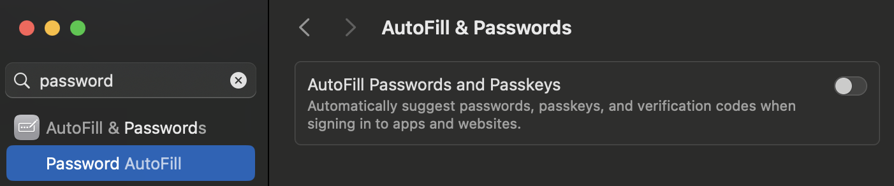

Rauthy
Rauthy - OpenID Connect Single Sign-On Identity & Access Management
This application received an independent security audit from
Radically Open Security
(Frank Plattel and Morgan Hill) as part
of the NGI Zero Core funding. There were some findings that were addressed
in v0.32.1. The full report can be found
here.
What it is
Rauthy is a lightweight and easy to use Identity Provider supporting OpenID Connect, OAuth 2.0 and
PAM. It aims to be simple to both set up and operate, with very secure defaults and lots of config
options, if you need the flexibility. It puts heavy emphasis on Passkeys and a very strong security
in general. The project is written in Rust to be as memory efficient, secure and fast as possible,
and it can run on basically any hardware. If you need Single Sign-On support for IoT or headless CLI
tools, it's got you covered as well.
You get High-Availability, client branding, UI translation, a nice Admin UI, Events and Auditing,
and many more features. By default, it runs on top of Hiqlite
and does not depend on an external database (Postgres as an alternative) to make it even simpler to
operate, while scaling up to millions of users easily.
Secure by default
It tries to be as secure as possible by default while still providing all the options needed to be
compatible with older systems. For instance, if you create a new OIDC client, it activates ed25519
as the default algorithm for token signing and S256 PKCE flow. This will not work with clients,
which do not support it, but you can of course deactivate this to your liking.
MFA and Passwordless Login
Option 1:
Password + Security Key (without User Verification):
Rauthy provides FIDO 2 / Webauthn login flows. If you once logged in on a new client with your
username + password, you will get an encrypted cookie which will allow you to log in without a
password from that moment on. You only need to have a FIDO compliant Passkey being registered for
your account.
Option 2:
Passkey-Only Accounts:
Rauthy supports Passkey-Only-Accounts: you basically just provide your E-Mail address and log in
with your FIDO 2 Passkey. Your account will not even have / need a password. This login flow is
restricted though to only those passkeys, that can provide User Verification (UV) to always have at
least 2FA security.
Discoverable credentials are discouraged with Rauthy (for good reason). This means you will need to enter your E-Mail for the login (which will be autofilled after the first one), but Rauthy passkeys do not use any storage on your device. For instance when you have a Yubikey which can store 25 passkeys, it will not use a single slot there even having full support.
Fast and efficient
The main goal was to provide an SSO solution like Keycloak and others while using a way lower footprint and being more efficient with resources. For instance, Rauthy can easily run a fully blown SSO provider on just a Raspberry Pi. It makes extensive use of caching for everything used in the authentication chain to be as fast as possible. Most things are even cached for several hours and special care has been taken into account in case of cache eviction and invalidation.
Rauthy comes with two database options:
- with embedded Hiqlite, which is the default setting
- or you can optionally use a Postgres as your database, if you already have an instance running anyway.
The resource usage depends a lot on your setup (Hiqlite, Postgres, HA deployment, amount of users, ...), but for a small set of users, it is usually below 100mb of memory even with the very aggressive, in-memory caching Rauthy uses, and in some cases even below 50mb.
Highly Available
Even though it makes extensive use of caching, you can run it in HA mode. Hiqlite creates its own embedded HA cache and persistence layer. Such a deployment is possible with both Hiqlite and Postgres.
Admin UI + User Account Dashboard
Rauthy does have an Admin UI which can be used to basically do almost any operation you might need to administrate the whole application and its users. There is also an account dashboard for each individual user, where users will get a basic overview over their account and can self-manage som values, password, passkeys, and so on.


Client Branding
You have a simple way to create a branding or stylized look for the Login page for each client. The
whole color theme can be changed and each client can have its own custom logo. Additionally, if you
modify the branding for the default rauthy client, it will not only change the look for the Login
page, but also for the Account and Admin page.

Events and Auditing
Rauthy comes with an Event- and Alerting-System. Events are generated in all kinds of scenarios. They can be sent via E-Mail, Matrix or Slack, depending on the severity and the configured level. You will see them in the Admin UI in real-time, or you can subscribe to the events stream and externally handle them depending on your own business logic.
Brute-Force and basic DoS protection
Rauthy has brute-force and basic DoS protection for the login endpoint. The timeout will be artificially delayed after enough invalid logins. It auto-blacklists IPs that exceeded too many invalid logins, with automatic expiry of the blacklisting. You can, if you like, manually blacklist certain IPs as well via the Admin UI.
IoT Ready
With the possibility to run on devices with very limited resources and having compatibility for the
OAuth Device Authorization Grant device_code flow, Rauthy would be a very good choice for IoT
projects. The IdP itself can easily run on a Raspberry Pi and all headless devices can be
authenticated via the device_code flow. The rauthy-client has everything built-in and ready, if
you want to use Rust on the IoT devices as well. It has not been checked in a no_std environment
yet, but the client implementation is pretty simple.
PAM Logins
OIDC / OAuth covers almost all web apps, and for those that don't have any support, Rauthy comes
with forward_auth support. To not need an additional LDAP / AD / something similar for your
backend and workstations, Rauthy comes with its own custom PAM module. It does not just use JWT
Tokens for logging in, but you can actually manage all your Linux hosts, groups and users in
different ways. You have the option to secure local logins to workstations via Yubikey (only USB
Passkeys supported, no QR-code / software keys), and all SSH logins can be done with ephemeral,
auto-expiring passwords, that you can generate via your Account dashboard, if an Admin has created a
PAM user for you. This means you basically have MFA-secured SSH logins without the need for any
modifications or additional software on your local SSH client, and you can use any SSH client from
any machine securely, even if it's not your own.
In addition to the PAM module, you get an NSS module and an NSS proxy that runs on each machine. You can dynamically log in to any machine an Admin has given you access to. Users and groups are not added to local files, but will be resolved via the network.
This module is published in a separate repo to avoid licensing issues, since it relies on some GPLv3 dependencies. You can take a look at it here: rauthy-pam-nss.
Scales to millions of users
Rauthy has no issue handling even millions of users. Everything keeps being fast and responsive,
apart from the search function for users in the Admin UI when you reach the 10+ million users, where
searching usually takes ~3 seconds (depending on your server of course).
The only limiting factor at that point will be your configuration and needs for password hashing
security. It really depends on how many resources you want to use for hashing (more resources ==
more secure) and how many concurrent logins at the exact same time you need to support.
Features List
- Fully working OIDC / OAuth 2.0 provider
- PAM logins via custom PAM + NSS modules
- Hiqlite or Postgres as database
- Fast and efficient with low footprint
- Secure default values
- Highly configurable
- High-Availability
- True passwordless accounts with E-Mail + Magic Link + Passkey
- Dedicated Admin UI
- Account dashboard UI for each user with self-service
- OpenID Connect Dynamic Client Registration
- OpenID Connect RP Initiated Logout
- OpenID Connect Backchannel Logout
- OAuth 2.0 Device Authorization Grant flow
- Upstream Authentication Providers (Login with ...)
- DPoP tokens for decentralized login flows
- Ephemeral, dynamic clients for decentralized login flows
- SCIM v2 for downstream clients
- All End-User facing sites support i18n server-side translation with the possibility to add more languages
- Simple per client branding for the login page
- Custom roles
- Custom groups
- Custom scopes
- Custom user attributes
- User attribute binding to custom scopes
- Optional user-editable custom attributes
- Configurable password policy
- Admin API Keys with fine-grained access rights
- Events and alerting system
- Optional event persistence
-
Dedicated
forward_authendpoint, in addition to the existing userinfo, with support for configurable trusted auth headers - Optional event notifications via: E-Mail, Matrix, Slack
- Optional Force MFA for the Admin UI
- Optional Force MFA for each individual client
- Additional encryption inside the database for the most critical entries
- Automatic database backups with configurable retention and auto-cleanup (Hiqlite only)
- auto-encrypted backups (Hiqlite only)
- Ability to push Hiqlite backups to S3 storage
- auto-restore Hiqlite backups from file or s3
- Username enumeration prevention
- Login / Password hashing rate limiting
- Session client peer IP binding
- IP blacklisting feature
- Auto-IP blacklisting for login endpoints
- Argon2ID with config helper UI utility
- Housekeeping schedulers and cron jobs
- JSON Web Key Set (JWKS) autorotation feature
- Account conversions between traditional password and Passkey only
- Optional open user registration
- Optional user registration domain restriction
- App version update checker
- SwaggerUI documentation
- Configurable E-Mail templates for NewPassword + ResetPassword events
-
Prometheus
/metricsendpoint on separate port - No-Setup migrations between different databases (Yes, even between Hiqlite and Postgres)
- Hot-Reload TLS certificates without restart
-
Can serve a basic
webiddocument - Experimental FedCM support
Getting Started
Choose A Database
Rauthy's default database is Hiqlite. Under the hood, it's using SQLite, but it adds an additional layer on top making it highly-available using the Raft Consensus Algorithm. Don't let the SQLite engine under the hood fool you, it will handle most probably anything you throw at it, as long as your disks are fast enough. Hiqlite can easily saturate a 1GBit/s network connection with just database (write) traffic. All reads are local, which means they are way faster than with Postgres in any scenario.
If you already have a Postgres up an running with everything set up anyway, you might want to choose it as your main DB, but I do not recommend deploying a Postgres instance just for Rauthy. This would be a waste of precious resources.
If you want to migrate between databases at a later point, you can do this at any time very easily.
Just take a look at the Reference Config and the variable MIGRATE_DB_FROM.
Container Images
Rauthy versions before 0.27.0 had different container images depending on the database you choose. However, this is
not the case anymore. There is only a single image which works with any configuration. It works on x86_64 and arm64
architectures.
At the time of writing, you can run Rauthy either with Docker or inside Kubernetes.
Both Getting Started guides do not cover all set up you might want to do for going into production. Especially the
Docker guide is more for testing.
You should take a look at the Reference Config to see, what you might want to configure
additionally. A dedicated Going into production guide will be written in the future.
Docker
Testing / Local Evaluation
For getting a first look at Rauthy, you can start it with docker (or any other container runtime) on your localhost. The image contains a basic default config which is sufficient for local testing ( don't use it in production, it contains hardcoded secrets).
docker run -it --rm -e LOCAL_TEST=true -p 8443:8443 ghcr.io/sebadob/rauthy:0.34.2
To proceed, go to First Start, or do the production setup below to have persistence.
Testing / Evaluation with E-Mail
You can do anything you like with the default admin@localhost account. Rauthy does not
have any special accounts. It is an account like any other. The only reason it is a Rauthy admin, is
because it is assigned to the rauthy_admin role.
If you like to test creating new accounts or password reset flows though, you need to have at least
a minimal setup that is able to send E-Mails. The easiest way (works on localhost only) is the below
docker-compose.yaml:
services:
mailcrab:
image: marlonb/mailcrab:latest
ports:
- "1080:1080"
rauthy:
image: ghcr.io/sebadob/rauthy:0.34.2
environment:
- LOCAL_TEST=true
- SMTP_URL=mailcrab
- SMTP_PORT=1025
- SMTP_DANGER_INSECURE=true
volumes:
- data:/app/data
ports:
- "8443:8443"
depends_on:
- mailcrab
volumes:
data:
You can create a .env file with COMPOSE_PROJECT_NAME=myapp for custom container/volume name
prefix.
Save this into docker-compose.yaml and start with:
docker compose up -d
You then need the logs output from Rauthy to read the random password for the admin@localhost
account:
docker compose logs -f rauthy
Any outgoing E-Mail will be caught by mailcrab, which can be accessed
via http://localhost:1080 .
When you are done testing, shut down with
docker compose down
Production Setup
For going to production or to test more in-depth, you need to create a config that matches your environment.
The first thing you want to do is to add a volume mount for the database. The second thing is to provide a more appropriate config.
Rauthy expects at least the very basics in a config file. Most other values could be set via ENV
vars. It parses both, the config first and any env var that is set will overwrite a possibly
existing one from the config. You can add environment variables to the startup command with the -e
option.
The following commands will work on Linux and Mac OS (even though not tested on Mac OS). Since I am no Windows user myself, I cannot provide tested commands in this case.
1. We want to create a new directory for Rauthy's persistent data
mkdir -p rauthy/data
2. Add the new config file.
This documentation is in an early version and remote links are not available yet, they will be added at a later point. For now, create a new file and paste the reference config
vim rauthy/config.toml
3. Access rights for the Database files
The Rauthy container by default runs everything with user:group 10001:10001 for security
reasons.
To make this work with the default values, you have 2 options:
- Change the access rights:
sudo chmod 0600 rauthy/config.toml
sudo chmod 0700 rauthy/data
sudo chown -R 10001:10001 rauthy
- The other solution, if you do not have sudo rights, would be to change the owner of the whole directory.
chmod a+w rauthy/data
This will make the directory writeable for everyone, so Rauthy can create the database files inside
the container with 10001:10001 again.
The safest approach would be to change the owner and group for these files on the host system. This
needs sudo to edit the config, which may be a bit annoying, but at the same time it makes sure,
that you can only read the secrets inside it with sudo too.
You should avoid making Rauthy's data world-accessible at all cost. Hiqlite will take care of this automatically during sub-directory creation, but the config includes sensitive information.
4. Adopt the config to your liking.
Take a look at the reference config and adopt everything to your needs, but
to not break this example, be sure to not change cluster.data_dir.
For an in-depth guide on a production ready config, check the Production Config section.
A mandatory step will be to generate proper encryption keys. Take a look at Encryption.
5. Start the container with volume mounts
docker run -d \
-v $(pwd)/rauthy/config.toml:/app/config.toml \
-v $(pwd)/rauthy/data:/app/data \
-p 8443:8443 \
--name rauthy \
ghcr.io/sebadob/rauthy:0.34.2
-v $(pwd)/rauthy/config.toml:/app/config.tomlmounts the config in the correct place-v $(pwd)/rauthy/data:/app/datamounts the volume for Hiqlite-p 8443:8443needs to match your configuredserver.port_httporserver.port_httpsof course. If you use a reverse proxy inside a docker network, you don't need to expose any port, but you need to make sure to setserver.scheme = "http",server.proxy_mode = trueand the correct value forserver.trusted_proxies.
6. You can now proceed with the First Start steps.
Kubernetes
At the time of writing, there is no Helm Chart or Kustomize files available yet. The whole setup is pretty simple on purpose though, so it should not be a big deal to get it running inside Kubernetes.
Single Instance
Since Rauthy uses pretty aggressive caching for different reasons, you cannot just have a single deployment and scale up the replicas without a proper HA setup. How to deploy a HA version is described below.
The steps to deploy on Kubernetes are pretty simple.
- Create namespace
- Create and apply the config
- Create and apply the stateful set
Create Namespace
For the purpose of this documentation, we assume that Rauthy will be deployed in the rauthy
namespace.
If this is not the case for you, change the following commands accordingly.
kubectl create ns rauthy
Create and apply the config
This documentation will manage the Kubernetes files in a folder called rauthy.
mkdir rauthy && cd rauthy
Create the config file, paste the Reference Config and adjust it to your
needs. We are putting the complete config in a K8s secret. Rauthy's config contains quite a few
different secret values and it's just a lot simpler to maintain everything in a single secret, than
splitting it into a ConfigMap and overwrite each secret manually.
apiVersion: v1
kind: Secret
metadata:
name: rauthy-config
namespace: rauthy
type: Opaque
stringData:
config.toml: |
PASTE CONFIG HERE - WATCH THE INDENTATION'
Open the config with your favorite editor and paste the Reference Config in
place.
Make sure to watch the indentation.
I recommend to just always set cluster.node_id_from = "k8s" when deploying a StatefulSet. This
will parse the Raft NodeID automatically from the K8s Pod / Hostname and you don't have to worry
about the node_id. For instance, a Pod named rauthy-0 will be translated to node_id = 1
automatically.
There are some values that you need to generate on your own. These are:
cluster.secret_raft+cluster.secret_apiencryption.keys+encryption.key_active
The secrets for the cluster can be just some long random alphanumeric values. They are used for
authentication for the Hiqlite Raft + API layer. The encryption keys must be generated. More
detailed explanation is in the Encryption section. The tl;dr is:
echo "$(openssl rand -hex 4)/$(openssl rand -base64 32)"
Copy the output and add it to keys. The key_active will be the first part of the output until the
first /. For instance:
[encryption]
keys = ["XLCcaQ/f2xmq/nxVFgJN0CN311miyvVlBxXOQISyw1nPEPOqiI="]
key_active = "XLCcaQ"
You can generate safe values for both secret_raft and secret_api in many ways. You can just
provide a random alphanumeric value, which for instance:
cat /dev/urandom | tr -dc 'a-zA-Z0-9' | head -c48
or you can use the above openssl command again, even though Hiqlite does not need or utilize
base64:
openssl rand -base64 48
If you plan on using S3 for backups, paste the proper values into cluster.s3_* values.
It seems that in some environments, the above openssl command does not output proper values, which
will make Rauthy panic on startup, when it checks the given values. If you run into that situation,
you can generate them without openssl as well, with e.g:
echo "$(cat /dev/urandom | tr -dc 'a-zA-Z0-9' | head -c 6)/$(cat /dev/urandom | head -c 32 | base64)"
Create and apply the stateful set
touch sts.yaml
Paste the following content into the sts.yaml file:
apiVersion: v1
kind: Service
metadata:
name: rauthy
namespace: rauthy
spec:
selector:
app: rauthy
ports:
# chose whatever fits your needs here, you usually only need either http or https
- name: http
port: 8080
targetPort: 8080
- name: https
port: 8443
targetPort: 8443
---
# The headless service is used for the Raft Cluster setup, so Nodes
# can connect to each other without any load balancer in between.
apiVersion: v1
kind: Service
metadata:
name: rauthy-headless
namespace: rauthy
spec:
type: ClusterIP
clusterIP: None
# Make sure to only publish them on the headless service
# and NOT the one you are using via your reverse proxy!
publishNotReadyAddresses: true
sessionAffinity: None
selector:
app: rauthy
ports:
- name: hiqlite-raft
protocol: TCP
port: 8100
targetPort: 8100
- name: hiqlite-api
protocol: TCP
port: 8200
targetPort: 8200
---
# The PDB is only necessary for a HA deployment. You can take it out for a single instance.
apiVersion: policy/v1
kind: PodDisruptionBudget
metadata:
name: rauthy
namespace: rauthy
spec:
maxUnavailable: 1
selector:
matchLabels:
app: rauthy
---
apiVersion: apps/v1
kind: StatefulSet
metadata:
name: rauthy
namespace: rauthy
labels:
app: rauthy
spec:
serviceName: rauthy-headless
# If you start a fresh cluster without a bootstrapped Admin password, it is
# highly suggested to start a single replica for the first setup + login.
# It will work with 3 replicas directly, but if you are not quick enough and
# your logs buffer size is small, you might miss the auto-generated password
# in Pod `rauthy-0` because of many logs.
replicas: 1
selector:
matchLabels:
app: rauthy
template:
metadata:
labels:
app: rauthy
spec:
affinity:
podAntiAffinity:
requiredDuringSchedulingIgnoredDuringExecution:
- labelSelector:
matchExpressions:
- key: app
operator: In
values:
- rauthy
topologyKey: "kubernetes.io/hostname"
securityContext:
fsGroup: 10001
containers:
- name: rauthy
image: ghcr.io/sebadob/rauthy:0.34.2
securityContext:
capabilities:
drop:
- ALL
# User ID 10001 is actually built into the container
# at the creation for better security
runAsUser: 10001
runAsGroup: 10001
runAsNonRoot: true
allowPrivilegeEscalation: false
ports:
# Hiqlite internal ports
- containerPort: 8100
- containerPort: 8200
# You may need to adjust this, if you decide to start
# in https only mode or use another port
- containerPort: 8080
- containerPort: 8443
volumeMounts:
- name: rauthy-data
mountPath: /app/data
readOnly: false
- name: rauthy-config
mountPath: /app/config.toml
readOnly: true
subPath: config.toml
readinessProbe:
httpGet:
scheme: HTTP
# Hiqlite API port
port: 8200
path: /ready
initialDelaySeconds: 5
# Do NOT increase this period, because otherwise K8s may not catch
# a shutting down pod fast enough and may keep routing requests to
# it while is will be unable to handle them properly because of
# the shutdown.
periodSeconds: 3
# We may get a single failure during leader switches
failureThreshold: 2
livenessProbe:
httpGet:
scheme: HTTP
# Rauthy API port
port: 8080
path: /auth/v1/health
initialDelaySeconds: 60
periodSeconds: 30
# We may get a single failure during leader switches
failureThreshold: 2
resources:
requests:
# Tune the memory requests value carefully. Make sure, that the
# pods request at least:
# `ARGON2_M_COST` / 1024 * `MAX_HASH_THREADS` Mi + idle memory
# The actual usage also heavily depends on the Memory Allocator
# tuning. You can find more information in the Tuning section
# in this book.
#
# A HA instance with Hiqlite enabled and without additional memory
# tuning will usually settle ~100mb idle memory being used.
# If you use an external Postgres, idle memory can go as low as
# ~30mb.
memory: 64Mi
# The CPU needs to be adjusted during runtime. This heavily
# depends on your use case.
cpu: 100m
limits:
# Be careful with the memory limit. You must make sure, that the
# (very costly) password hashing has enough memory available. If not,
# the application will crash. You do not really need a memory limit,
# since Rust is not a garbage collected language. Better take a close
# look at what the container actually needs during
# prime time and set the requested resources above properly.
#memory:
# A CPU limit may make sense in case of DDoS attacks or something
# like this, if you do not have external rate limiting or other
# mechanisms. Otherwise, `MAX_HASH_THREADS` is the main mechanism
# to limit resources.
#cpu: 1000m
volumes:
- name: rauthy-config
secret:
secretName: rauthy-config
volumeClaimTemplates:
- metadata:
name: rauthy-data
spec:
accessModes:
- "ReadWriteOnce"
resources:
requests:
storage: 128Mi
#storageClassName: provideIfNeeded
Ingress
This example assumes, that the deployment will run behind a Kubernetes ingress resource of your choice.
It uses Traefik with the IngressRoute CRD.
Nevertheless, the ingress is really simple, and it should be very easy to adopt anything else.
Create the ingress.yaml
touch ingress.yaml
Paste the following content into the ingress.yaml file and adjust to your needs
apiVersion: traefik.containo.us/v1alpha1
kind: IngressRoute
metadata:
name: rauthy-https
namespace: rauthy
spec:
entryPoints:
- websecure
routes:
- match: Host(`auth.example.com`)
kind: Rule
services:
- name: rauthy
port: 8080
Deploy
We are now ready to deploy:
kubectl apply -f .
And then to observe the deployment:
kubectl -n rauthy get pod -w
You can now proceed with the First Start steps.
Production Setup
Config
Going to production does not need too many additional steps.
TLS Certificates
The thing you need will be valid TLS certificates, of course. To get these, there are a lot of existing mechanisms. If you use an internal Certificate Authority (CA), you do have you own tools to work with this anyway. If, however, you want to use something like Let's Encrypt, I suggest to use the cert-manager, which is easy and straight forward to use.
An example, how to add a certificate for the Traefik IngressRoute from above:
apiVersion: traefik.containo.us/v1alpha1
kind: IngressRoute
metadata:
name: rauthy-https
namespace: rauthy
spec:
entryPoints:
- websecure
tls:
# Paste the name of the TLS secret here
secretName: secret-name-of-your-tls-certificate
routes:
- match: Host(`auth.example.com`)
kind: Rule
services:
- name: rauthy
port: 8080
You may want to add an HTTPS redirect as well:
apiVersion: traefik.containo.us/v1alpha1
kind: Middleware
metadata:
name: https-only
namespace: rauthy
spec:
redirectScheme:
scheme: https
permanent: true
---
apiVersion: traefik.containo.us/v1alpha1
kind: IngressRoute
metadata:
name: rauthy-http
namespace: rauthy
spec:
entryPoints:
- web
routes:
- match: Host(`auth.example.com`)
kind: Rule
middlewares:
- name: https-only
services:
- name: rauthy
port: 8080
Hiqlite Internal TLS
You can of course also provide TLS certificates for the Hiqlite internal communication. Two independent networks are created: one for the Raft-Internal network traffic like heartbeats and data replication, and a second one for the "external" Hiqlite API. This is used by other Hiqlite cluster members for management purposes and to execute things like consistent queries on the leader node.
You can provide TLS certificates for both of them independently via the following config variables:
[cluster]
# If given, these keys / certificates will be used to establish
# TLS connections between nodes.
#
# values are optional, overwritten by: HQL_TLS_{RAFT|API}_{KEY|CERT}
# overwritten by: HQL_TLS_RAFT_KEY
tls_raft_key = "tls/tls.key"
# overwritten by: HQL_TLS_RAFT_CERT
tls_raft_cert = "tls/tls.crt"
tls_raft_danger_tls_no_verify = true
# overwritten by: HQL_TLS_API_KEY
tls_api_key = "tls/tls.key"
# overwritten by: HQL_TLS_RAFT_KEY
tls_api_cert = "tls/tls.crt"
tls_api_danger_tls_no_verify = true
Additional steps
There are a few more things to do when going into production, but these are the same for Kubernetes and Docker and will be explained in later chapters.
You can now proceed with the First Start steps.
First Start
Initial admin password and login
With the very first start of rauthy, or better with an empty database, when rauthy is starting, it does not only create all the necessary schemas and initial data, but also some sensitive information will be generated safely. This includes a set of Json Web Keys (JWKS) for the token signing and some secrets.
The most important of these newly generated secrets is the default admin user's password.
When this is securely generated with the very first start, it will be logged into the console. This will only
happen once and never again.
Logs with docker
docker logs -f rauthy
Logs with Kubernetes
kubectl -n rauthy logs -f rauthy-0
If you do a Kubernets HA deployment directly, only the Pod rauthy-0 will log the initial password.
If you missed this log entry, you will not be able to log in.
If this is the case, you can delete the database / volume and just restart rauthy.
The log message contains a link to the accounts page, where you then should log in to immediately set a new password.
Follow the link, use as the default admin admin@localhost and as password the copied value from the log.
- When logged into the account, click
EDITandCHANGE PASSWORDto set a new password - Log out of the account and try to log in to the admin ui with the new password
Custom rauthy admin user
It is a good idea, to either keep the admin@localhost and rename it (to never have a default admin, which would be an
attack vector) as a fallback user with just a very long password, or disable it, after a custom admin has been added.
When logged in to the admin UI, you can add a new user. When the SMTP settings are correctly configured in the config,
which we can test right now, you will receive an E-Mail with the very first password reset.
If you do not receive an E-Mail after the first user registration, chances are you may have a problem with the SMTP
setup.
To debug this, you can set LOG_LEVEL=debug in the config and then watch the logs after a restart.
rauthy_admin user role
The role, which allows a user to access the admin UI, is the rauthy_admin.
If the user has this role assigned, he will be seen as an admin.
Under the hood, rauthy itself uses the OIDC roles and groups in the same way, as all clients would do. This means you
should not neither delete the rauthy default client, nor the rauthy_admin role. There are mechanisms to prevents
this happening by accident via UI, but you could possibly do this via a direct API call.
There are some anti-lockout mechanisms in place in the backend, which will be executed with every start, but being
careful at this point is a good idea anyway.
Production Config
If you want to go into production, the configuration from the Getting Started section is most probably not enough.
The best thing you could do is just taking a look at the Reference Config and reading through all the possible options.
However, this section will give you a head start with the minimum you should set up. Depending on if you started with Docker or Kubernetes so far, some values might have been already set.
Minimal Production Config
This section gives you a template for probably the most minimal config you could do when going into production.
You can either copy & paste this (with adjustments of course) and expand it when necessary, or take a look at the complete Reference Config and check each existing value.
[bootstrap]
# If set, the email of the default admin will be changed during
# the initialization of an empty production database.
#
# default: 'admin@localhost'
# overwritten by: BOOTSTRAP_ADMIN_EMAIL
admin_email = "admin@localhost"
[cluster]
# Can be set to 'k8s' to try to split off the node id from the hostname
# when Hiqlite is running as a StatefulSet inside Kubernetes.
#
# default: unset
# overwritten by: HQL_NODE_ID_FROM
#node_id_from = "k8s"
# The node id must exist in the nodes and there must always be
# at least a node with ID 1
# Will be ignored if `node_id_from = k8s`
#
# At least `node_id_from` or `node_id` are required.
#
# default: 0 (invalid)
# overwritten by: HQL_NODE_ID
node_id = 1
# All cluster member nodes. For a single instance deployment,
# `"1 localhost:8100 localhost:8200"` will work just fine.
# Each array value must have the following format:
# `id addr_raft addr_api`
#
# default: ["1 localhost:8100 localhost:8200"]
# overwritten by: HQL_NODES
nodes = [
"1 localhost:8100 localhost:8200",
# "2 localhost:8101 localhost:8201",
# "3 localhost:8102 localhost:8202",
]
# Secrets for Raft internal authentication as well as for the API.
# These must be at least 16 characters long and you should provide
# different ones for both variables.
#
# default: not set - required
# overwritten by: HQL_SECRET_RAFT
secret_raft = "SuperSecureSecret1337"
# default: not set - required
# overwritten by: HQL_SECRET_API
secret_api = "SuperSecureSecret1337"
[email]
# Rauthy will force TLS and try a downgrade to STARTTLS, if
# TLS fails. It will never allow an unencrypted connection.
# You might want to set `SMTP_DANGER_INSECURE=true` if you
# need this for local dev.
#
# overwritten by: SMTP_URL
smtp_url = "localhost"
# optional, default will be used depending on TLS / STARTTLS
# overwritten by: SMTP_PORT
#smtp_port =
# overwritten by: SMTP_USERNAME
smtp_username = "username"
# overwritten by: SMTP_PASSWORD
smtp_password = "password"
# Format: "Rauthy <rauthy@localhost>"
# default: "Rauthy <rauthy@localhost>"
# overwritten by: SMTP_FROM
smtp_from = "Rauthy <rauthy@localhost>"
[encryption]
# You need to define at least one valid encryption key.
# These keys are used in various places, like for instance
# encrypting confidential client secrets in the database, or
# encryption cookies, and so on.
#
# The first part until the first `/` is the key ID.
# The ID must match '^[a-zA-Z0-9:_-]{2,20}$'
#
# The key itself begins after the first `/` has been found.
# The key must be exactly 32 bytes long, encoded as base64.
#
# You can find a more detailed explanation on how to generate
# keys in the documentation:
# 1. https://sebadob.github.io/rauthy/getting_started/k8s.html#create-and-apply-secrets
# 2. https://sebadob.github.io/rauthy/config/encryption.html
#
# You can provide multiple keys to make things like key
# rotation work. Be careful with removing old keys. Make sure
# that all secrets have been migrated beforehand.
# You can find a utility in the Admin UI to do this for you.
#
# overwritten by: ENC_KEYS - single String, \n separated values
keys = ["q6u26/M0NFQzhSSldCY01rckJNa1JYZ3g2NUFtSnNOVGdoU0E="]
# This identifies the key ID from the `ENC_KEYS` list, that
# should actively be used for new encryptions.
#
# overwritten by: ENC_KEY_ACTIVE
key_active = "q6u26"
[events]
# The E-Mail address event notifications should be sent to.
#
# overwritten by: EVENT_EMAIL
email = "admin@localhost"
[server]
# The scheme to use locally, valid values:
# http | https | http_https | unix_http | unix_https
# For more details about the UNIX domain socket, check out its
# documentation page.
#
# default: http_https
# overwritten by: LISTEN_SCHEME
scheme = "http"
# The Public URL of the whole deployment
# The LISTEN_SCHEME + PUB_URL must match the HTTP ORIGIN HEADER
# later on, which is especially important when running Rauthy
# behind a reverse proxy. In case of a non-standard port (80/443),
# you need to add the port to the PUB_URL
#
# default: not set - mandatory
# overwritten by: PUB_URL
pub_url = "localhost:8080"
# When rauthy is running behind a reverse proxy, set to true
#
# default: false
# overwritten by: PROXY_MODE
proxy_mode = false
# A list of trusted proxy CIDRs. When `proxy_mode = true`
# or `peer_ip_header_name` is set, these are mandatory to
# be able to extract the real client IP properly and safely
# to prevent IP header spoofing. All requests witha
# different source will be blocked.
#
# default: []
# overwritten by: TRUSTED_PROXIES - single String, \n separated values
#trusted_proxies = ['192.168.14.0/24']
[webauthn]
# The 'Relaying Party (RP) ID' - effective domain name.
#
# CAUTION: When this changes, already registered devices will
# stop working and users cannot log in anymore!
#
# default: 'localhost'
# overwritten by: RP_ID
rp_id = "localhost"
# Url containing the effective domain name.
#
# DEV: If you want to test Webauthn via the Svelte DEV UI,
# change the port number to :5173.
#
# !!! CAUTION: Must ALWAYS include the port number !!!
#
# default: 'http://localhost:8080'
# overwritten by: RP_ORIGIN
rp_origin = "http://localhost:5173"
TL;DR for generating a encryption.keys:
echo "$(openssl rand -hex 4)/$(openssl rand -base64 32)"Password Hashing Setup
Even though the options and tools in the Admin UI should be fully documented, I wanted to mention argon2id tuning here.
Rauthy uses the argon2id hashing algorithm for passwords. This is the most expensive and compute-heavy operation
done by the application and the variables need to be tuned for every deployment to provide the best compromise
of security, resource usage and user experience.
The default values are a good start at the lower end of the "being safe scale" for a production deployment.
However, you should at least take a look at them and verify, that they work for you.
The Admin UI provides a utility which helps you find the best values for your deployment quickly. What and how to do is described in the Admin UI itself, I just want to guide you to this utility especially, since it is an important step security wise.
When you are logged in to the Admin UI, please navigate to Config -> Argon2 Parameters to find your values.
After they have been found, apply them to the Rauthy config and restart the deployment.
Keep in mind, that if you run the application in a way, where memory is limited, for instance inside Kubernetes with
resource limits set too low, that it will crash, if either hashing.argon2_m_cost is set too high or the memory limit
too low.
There is one additional, really important config variable need to be taken into account for the tuning.
Since this operation is really resource intense, you can limit the amount of threads, which can run in parallel doing
hashing operations. This is really important when we think about constrained memory again.
hashing.max_hash_threads limits the maximum amount of parallel password hashes at the exact same time to never exceed
system memory while still allowing a good amount of memory. The default value is 2.
The rule is simple: Allow as many resources as possible for hashing to have the maximum amount of security, while restricting it as much as necessary.
For smaller deployments, set hashing.max_hash_threads, which will technically allows only one user login at the exact
same time. This value makes an external rate limiting for the login obsolete (while you may add some for the others).
Passkeys / WebAuthn
Passkey Only Accounts
Rauthy provides the ability to create Passkey only accounts.
These accounts do not have any password at all. The user can login via E-Mail + providing the Passkey. Only keys
with additional user verification (UV) will be accepted for these accounts. This makes sure, that they are 2FA / MFA
secured (depending on the device) all the time.
You can choose the account type either during the initial password reset link you get via E-Mail, or you can convert a traditional password account to a passkey only account in your account view, if you have at least one Passkey with additional UV registered.
Passkey only accounts provide a few benefits:
- no need to remember or store any passwords
- way easier and faster logging in
- always 2FA / MFA
- strongest type of authentication
- no need to satisfy password policies
- no need to reset your password after it has been expired
Passkey only accounts cannot use the traditional password reset E-Mails.
This is a drawback and a benefit at the same time:
No way to take over an account if the E-Mail account has been compromised, but at the same time the user
relies on an Admin to reset the MFA devices, if no backup exists or all are lost.
Unfortunately, passkeys have one big drawback when you use the discoverable credentials / resident keys feature. This is really cool and the best possible UX at first glance, because the user does not need to provide even a username / email manually, but has one very big drawback.
The amount of resident keys a passkey can store is always limited.
There are devices, that can get locked up completely if you try to register resident keys beyond the capacity of the device itself. For this reason, Rauthy strictly discourages the use of resident keys and will always request the user to provide the email, so you can never end up in such a situation with Rauthy. Non-discoverable credentials are not limited per device.
Rauthy remembers the last email that has been used for a login on each machine. This provides the same best possible UX in the end that you would get with discoverable credentials but without the drawbacks of the limited amount.
Android has finally added support for biometric UV in September 2023.
This has made is possible to implement this feature into Rauthy without sacrificing security.
However, at the time of writing (2024/06/05), PIN / biometric UV via NFC keys like Yubikeys does still not work.
Sadly, Google just decided to not implement this feature for other keys than their own implementation of it.
On macOS, when your browser tries to create a passkey, it will default to using the built-in Passwords app. If you wish to use a different password manager such as 1Password, Vaultwarden, etc., you'll need to disable the setting "Autofill Passwords and Passkeys".

If you want to register an Android device for a Passkey only account, but you are using for instance Yubikeys with PIN UV, you can do the following trick to get it done (works only with the latest Play store version):
- Create a password for your account, if it does not exist yet
- Remove all registered passkeys
- Log in to your account view on your Android device and another device that works with your Yubikey
- With both devices logged in at the same time:
- Register a new passkey with Android and choose "this device", which will create a Passkey flow with your fingerprint
- Register the Yubikey on the other device
- You should now have 2 Passkeys: Android + Yubikey
- Navigate to the Password page inside your account on any device and convert it to Passkey only
- You should now be able to log in on your Android device with Passkey only and with your Yubikey
Config
You should use Passkeys / Webauthn in production for 2FA / MFA. To make sure it works, you need to check your the config.
Adjust the following variables in your config, to make sure it works correctly.
RP_ID
This is the Relaying Party (RP) ID, which should be your effective domain name.
Let's say our application is available at auth.example.com, then this should be:
[webauthn]
rp_id = "auth.example.com"
When the RP_ID changes, already registered devices will stop working and users cannot log in anymore!
Be very careful, if you want / need to do this in production.
RP_ORIGIN
The second important variable is the webauthn.rp_origin. This needs to be set to the scheme + URL containing the
effective domain name + port.
The rp_origin must always include the port number, even if it is just the default 443 for HTTPS.
In this example, assuming Rauthy will be available at port 443, correct would be:
[webauthn]
rp_origin = https://auth.example.com:443
RP_NAME
This variable can be set to anything "pretty".
This may be shown to the user in a way like "rp_name requests your security key ...". If this is shown depends on the
OS and the browser the client uses. Firefox, for instance, does not show this at the time of writing.
You can change the rp_name later on without affecting the validation of already registered keys.
WEBAUTHN_RENEW_EXP
For all non Passkey only accounts, Rauthy will always prompt a user at least once for the password on a new machine, even with active passkeys. The keys are used either as a strong second factor, when they do not work with a PIN, or bump up the whole login to real MFA, if the OS / Browser / Key does support this.
When a user has logged in successfully on a new device and active 2FA / MFA, Rauthy will set an encrypted cookie as a
"remember me". The lifetime of this cookie can be configured with renew_exp. The default of this value is 2160
hours.
As long as this cookie is present and can be decrypted by the backend, the user can log in from this very device with the registered Passkey key only, which makes a very good user experience for the whole login flow. The E-Mail will already be filled automatically and only a single click on the login button is necessary.
Encryption
Rauthy does additional encryption for values in lots of places, like for instance client_secrets in the database
or session cookies. In the Getting Started for Kubernetes, we have set up the encryption.keys and
encryption.key_active.
The encryption.keys defines the static keys used for additional data encryption in a few places. This values may
contain multiple keys, if you want to rotate them at some point without breaking the decryption of all already existing
secrets.
encryption.key_active defines the key inside encryption.keys which will be used as the default. This means that all
new / current encryption's performed by the backend will use the key with the given ID.
Setup
If you followed the Getting Started for Kubernetes, you already completed this step. If not, this is how you can generate an encryption key.
echo "$(openssl rand -hex 4)/$(openssl rand -base64 32)"
The first part until the first / is the key ID. This has to be between 2 and 20 characters and should not contain any
special ones. The second part after the first / is the key itself. This value must be exactly 32 bytes long and
then be base64 encoded. If it is not, Rauthy will yell at startup and panic early.
If you have generated a key, lets say the output was
❯ echo "$(openssl rand -hex 4)/$(openssl rand -base64 32)"
90eb6d69/U9wZG4GS/94pVh6iTH1ijf+kj+tXJHKkQNsp5eImMQI=
Your config value should look like this:
[encryption]
keys = ["90eb6d69/U9wZG4GS/94pVh6iTH1ijf+kj+tXJHKkQNsp5eImMQI="]
key_active = "90eb6d69"
You can add more keys if you like, separated by new lines, which is needed for the key rotation described below.
The encryption.key_active will be the key being used for all new encryption's.
It seems that in some environments, the above openssl command does not output proper values, which will make Rauthy
panic on startup, when it checks the given values. If you run into that situation, you can generate them without
openssl as well, with e.g:
echo"$(cat /dev/urandom | tr -dc 'a-zA-Z0-9' | head -c 6)/$(cat /dev/urandom | head -c 32 | base64)"Key Rotation
A good practice is to rotate encryption keys from time to time. Rauthy does auto-rotate the keys for signing tokens, but the admin is responsible for the encryption keys, since they have a greater impact.
1. Add a new key to the encryption.keys in you secrets
You must not remove a current key, before the migration has been done via the UI.
If the old key is gone, the migration will fail.
2. Generate a new key + id
echo "$(openssl rand -hex 4)/$(openssl rand -base64 32)"
The part before the first / is the key_active and the part afterwards is the key base64 encoded.
You might set the new encryption.key_active to the newly generated key ID.
Keep in mind, you need to ADD this to your existing keys and not just replace them! If you just replace them, almost all things will break and fall apart.
The final format of the encryption.keys should look something like this, for instance:
[encryption]
key = [
"Wx1zrbLF/5vTaB7LdUSg1aTecmqHJOu2+RnU6zgTwNkDQU52Y3JM=",
"6uf5QebA/9DsKMoq8A+Gn2WQrTcSpz5sg751yYs3IJlkw3dn0rII=",
]
In this example, if the first key should be the new active default, set your key_active to
[encryption]
key_active = "Wx1zrbLF"
3. Set the key_active to the ID of your newly generated key
This will make sure, that all new encryptions will use the new key. If you do not care about removing the old keys,
because you maybe just want to rotate because its good practice, the secrets will migrate "by themselves" over time.
If Rauthy finds any secrets during its normal operation, that have been encrypted with an older key than the current
key_active, it will re-encrypt these secrets and update the values.
This means, you may just stop at this point, if this is good enough for you.
4. Migrate Keys
If you however want to trigger a re-encryption of all existing secrets on purpose, there is a small tool in the Admin UI which helps you with this.
Log in to the Admin UI and navigate to Config -> Encryption Keys.
You will see the currently recognized keys and the currently active ID.
You can then make sure, that the ID you want to migrate secrets to is selected and execute the migrations. Please keep in mind, that if you have a lot of data, it might take a few seconds to perform this operation. This will migrate all encrypted data for existing OIDC clients, all JWKs, and so on, with the new key.
5. Remove old keys
After a successful migration via the UI tool, you could remove old keys from the keys value, but it is not
recommended as long as you did not have a known data breach. Just keep them around for some time because of
encrypted cookies with older keys.
All cookies are encrypted with the key_active. This means, if you remove something from the keys which has
been used to encrypt cookies, the user will be prompted to log in again, even if cookies have not expired yet.
Rauthy uses ChaCha20Poly1305 for any encryption. AES GCM is not used on purpose, because it has some attack vectors if its used without hardware acceleration.
Usually, devices these days all come with dedicated AES acceleration, even embedded ones. However, with VM's this is often a different story and its not guaranteed, that you will have AES acceleration when you spin up a VM in some cloud. Rauthy tries to be as secure as possible by default and therefore ChaCha20Poly1305 has a slight advantage over AES.
Logging and Auditing
Rauthy logs most things into the console, depending on the configuration of different log levels. In addition, more
important events can be sent to Matrix, Slack or via E-Mail. All of this is highly configurable and you should be able
to achieve whatever you need. All events are logged into the console as well with their configured level. This means,
if Rauthy fires an event of type NewUser with the level info and you have configured a log level of at least the
same, you will see the event in the console as well. So you could only use log aggregation and use existing tools
without configuring other targets and still catch everything.
Logging
You can configure not only different levels for logging, but also different targets / situations.
LOG_LEVEL
The LOG_LEVEL variable configures the default logging in most situations. This defines the logging for instance
for logging information from different function runs or things that have been triggered.
[logging]
# This is the log level for stdout logs
# Accepts: error, warn, info, debug, trace
#
# default: 'info'
# overwritten by: LOG_LEVEL
level = 'info'
LOG_LEVEL_DATABASE
The Hiqlite database logging is at the time of writing pretty verbose on purpose. The whole persistence layer with the Raft cluster setup has been written from the ground up. The amount of logging will be reduced in later versions, when the whole layer has been proven to be really solid, but for now you get more information just in case you need to debug something.
You can reduce the default logging and for instance set it to warn or error only.
[logging]
# The log level for the `Hiqlite` persistence layer.
# At the time of writing, only the cache will use `hiqlite`
#
# default: info
# overwritten by: LOG_LEVEL_DATABASE
level_database = 'info'
LOG_LEVEL_ACCESS
For changing the logging behavior for access logs to the API endpoints, you will need to set the LOG_LEVEL_ACCESS.
If you have access logging configured at your firewall or reverse proxy, you can disable the LOG_LEVEL_ACCESS fully
to reduce duplicated log outputs.
[logging]
# This is a special config which allows the configuration of
# customized access logs. These logs will be logged with each
# request in addition to the normal LOG_LEVEL logs.
# The following values are valid:
# - `debug`
# CAUTION: The Debug setting logs every information available
# to the middleware which includes SENSITIVE HEADERS
# DO NOT use the Debug level in a working production environment!
# - `verbose`
# Verbose logging without headers - generates huge outputs
# - `basic`
# Logs access to all endpoints apart from the Frontend ones which
# all js, css, ...
# - `modifying`
# Logs only requests to modifying endpoints and skips all GET
# - `off`
#
# default: 'modifying'
# overwritten by: LOG_LEVEL_ACCESS
level_access = 'modifying'
LOG_FMT
Rauthy can output logs as JSON data with the following variable:
[logging]
# You can change the log output format to JSON, if you set:
# `log_fmt=json`.
# Keep in mind, that some logs will include escaped values,
# for instance when `Text` already logs a JSON in debug level.
# Some other logs like an Event for instance will be formatted
# as Text anyway. If you need to auto-parse events, please consider
# using an API token and listen ot them actively.
#
# default: text
# overwritten by: LOG_FMT
log_fmt = 'json'
Events
Events are used for auditing and never miss anything. If something important happens, you usually need to inspect logs to catch it, but why should you, if you did not notice any problems? This is where Rauthy Events are helping you out. You need to set up basic configuration for Event targets and then you could customize the different levels.
Basic Setup
Rauthy has the following Event targets built-in:
- Matrix
- Slack
You can see the full set of config option in the [events] in the Reference Config.
To be able to receive Events via E-Mail, you need to have set up an SMTP server and have a working connection. With
a working SMTP, you only need to set events.email, that's it.
[events]
# The E-Mail address event notifications should be sent to.
#
# overwritten by: EVENT_EMAIL
email = 'admin@localhost'
Matrix
Matrix is often deployed with home servers that may not even have real TLS certificates or if just running behind closed doors, may use self-signed certificates. To make it work in all of these situations, you can configure quite a lot for the connection to Matrix. In the end, you will only need to have some credentials and a room ID, so Rauthy knows where it should post the events.
[events]
# Matrix variables for event notifications.
# `matrix_user_id` and `matrix_room_id` are mandatory.
# Depending on your Matrix setup, additionally one of
# `matrix_access_token` or `matrix_user_password` is needed.
#
# If you log in to Matrix with User + Password, you may use
# `matrix_user_password`. If you log in via OIDC SSO (or just
# want to use a session token you can revoke), you should
# provide `matrix_access_token`.
# If both are given, the `matrix_access_token` will be preferred.
#
# If left empty, no messages will not be sent to Matrix.
# Format: `@<user_id>:<server address>`
#
# overwritten by: EVENT_MATRIX_USER_ID
matrix_user_id = ''
# Format: `!<random string>:<server address>`
# overwritten by: EVENT_MATRIX_ROOM_ID
matrix_room_id = ''
# overwritten by: EVENT_MATRIX_ACCESS_TOKEN
matrix_access_token = ''
# overwritten by: EVENT_MATRIX_USER_PASSWORD
matrix_user_password = ''
# URL of your Matrix server.
# default: https://matrix.org
# overwritten by: EVENT_MATRIX_SERVER_URL
matrix_server_url = 'https://matrix.org'
# Optional path to a PEM Root CA certificate file for the
# Matrix client.
#
# overwritten by: EVENT_MATRIX_ROOT_CA_PATH
matrix_root_ca_path = 'tls/root.cert.pem'
# May be set to disable the TLS validation for the Matrix
# client.
#
# default: false
# overwritten by: EVENT_MATRIX_DANGER_DISABLE_TLS_VALIDATION
matrix_danger_disable_tls_validation = false
# The default behavior is, that Rauthy will panic at startup
# if it cannot connect to a configured Matrix server. The
# reason is that event notifications cannot be dropped silently.
#
# However, if you use a self-hosted Matrix server which uses
# Rauthy as its OIDC provider and both instances went offline,
# you will have a chicken-and-egg problem:
# - Rauthy cannot connect to Matrix and will panic
# - Your Matrix server cannot connect to Rauthy and will panic
# To solve this issue, you can temporarily set this value to
# 'true' and revert back, after the system is online again.
#
# default: false
# overwritten by: EVENT_MATRIX_ERROR_NO_PANIC
matrix_error_no_panic = false
I suggest that you create a separate room for these events. If you experience issues with Matrix encryption, you should maybe disbale the encryption for the Events room. I came across some weird errors from Matrix in the past when I was using a session token which has been created on another machine.
Slack
To receive messages via Slack, you need to create a legacy webhook inside your Slack account. This is then the only config variable you need to set:
[events]
# The Webhook for Slack Notifications.
# If left empty, no messages will be sent to Slack.
#
# overwritten by: EVENT_SLACK_WEBHOOK
slack_webhook = ""
Custom Target
If you need your events to be sent somewhere custom, you can always create an API key with read access for Events.
Then write a small app that simply listens to the events stream, which can process or just forwards the events to where
ever you need them.
- Log in to the Admin UI and create an API key with
readaccess for events.

- Save the key, expand the new entry, navigate to
SecretandGenerate New

- Copy the new Secret from the hidden input that will appear.
You will also see 2 prepared
curlstatements to test your new API key. From the test, you should get an output similar to this:
{
"name": "events",
"created": 1720428190,
"expires": null,
"access": [
{
"group": "Events",
"access_rights": [
"read"
]
}
]
}
- Listen to the events stream.
You need to add the API key in the
Authorizationheader with the prefixAPI-Key, for instance like
Authorization: API-Key events$SUcpBxcPmfwH9z1Kb4ExOUYDSXpxOj9mFLadjuQ1049XaWzdWB328aa97k2nj21E
You can either periodically fetch via the /auth/v1/events endpoint (see Swagger documentation in the Admin UI), or
by listening to the /auth/v1/events/stream, which will be a Server Sent Events stream.
The events will be sent in JSON format and have the following content:
#![allow(unused)] fn main() { struct Event { pub id: String, pub timestamp: i64, pub level: EventLevel, pub typ: EventType, pub ip: Option<String>, pub data: Option<i64>, pub text: Option<String>, } // the `EventLevel`s will be converted to lower case enum EventLevel { Info, Notice, Warning, Critical, } enum EventType { InvalidLogins, IpBlacklisted, IpBlacklistRemoved, JwksRotated, NewUserRegistered, NewRauthyAdmin, NewRauthyVersion, PossibleBruteForce, RauthyStarted, RauthyHealthy, RauthyUnhealthy, SecretsMigrated, UserEmailChange, UserPasswordReset, Test, } }
Keep in mind, that depending on proxies you might have in between, they might kill your connection to the events stream after some timeout without messages. Your app should work around this and either re-connect on connection loss, or you could fix it with a different proxy config or keep alive messages.
Testing
You can test your Event handler / pipeline setup when you log in to the Admin UI and simply press the Test button
in the upper right corner in the Events sidebar. This will send a Test event to all configured targets and listeners
independent of any configured event level restrictions. Test events will always be sent as long as everything is working
properly.
EVENT_NOTIFY_LEVEL
You can set different levels for each target. By default, Only events with warning or higher are sent via E-Mail
while Matrix / Slack would receive Events with notice or higher. If you want a different behavior, you can get this:
[events]
# The notification level for events. Works the same way as
# a logging level. For instance: 'notice' means send out a
# notifications for all events with the notice level or higher.
# Possible values:
# - info
# - notice
# - warning
# - critical
#
# default: 'warning'
# overwritten by: EVENT_NOTIFY_LEVEL_EMAIL
notify_level_email = 'warning'
# default: 'notice'
# overwritten by: EVENT_NOTIFY_LEVEL_MATRIX
notify_level_matrix = 'notice'
# default: 'notice'
# overwritten by: EVENT_NOTIFY_LEVEL_SLACK
notify_level_slack = 'notice'
Event Persistence
Rauthys Admin UI has a component for inspecting Events from the past for analytical purposes. By default, events with
the level info or higher are persisted for 31 days. After this period, they will be removed from the database to
keep it clean.
You can configure both the level which should be persisted, for instance set "only persist Events with level warning or higher" and the days how long they should be kept.
[events]
# Define the level from which on events should be persisted
# inside the database. All events with a lower level will be
# lost, if there is no active event subscriber.
# Possible values:
# - info
# - notice
# - warning
# - critical
#
# default: 'info'
# overwritten by: EVENT_PERSIST_LEVEL
persist_level = 'info'
# Define the number of days when events should be cleaned
# up from the database.
#
# default: 30
# overwritten by: EVENT_CLEANUP_DAYS
cleanup_days = 30
level_* Values
There are a lot of values starting with level_*. These can be used to configure the level for different kinds
of event being fired by Rauthy.
For instance, let's say you only want to receive events with a level of warning or higher, but you also want to
receive a notification when there are more than 7 failed logins from an IP. By default, 7 failed logins would trigger an
event with the level of notice. You can then set
[events]
# default: notice
# overwritten by: EVENT_LEVEL_FAILED_LOGINS_7
level_failed_logins_7 = 'notice'
to also receive these while still only receiving warning events.
The full list of these configurable levels is the following:
[events]
# The level for the generated Event after a new user has
# been registered.
#
# default: info
# overwritten by: EVENT_LEVEL_NEW_USER
level_new_user = 'info'
# The level for the generated Event after a user has
# changed his E-Mail
#
# default: notice
# overwritten by: EVENT_LEVEL_USER_EMAIL_CHANGE
level_user_email_change = 'notice'
# The level for the generated Event after a user has
# reset its password
#
# default: notice
# overwritten by: EVENT_LEVEL_USER_PASSWORD_RESET
level_user_password_reset = 'notice'
# The level for the generated Event after a user has
# been given the 'rauthy_admin' role
#
# default: notice
# overwritten by: EVENT_LEVEL_RAUTHY_ADMIN
level_rauthy_admin = 'notice'
# The level for the generated Event after a new App
# version has been found
#
# default: notice
# overwritten by: EVENT_LEVEL_RAUTHY_VERSION
level_rauthy_version = 'notice'
# The level for the generated Event after the JWKS has
# been rotated
#
# default: notice
# overwritten by: EVENT_LEVEL_JWKS_ROTATE
level_jwks_rotate = 'notice'
# The level for the generated Event after DB secrets
# have been migrated to a new key
#
# default: notice
# overwritten by: EVENT_LEVEL_SECRETS_MIGRATED
level_secrets_migrated = 'notice'
# The level for the generated Event after a Rauthy
# instance has been started
#
# default: info
# overwritten by: EVENT_LEVEL_RAUTHY_START
level_rauthy_start = 'info'
# The level for the generated Event after a Rauthy
# entered a healthy state (again)
#
# default: notice
# overwritten by: EVENT_LEVEL_RAUTHY_HEALTHY
level_rauthy_healthy = 'notice'
# The level for the generated Event after a Rauthy
# entered an unhealthy state
#
# default: critical
# overwritten by: EVENT_LEVEL_RAUTHY_UNHEALTHY
level_rauthy_unhealthy = 'critical'
# The level for the generated Event after an IP has
# been blacklisted
#
# default: warning+
# overwritten by: EVENT_LEVEL_IP_BLACKLISTED
level_ip_blacklisted = 'warning'
# The level for the generated Event after certain
# amounts of false logins from an IP
#
# default: critical
# overwritten by: EVENT_LEVEL_FAILED_LOGINS_25
level_failed_logins_25 = 'critical'
# default: critical
# overwritten by: EVENT_LEVEL_FAILED_LOGINS_20
level_failed_logins_20 = 'critical'
# default: warning
# overwritten by: EVENT_LEVEL_FAILED_LOGINS_15
level_failed_logins_15 = 'warning'
# default: warning
# overwritten by: EVENT_LEVEL_FAILED_LOGINS_10
level_failed_logins_10 = 'warning'
# default: notice
# overwritten by: EVENT_LEVEL_FAILED_LOGINS_7
level_failed_logins_7 = 'notice'
# default: info
# overwritten by: EVENT_LEVEL_FAILED_LOGIN
level_failed_login = 'info'
Backups
Postgres
If you are using Postgres as the main database, Rauthy does not do any backups.
There are a lot of way better tools out there to handle this task.
Hiqlite
If Rauthy is using Hiqlite, it does automatic backups, which can be configured with:
[cluster]
# When the auto-backup task should run.
# Accepts cron syntax:
# "sec min hour day_of_month month day_of_week year"
#
# default: "0 30 2 * * * *"
# overwritten by: HQL_BACKUP_CRON
backup_cron = "0 30 2 * * * *"
# Backups older than the configured days will be cleaned up on S3
# after the backup cron job `backup_cron`.
#
# default: 30
# overwritten by: HQL_BACKUP_KEEP_DAYS
backup_keep_days = 30
# Backups older than the configured days will be cleaned up locally
# after each `Client::backup()` and the cron job `HQL_BACKUP_CRON`.
#
# default: 3
# overwritten by: HQL_BACKUP_KEEP_DAYS_LOCAL
backup_keep_days_local = 3
All these backups are written inside the pod / container into data/state_machine/backups.
This difference makes it possible, that you could add a second volume mount to the container.
You then have the database itself on a different disk than the backups, which is the most simple and straight forward
approach to have a basic backup strategy. However, it is recommended to use S3 for backups, especially for HA
deployments.
Remote Backups to S3 Storage
Hiqlite backups can be pushed to an S3 bucket after creation. This way, you can keep only very low amount of local backups and older ones on cheaper object storage.
Rauthy has been tested against MinIO and Garage S3 storage and is working fine with both, so I expect and standard S3
API to just work out of the box. You need to provide an Access Key + Secret with write access to an existing bucket
and Rauthy will take care of the rest. All backups pushed to S3 will automatically encrypted with the currently active
encryption.key_active from the Rauthy config.
The configuration is done with the following values:
[cluster]
# Access values for the S3 bucket where backups will be pushed to.
# overwritten by: HQL_S3_URL
s3_url = "https://s3.example.com"
# overwritten by: HQL_S3_BUCKET
s3_bucket = "my_bucket"
# overwritten by: HQL_S3_REGION
s3_region = "my_region"
# overwritten by: HQL_S3_PATH_STYLE
s3_path_style = true
# overwritten by: HQL_S3_KEY
s3_key = "my_key"
# overwritten by: HQL_S3_SECRET
s3_secret = "my_secret"
Disaster Recovery
If you really lost all your data, you can easily restore automatically from the latest backup. This works with either a
local file backup or with an encrypted remote backup on s3 storage (as long as you still have the ENC_KEY_ACTIVE
that has been used for the remote backup).
This, again, works only for Hiqlite. When you are using Postgres, you should use Postgres native tooling like
pgBackRest which is way better at this.
The process is really simple:
- Have the cluster shut down. This is probably the case anyway, if you need to restore from a backup.
- Provide a backup file name on S3 storage with the
HQL_BACKUP_RESTOREENV value with prefixs3:(encrypted), or a file on disk (plain sqlite file) with the prefixfile:. - Start up Rauthy
- Check the logs and wait for the backup to be finished
- After a successful restore, Rauthy will start its normal operation
- Make sure to remove the
HQL_BACKUP_RESTOREenv value.
After a successful restore, you MUST remove the env var again!
If you don't do it, Rauthy will re-apply the same backup with each following restart over and over again.
You only need to set this single value:
# If you ever need to restore from a backup, the process is simple.
# 1. Have the cluster shut down. This is probably the case anyway, if
# you need to restore from a backup.
# 2. Provide the backup file name on S3 storage with the
# HQL_BACKUP_RESTORE value.
# 3. Start up the cluster again.
# 4. After the restart, make sure to remove the HQL_BACKUP_RESTORE
# env value.
HQL_BACKUP_RESTORE = ""
TLS
If you do have TLS certificates from another source already, skip directly to Config.
Generating Certificates
You can either generate TLS certificates yourself and manage your own CA, or (for testing purposes) let Rauthy generate
self-signed certificates. Rauthys self-signed ones should only be used for testing, but they are generated somewhat
securely. Rauthy will create it's own CA and save it do the database, with the private key being encrypted with the
configured encryption.key_active. The CA will be valid for 10 years and re-used for signing the server certs in all
instances, even you do an HA deployment.
Some browsers like Firefox do not allow the registration of Passkeys when using self-signed TLS certificates. To be able to do this during testing, you would need to add the generated CA certificate to your trust store.
In such a case, you will probably see an error like Invalid Key during registration. This happens in insecure contexts.
Automatic self-signed certificates
Generating self-signed TLS certificates for the Rauthy HTTPS server is pretty straight forward. Keep in mind, that these will only be generated for the HTTPS server and NOT for hiqlite internal cluster traffic, if you have an HA deployment.
To generate TLS certificates on startup, you only need to set tls.generate_self_signed = true:
[tls]
# If set to `true`, Rauthy will generate self-signed TLS certs and copy
# them into `tls/self_signed_cert.pem` and `tls/self_signed_key.pem`.
# It will also IGNORE any `cert_path` / `key_path`.
#
# CAUTION: If set to `true`, it will delete existing files:
# - `tls/self_signed_cert.pem`
# - `tls/self_signed_key.pem`
#
# This should only be used for testing and never in production!
#
# default: false
# overwritten by: TLS_GENERATE_SELF_SIGNED
generate_self_signed = true
If you only care about testing certificates for the HTTPS server, you don't need to configure anything else at this point.
Manually managed certificates
We are using another project of mine called Nioca for an easy creation of a fully functioning and production ready private Root Certificate Authority (CA).
I suggest to use docker for this task. Otherwise, you can use the nioca binary directly on any linux machine.
If you want a permanent way of generating certificates for yourself, take a look at Rauthys justfile and copy
and adjust the recipes create-root-ca and create-end-entity-tls to your liking.
If you just want to get everything started quickly, follow these steps:
Create an alias for the docker command
alias nioca='docker run --rm -it -v ./:/ca -u $(id -u ${USER}):$(id -g ${USER}) ghcr.io/sebadob/nioca'
To see the full feature set for more customization than mentioned below:
nioca x509 -h
Generate full certificate chain
To make your browser happy, your need to have at least one --alt-name-dns for the URL of your application.
You can define as many of them as you like.
nioca x509 \
--cn 'Rauthy Default' \
--o 'Rauthy OIDC' \
--alt-name-dns localhost \
--alt-name-dns rauthy.rauthy \
--alt-name-dns rauthy.rauthy.svc.cluster.local \
--usages-ext server-auth \
--usages-ext client-auth \
--stage full \
--clean
You will be asked 6 times (yes, 6) for an at least 16 character password:
- The first 3 times, you need to provide the encryption password for your Root CA
- The last 3 times, you should provide a different password for your Intermediate CA
When everything was successful, you will have a new folder named x509 with sub folders root, intermediate
and end_entity in your current one.
From these, you will need the following files:
cp x509/intermediate/ca-chain.pem . && \
cp x509/end_entity/$(cat x509/end_entity/serial)/cert-chain.pem . && \
cp x509/end_entity/$(cat x509/end_entity/serial)/key.pem .
- You should have 3 files in
ls -l:
ca-chain.pem
cert-chain.pem
key.pem
Config
The reference config contains a TLS section with all the values you can set.
For this example, we will be using the same certificates for both the internal cache mTLS connections and the public facing HTTPS server.
Hiqlite
Hiqlite can run the whole database layer, and it will always take care of caching. It can be configured to use TLS
internally, if you provide certificates. Simply provide the following values from the TLS section in the reference
config:
[cluster]
# If given, these keys / certificates will be used to establish
# TLS connections between nodes.
#
# values are optional, overwritten by: HQL_TLS_{RAFT|API}_{KEY|CERT}
# overwritten by: HQL_TLS_RAFT_KEY
tls_raft_key = "tls/tls.key"
# overwritten by: HQL_TLS_RAFT_CERT
tls_raft_cert = "tls/tls.crt"
#tls_raft_danger_tls_no_verify = true
# overwritten by: HQL_TLS_API_KEY
tls_api_key = "tls/tls.key"
# overwritten by: HQL_TLS_RAFT_KEY
tls_api_cert = "tls/tls.crt"
#tls_api_danger_tls_no_verify = true
There is no problem using the same certificates for both networks, but you can optionally even separate them if you need to. You could even re-use the Server TLS, if your DNS setup allows for this.
At the time of writing, it does not accept a custom Root CA yet. In this case you have to set the
*_danger_tls_no_verify to true
Rauthy Server / API
By default, rauthy will expect a certificate and a key file in /app/tls/tls.key and /app/tls/tls.crt, which
is the default naming for a Kubernetes TLS secret. The expected format is PEM, but you could provide the key in DER
format too, if you rename the file-ending to *.der.
[tls]
## UI + API TLS
# Overwrite the path to the TLS certificate file in PEM
# format for rauthy
#
#default: 'tls/tls.crt'
# overwritten by: TLS_CERT
cert_path = 'tls/cert-chain.pem'
# Overwrite the path to the TLS private key file in PEM
# format for rauthy. If the path / filename ends with '.der',
# rauthy will parse it as DER, otherwise as PEM.
#
# default: 'tls/tls.key'
# overwritten by: TLS_KEY
key_path = 'tls/key.pem'
Kubernetes
If you did not follow the above procedure to generate the CA and certificates, you may need to rename the files in the following command, to create the Kubernetes secrets.
Secrets - Rauthy Server / API
kubectl -n rauthy create secret tls rauthy-tls --key="key.pem" --cert="cert-chain.pem"
Secrets - hiqlite cache
kubectl -n rauthy create secret tls hiqlite-tls --key="key.pem" --cert="cert-chain.pem"
We create the hiqlite-tls here with the exact same values. You could of course either use different certificates, or
not create a separate secret at all and just re-use the Rauthy TLS certificates, if you DNS setup allows for proper
validation in this case.
Config Adjustments - REST API
We need to configure the newly created Kubernetes secrets in the sts.yaml from the
Kubernetes setup.
- In the
spec.template.spec.volumessection, we need to mount the volumes from secrets:
REST API:
- name: rauthy-tls
secret:
secretName: rauthy-tls
hiqlite cache:
- name: hiqlite-tls
secret:
secretName: hiqlite-tls
- In the
spec.template.spec.containers.[rauthy].volumeMountssection, add::
REST API:
- mountPath: /app/tls/
name: rauthy-tls
readOnly: true
hiqlite cache:
- mountPath: /app/tls/hiqlite/
name: hiqlite-tls
readOnly: true
After having modified the config from above and the sts.yaml now, just apply both:
kubectl apply -f config.yaml
kubectl apply -f sts.yaml
The rauthy pods should restart now and TLS is configured.
Sessions
When you log in to anything, be it your account dashboard, the admin UI, or a downstream application, you will get a Rauthy session. This is independent of any client / application login. These sessions are used to authorize against Rauthy only for things like account management. Depending on your configuration, users may be logged in to a downstream client immediately, if they already have a still valid session.
You can configure quite a lot like session timeouts and so on, but the default are safe. However, there is one really important thing:
You need to make sure, that Rauthy can extract the connecting clients IP properly. This is very important for failed login counters, login delays, blacklisting, and so on.
If your instance is exposed directly, in most situations the IP extractions works just fine. This may change though when running behind a reverse proxy or a CDN.
To check which IP Rauthy will extract for your requests, you don't to search through logs. You can use the whoami endpoint. This is unauthenticated and will just return your current IP from the request headers. If the returned IP is correct, your setup is fine.
The endpoint is reachable via: /auth/v1/whoami
Running behind a reverse proxy
If you are running behind a reverse proxy, you need to set at least 2 config variable properly.
First, you need to set
[server]
# When rauthy is running behind a reverse proxy, set to true
#
# default: false
# overwritten by: PROXY_MODE
proxy_mode = false
Secondly, you need to tell Rauthy which proxy source IP's it can trust. This is important, because when behind a reverse
proxy, Rauthy will only see the IP of the proxy itself by default, which would be the same for each client connecting
though it. However, a reverse proxy adds headers which contain the clients real IP, like e.g. the X-FORWARED-FOR
header and maybe others (depending on the proxy).
These headers can be spoofed from an attacker, if the source IP is not validated. This is what Rauthy needs you to set the trusted proxies config for:
[server]
# A list of trusted proxy CIDRs. When `proxy_mode = true`
# or `peer_ip_header_name` is set, these are mandatory to
# be able to extract the real client IP properly and safely
# to prevent IP header spoofing. All requests witha
# different source will be blocked.
#
# default: []
# overwritten by: TRUSTED_PROXIES - single String, \n separated values
trusted_proxies = ['192.168.0.1/32']
The more you can narrow down the CIDR for your reverse proxy, the better. For instance if you know your proxy is your
firewall at the same time, which always will have the IP 192.168.0.1, then add the /32 subnet to it. If you are
running in a more dynamic environment like Docker or Kubernetes, where your proxy could get an IP dynamically from an
internal pool, you need to add all the possible IPs as trustworthy.
When Rauthy is running in proxy mode, it will block every incoming request that does not match the
trusted_proxies IP pool. This means if you have internal tooling set up like health checks, monitoring or
metrics, which do not connect via the proxy, you need to add these source IPs to the trusted_proxies list.
Running behind a CDN
If you are running behind a CDN which proxies your requests like for instance cloudflare, you have a reverse proxy setup again, just so that cloudflare is (another) reverse proxy for you. This means you need to set up the above configuration at least.
In addition, you would maybe end up seeing the CDN proxy IP when you do a GET /auth/v1/whoami. If this is the case,
There is an additional variable you can set:
[server]
# Can be set to extract the remote client peer IP from a custom
# header name instead of the default mechanisms. This is needed
# when you are running behind a proxy which does not set the
# `X-REAL-IP` or `X-FORWARDED-FOR` headers correctly, or for
# instance when you proxy your requests through a CDN like
# Cloudflare, which adds custom headers in this case. For instance,
# if your requests are proxied through cloudflare, your would set
# `CF-Connecting-IP`.
#
# overwritten by: PEER_IP_HEADER_NAME
peer_ip_header_name = 'CF-Connecting-IP'
The CDN usually adds some other headers than the default X-FORWARED-FOR headers, like in this example
CF-Connecting-IP to the request. If this is the case, you can tell Rauthy to always check for this header first and
only use the other methods as fallback, if this does not exist.
Session peer IP binding
You most probably do not need to care about this configuration, but depending on your application you may want to disable it.
Whenever you get a session from Rauthy and you authenticate successfully, your current IP will be extracted and persisted. By default, Rauthy will check your origin IP and compare it to the one you had when creating the session with each single request. If your IP does not match the original one, the session will be ignored and the request will be treated as being unauthenticated.
This prevents scenarios where an attacker would be able to steal session data from your machine, copy the information and use it on their own. This means even if you would send your session cookie and CSRF token to someone, they would not be able to use it, as long as the requests are not coming from the exact same source IP.
Rauthy has lots of mechanisms in place to prevent things like cookie stealing, session takeover, and so on , but it can't do anything about it, when the client's OS itself is infected. All these mechanisms add up to the defense in depth, but at the end of the day, when the clients machine itself is infected, there is not much any application can do about it. There just is no silver bullet.
This defense is a really nice thing, but it may annoy your users, depending on where your deployed Rauthy, because this also means that each time when a client's IP changes, like for instance when you are in a mobile network or in a WIFI and often reconnect, your session will not be accepted. With as passkey added to your account, the login will take only seconds and another touch on the device, but you may still want to disable it. In this case, here is the configuration:
[access]
# If set to 'true', this will validate the remote peer IP address with
# each request and compare it with the IP which was used during the
# initial session creation / login. If the IP is different, the session
# will be rejected.
#
# This is a security hardening and prevents stolen access credentials,
# for instance if an attacker might have copied the encrypted session
# cookie and the XSRF token from the local storage from a user.
# However, this event is really unlikely, since it may only happen if
# an attacker has direct access to the machine itself.
#
# If your users are using mobile networks and get new IP addresses all
# the time, this means they have to do a new login each time. This is
# no big deal at all with Webauthn / FIDO keys anyway and should not
# be a reason to deactivate this feature.
#
# CAUTION: If you are running behind a reverse proxy which does not
# provide the X-FORWARDED-FOR header correctly, or you have the
# `proxy_mode` in this config disabled, this feature will not work.
# You can validate the IPs for each session in the Admin UI. If these
# are correct, your setup is okay.
#
# default: true
# overwritten by: SESSION_VALIDATE_IP
session_validate_ip = true
Lifetimes and Timeouts
The default session lifetimes and timeouts are pretty secure, but you may find them to be too strict. You can adjust them with the following config variables:
[lifetimes]
# Session lifetime in seconds - the session can not be extended
# beyond this time and a new login will be forced. This is the
# session for the authorization code flow.
#
# default: 14400
# overwritten by: SESSION_LIFETIME
session_lifetime = 14400
# If 'true', a 2FA / MFA check will be done with each automatic
# token generation, even with an active session, which kind of
# makes the session useless with Webauthn enabled, but provides
# maximum amount of security. If 'false', the user will not get
# an MFA prompt with an active session at the authorization endpoint.
#
# default: false
# overwritten by: SESSION_RENEW_MFA
session_renew_mfa = false
# Session timeout in seconds. When a new token / login is requested
# before this timeout hits the limit, the user will be authenticated
# without prompting for the credentials again.
#
# This is the value which can extend the session, until it hits its
# maximum lifetime set with session_lifetime.
#
# default: 5400
# overwritten by: SESSION_TIMEOUT
session_timeout = 5400
Security
You usually don't need to configure anything about session security or CSRF protection, all of it happens automatically. This section is more informational about what Rauthy does in this case.
Session Cookies
Rauthy stores sessions as encrypted cookies. Depending on the situation, configuration and the users account, it will set multiple cookies inside your browser for different purposes like if you are allowed to do a direct session refresh with an MFA account for instance.
Apart from the locale preference for the UI, each cookie is stored encrypted. This makes sure, that you can't tamper
with the data. The cookies are stored as host only cookies with the most secure settings in today's browsers by default.
This means they are host only and use the __Host- prefix to tell the browser to do additional checks. The SameSite
attribute is set to Lax for all of them.
Apart from local testing, you should never get in the situation where you want to disable the default secure cookie settings. But if you really need to (and you know what you are doing), you have the following option:
[access]
# You can set different security levels for Rauthy's cookies. The
# safest option would be 'host', but may not be desirable when you
# host an application on the same origin behind a reverse proxy.
# In this case you might want to restrict to 'secure', which will
# then take the `cookie_set_path` from below into account. The last
# option is 'danger-insecure' which really should never be used
# unless you are just testing on localhost.
#
# default: host
# overwritten by: COOKIE_MODE
cookie_mode = 'host'
# If set to 'true', Rauthy will bind the cookie to the `/auth`
# path. You may want to change this only for very specific reasons
# and if you are in such a situation, where you need this, you will
# know it. Otherwise, don't change this value.
#
# default: true
# overwritten by: COOKIE_SET_PATH
cookie_set_path = true
CSRF Protection
CSRF protection happens in multiple ways:
CORS/Originheaders- classic synchronizer token pattern
Sec-headers checks
In today's browsers, you could use the Sec- headers only and be safe, or actually even only stick to the secure
Cookie settings we have, and call it a day. The additional checks Rauthy does in this case are there to catch unusual
situations, where someone maybe uses an older browser or one which has a security issue. All of these techniques are
defenses in depth.
The synchronizer token pattern stores the additional CSRF token in local storage. Yes, this is not "secure" in a way
that a malicious browser extension can read it, but it could read the DOM as well, which means it could also just
read a meta tag or extract it from a hidden form field. The backend expects the CSRF token to be added as a header
with each non-GET request.
A new token will be created when you get a fresh session. Generating a new token after each request would improve the security but badly hurt the UX, because the browsers back button would simply not work anymore in most cases. In a perfect world where all users only use modern browsers that fully respect today's cookie settings, we would not even need this token, so a new token with each new session is fine.
The Sec- headers middleware has been added recently to the mix. Desktop browsers do add these headers since ~3 years
by now, but they only have been added pretty recently to mobile browsers as well. This middleware on its own would be
a full CSRF protection even without additional cookie settings or a synchronizer token, but these headers are just
way too fresh on mobile browsers to only rely on them right now.
The Sec- middleware is pretty new to Rauthy, so it might be too restrictive in some situations where I forgot to add
an exception for. By default, it blocks any non-user initiated or navigating cross-origin request and I added exceptions
for routes, which should be available cross-origin. If you experience issues with it, you might want to disable it and
set it to warn-only mode. Please open an issue about this though so it can
be fixed, if it makes sense, because this option will probably be removed in a future version:
[access]
# If set to true, a violation inside the CSRF protection middleware
# based on Sec-* headers will block invalid requests. Usually you
# always want this enabled. You may only set it to false during the
# first testing phase if you experience any issues with an already
# existing Rauthy deployment. In future releases, it will not be
# possible to disable these blocks.
#
# default: true
# overwritten by: SEC_HEADER_BLOCK
sec_header_block = true
Only change any of the above mentioned session security settings if you really know what you are doing and if you have a good reason to do so.
User Registration
By default, new users can only be added by an admin. This is safe and secure, and your database cannot ever be spammed. However, you might want users to register themselves for whatever reason. In that case, follow the next step.
Open Registration
To open the registration to anyone, just set
[user_registration]
# If the User Registration endpoint should be accessible by anyone.
# If not, an admin must create each new user.
#
# default: false
# overwritten by: OPEN_USER_REG
enable = true
This will open the registration endpoint and make it accessible without upfront authentication.
You will now see a new button at the page root which directs you to the very simple registration form.
After successful registration, the user will receive an E-Mail with an activation link. Clicking on this link will direct the user on a page, where a new password or passkey can be set. At the same time, the account will be activated and the E-Mail will be validated as well of course.
You must have configured your E-Mail sending beforehand. Otherwise the registration process will not work. You need to configure the following values to be able to send out E-Mails:
- SMTP_URL
- SMTP_USERNAME
- SMTP_PASSWORD
Captcha / Proof of Work
The registration form uses a Proof of Work (PoW) behind the scenes. This is basically an invisible captcha without the user solving weird image puzzles that sometimes even humans cannot solve. It is done with the help of a tiny crate I wrote myself as well.
This will of course not prevent real humans from registering fake accounts, but until now, I never had issues with any bots, so it does what it should while providing a way better UX than any traditional captcha challenge.
If you are interested in how it works, take a look at spow.
Restricted Registration
You may want your users to register themselves, but at the same time restrict the E-Mail domains they are using. For instance, when you deploy Rauthy at your company for all internal applications, you may only want users to register with their work E-Mail:
[user_registration]
# Can be used when 'open_user_reg = true' to restrict the domains for
# a registration. For instance, set it to
# 'user_reg_domain_restriction = gmail.com' to allow only
# registrations with 'user@gmail.com'.
#
# overwritten by: USER_REG_DOMAIN_RESTRICTION
domain_restriction = 'my-domain.com'
Domain Blacklisting
If you have opened your registration to anyone, you will get into the situation at some point, where evil people will create accounts only for checking out your security and trying to break in, execute XSS, and so on. These are often real people, which means any Captcha or PoW will not prevent them from registering of course.
The best thing you can do in that case, if your deployment allows this, is Geoblocking certain regions at your firewall / reverse proxy level. Attackers would then switch to origins in a country you allow, but this is usually more costly for them and more hassle, so it is a good first line of defense. At the same time, it reduces the visibility to those regions, and you might not get targeted in the first place because bots cannot scan you from there.
When such attacks happen, there is no magic rule or setting to defend against them. This is really individual each time and depends on a lot of things out of the scope of this documentation.
Nevertheless, Rauthy provides a small feature that might help you here: E-Mail Domain Blacklisting
Let's say you can't Geoblock or you found out, that specific E-Mail providers are being used during these attacks. If you have such a list of evil providers, you can blacklist and exclude them from the open registration. Existing users will keep working and an Admin can still create users with these domains. They just cannot be used for self-registration anymore.
You have the following config option:
[user_registration]
# Can be used when 'open_user_reg = true' to restrict the domains for
# a registration. For instance, set it to
# 'user_reg_domain_restriction = gmail.com' to allow only
# registrations with 'user@gmail.com'.
#
# overwritten by: USER_REG_DOMAIN_RESTRICTION
#domain_restriction = 'my-domain.com'
# If `open_user_reg = true`, you can blacklist certain domains on
# the open registration endpoint.
#
# default: []
# overwritten by: USER_REG_DOMAIN_BLACKLIST - single String, \n separated values
domain_blacklist = [
'example.com',
'evil.net',
]
If you get targeted by something like fake accounts for testing your security and so on, don't panic. These attacks usually stop after 1-2 weeks most often. When attackers did not find a way in, they loose interest.
Downstream Application Integration
You can integrate the registration into a downstream application on 2 different ways.
Either use the existing one with redirect hints for improved UX, or fully build your own registration frontend.
Redirect Hints
Let's say you have an application that uses Rauthy for user management. You want to improve the registration flow and your users being redirected back to your downstream app after registration / password set instead of them "being stuck" on Rauthy's UI, which would be the default flow.
Your app can show a link to the existing registration form with an appended query param to control redirects. When you append
?redirect_uri=https%3A%2F%2Fgithub.com
to the link, so you end up with for instance
https://iam.example.com/auth/v1/users/register?redirect_uri=https%3A%2F%2Fgithub.com
The following things will happen:
- After a successful registration, the user will be redirected back to the given
redirect_uri. - After the password / passkey has been set using the E-Mail link, instead of being redirected to the Rauthy account dashboard, the user will be redirected to the same URI again.
This makes it possible to use Rauthy as your upstream provider without the user really needing to interact with or know about it in detail, which again leads to less confusion.
By default, the allowed redirect_uris are restricted to all existing client_uris in the database. They will be
compared via client_uri.startsWith(redirect_uri). If you want to opt-out of the additional redirect_uri checks and
configure and open redirect to allow just anything, you can do so:
[user_registration]
# If set to `true`, any validation of the `redirect_uri` provided
# during a user registration will be disabled. Clients can use
# this feature to redirect the user back to their application
# after a successful registration, so instead of ending up in the
# user dashboard, they come back to the client app that initiated
# the registration.
#
# The given `redirect_uri` will be compared against all registered
# `client_uri`s and will throw an error, if there is no match.
# However, this check will prevent ephemeral clients from using
# this feature. Only if you need it in combination with ephemeral
# clients, you should set this option to `true`. Otherwise, it is
# advised to set the correct Client URI in the admin UI. The
# `redirect_uri` will be allowed if it starts with any registered
# `client_uri`.
#
# default: false
# overwritten by: USER_REG_OPEN_REDIRECT
allow_open_redirect = false
Custom Frontend
Depending on your application, you may want to create your own frontend for the registration. For speed and efficiency reasons, Rauthy does not allow you to overwrite the existing templates, but you can host your own UI of course.
The registration page is super simple and you can take a look at what it does here: page.svelte
The registration endpoint allows CORS requests. The only thing you need to care about is the PoW calculation.
- Accept the input from the user via any form inputs
- When the user clicks submit, fetch a new PoW from Rauthy via
POST /auth/v1/pow - Solve the PoW using spow
- As soon as the PoW is solved, do a
POST /auth/v1/users/registerwith the payload
#![allow(unused)] fn main() { struct NewUserRegistrationRequest { #[validate(email)] email: String, /// Validation: `[a-zA-Z0-9À-ÿ-'\\s]{1,32}` #[validate(regex(path = "*RE_USER_NAME", code = "[a-zA-Z0-9À-ɏ-'\\s]{1,32}"))] family_name: String, /// Validation: `[a-zA-Z0-9À-ÿ-'\\s]{1,32}` #[validate(regex(path = "*RE_USER_NAME", code = "[a-zA-Z0-9À-ɏ-'\\s]{1,32}"))] given_name: String, /// Validation: `[a-zA-Z0-9,.:/_\-&?=~#!$'()*+%]+` #[validate(regex(path = "*RE_URI", code = "[a-zA-Z0-9,.:/_\\-&?=~#!$'()*+%]+"))] pow: String, /// Validation: `[a-zA-Z0-9,.:/_\-&?=~#!$'()*+%]+` #[validate(regex(path = "*RE_URI", code = "[a-zA-Z0-9,.:/_\\-&?=~#!$'()*+%]+"))] redirect_uri: Option<String>, } }
Do not fetch and solve a PoW when the user has not submitted the form yet!
The PoWs have a very short lifetime by default to prevent them from being used multiple times. Rauthy has additional re-use prevention, but a POST to get a PoW will modify the backend state. This is unnecessary if the user decides to not submit the form at all.
You can configure PoWs with pow.difficulty and pow.exp.
Keep in mind, that the pow.exp should be a high as necessary but always as low as possible.
High Availability
Rauthy is capable of running in a High Availability Mode (HA).
Some values, like authentication codes for instance, do live in the cache only. Because of this, all instances create and share a single HA cache layer, which means at the same time, that you cannot just scale up the replicas infinitely without adjusting the config. The optimal amount of replicas for a HA mode would be 3, or if you need even higher resilience 5. More replicas should work just fine, but at some point, the write throughput will degrade.
The Cache layer uses Hiqlite. It uses the Raft algorithm under the hood to achieve consistency.
Even though everything is authenticated, you should not expose the Hiqlite ports to the public, if
not really necessary for some reason. You configure these ports with the cluster.nodes config
value.
Some container runtimes will force-kill very quickly. When Rauthy is deployed as a HA cluster, it will usually take at least 15 seconds to do a graceful shutdown. Depending on the config and current cluster state (maybe there is a leader election ongoing and so on), it may take up to 25 - 30 seconds.
Makre sure to adjust your container config.
Configuration
Earlier versions of Rauthy have been using redhac for the HA
cache layer. While redhac was working fine, it had a few design issues I wanted to get rid of.
Since v0.26.0, Rauthy uses the above-mentioned Hiqlite
instead. You only need to configure a few variables.
Even when using Postgres as your DB of choice, in HA deployments, you should always provide persistent volumes to your Rauthy Pods. One reason is that it smoothes out rolling releases, because even though you can keep the Cache Raft in-memory only because it can handle these situations, even when using Postgres, Rauthy will create at least an empty SQLite cache layer. If this loses state between restarts and they happen too fast for instance, this can end up in crashes.
It is also very recommended to persist the cache on disk anyway (which is the default), to keep things like not yet used Auth Codes between restarts.
node_id
The cluster.node_id is mandatory, even for a single replica deployment with only a single node in
cluster.nodes. If you deploy Rauthy as a StatefulSet inside Kubernetes, you can ignore this value
and just set HQL_NODE_ID_FROM below. If you deploy anywhere else, or you are not using a
StatefulSet, you need to set the node_id_from to tell Rauthy which node of the Raft cluster it
should be.
[cluster]
# The node id must exist in the nodes and there must always be
# at least a node with ID 1
# Will be ignored if `node_id_from = k8s`
#
# At least `node_id_from` or `node_id` are required.
#
# default: 0 (invalid)
# overwritten by: HQL_NODE_ID
node_id = 1
node_id_from
If you deploy to Kubernetes as a StatefulSet, you should ignore the cluster.node_id and just set
cluster.node_id_from = "k8s". This will parse the correct NodeID from the Pod hostname, so you
don't have to worry about it.
[cluster]
# Can be set to 'k8s' to try to split off the node id from the hostname
# when Hiqlite is running as a StatefulSet inside Kubernetes.
#
# default: unset
# overwritten by: HQL_NODE_ID_FROM
node_id_from = "k8s"
nodes
This value defines the Raft members. It must be given even if you just deploy a single instance. The description from the reference config should be clear enough:
[cluster]
# All cluster member nodes. For a single instance deployment,
# `"1 localhost:8100 localhost:8200"` will work just fine.
# Each array value must have the following format:
# `id addr_raft addr_api`
#
# default: ["1 localhost:8100 localhost:8200"]
# overwritten by: HQL_NODES
nodes = [
"1 localhost:8100 localhost:8200",
# "2 localhost:8101 localhost:8201",
# "3 localhost:8102 localhost:8202",
]
secret_raft + secret_api
Since you need both cluster.secret_raft and cluster.secret_api in any case, there is nothing to
change here. These define the secrets being used internally to authenticate against the Raft or the
API server for Hiqlite. You can generate safe values with for instance
cat /dev/urandom | tr -dc 'a-zA-Z0-9' | head -c48
TLS
If you are using a service mesh like for instance linkerd which creates mTLS
connections between all pods by default, you can use the HA cache with just plain HTTP, since
linkerd will encapsulate the traffic anyway. In this case, there is nothing to do.
However, if you do not have encryption between pods by default, I would highly recommend, that you use TLS.
Bootstrapping
Rauthy supports some basic bootstrapping functionality to make it easier to use in some kind of automated environment.
Admin User
By default, the admin user will always be admin@localhost and the password will be auto-generated and shown
only once in the logs. This is the easiest way if you want to set up a new instance manually.
However, you can change the default admin username and also provide a bootstrap password for this user, if Rauthy starts with an empty database for the very first time. This makes it possible to either generate a secure password with external tooling and have more control over it, or just use the same one all the time, because you may spin up an instance in test pipelines.
You can change the default admin user E-Mail with:
[bootstrap]
# If set, the email of the default admin will be changed during
# the initialization of an empty production database.
#
# default: 'admin@localhost'
# overwritten by: BOOTSTRAP_ADMIN_EMAIL
admin_email = 'admin@localhost'
The password can be bootstrapped in 2 ways:
- Provide a plain test password
- Provide the password hashed with argon2id
[bootstrap]
# If set, this plain text password will be used for the initial
# admin password instead of generating a random password.
#
# default: random -> see logs on first start
# overwritten by: BOOTSTRAP_ADMIN_PASSWORD_PLAIN
password_plain = '123SuperSafe'
# If set, this will take the Argon2ID hashed password during the
# initialization of an empty production database. If both
# `password_plain` and `pasword_argon2id` are set, the hashed
# version will always be prioritized.
#
# default: random -> see logs on first start
# overwritten by: BOOTSTRAP_ADMIN_PASSWORD_ARGON2ID
pasword_argon2id = '$argon2id$v=19$m=32768,t=3,p=2$mK+3taI5mnA+Gx8OjjKn5Q$XsOmyvt9fr0V7Dghhv3D0aTe/FjF36BfNS5QlxOPep0'
API Key
In automated environments, you would usually not use a normal user to access the Rauthy API, since it is a bit more cumbersome to use from outside the browser because of additional CSRF tokens and security features. If you want to automatically set up Rauthy with external tooling after the first startup, you would want to do this with an API key most probably.
If Rauthy starts up with an empty database, you can bootstrap a single API key with providing a base64 encoded json.
An example json, which would create a key named bootstrap with access to clients, roles, groups with all
read, write, update, delete could look like this:
{
"name": "bootstrap",
"exp": 1735599600,
"access": [
{
"group": "Clients",
"access_rights": [
"read",
"create",
"update",
"delete"
]
},
{
"group": "Roles",
"access_rights": [
"read",
"create",
"update",
"delete"
]
},
{
"group": "Groups",
"access_rights": [
"read",
"create",
"update",
"delete"
]
}
]
}
The config documentation for the bootstrap value should explain all further questions:
[bootstrap]
# You can provide an API Key during the initial prod database
# bootstrap. This key must match the format and pass validation.
# You need to provide it as a base64 encoded JSON in the format:
#
# ```
# struct ApiKeyRequest {
# /// Validation: `^[a-zA-Z0-9_-/]{2,24}$`
# name: String,
# /// Unix timestamp in seconds in the future (max year 2099)
# exp: Option<i64>,
# access: Vec<ApiKeyAccess>,
# }
#
# struct ApiKeyAccess {
# group: AccessGroup,
# access_rights: Vec<AccessRights>,
# }
#
# enum AccessGroup {
# Blacklist,
# Clients,
# Events,
# Generic,
# Groups,
# Roles,
# Secrets,
# Sessions,
# Scopes,
# UserAttributes,
# Users,
# }
#
# #[serde(rename_all="lowercase")]
# enum AccessRights {
# Read,
# Create,
# Update,
# Delete,
# }
# ```
#
# You can use the `api_key_example.json` from `/` as
# an example. Afterward, just
# `base64 api_key_example.json | tr -d '\n'`
#
# overwritten by: BOOTSTRAP_API_KEY
api_key = 'ewogICJuYW1lIjogImJvb3RzdHJhcCIsCiAgImV4cCI6IDE3MzU1OTk2MDAsCiAgImFjY2VzcyI6IFsKICAgIHsKICAgICAgImdyb3VwIjogIkNsaWVudHMiLAogICAgICAiYWNjZXNzX3JpZ2h0cyI6IFsKICAgICAgICAicmVhZCIsCiAgICAgICAgImNyZWF0ZSIsCiAgICAgICAgInVwZGF0ZSIsCiAgICAgICAgImRlbGV0ZSIKICAgICAgXQogICAgfSwKICAgIHsKICAgICAgImdyb3VwIjogIlJvbGVzIiwKICAgICAgImFjY2Vzc19yaWdodHMiOiBbCiAgICAgICAgInJlYWQiLAogICAgICAgICJjcmVhdGUiLAogICAgICAgICJ1cGRhdGUiLAogICAgICAgICJkZWxldGUiCiAgICAgIF0KICAgIH0sCiAgICB7CiAgICAgICJncm91cCI6ICJHcm91cHMiLAogICAgICAiYWNjZXNzX3JpZ2h0cyI6IFsKICAgICAgICAicmVhZCIsCiAgICAgICAgImNyZWF0ZSIsCiAgICAgICAgInVwZGF0ZSIsCiAgICAgICAgImRlbGV0ZSIKICAgICAgXQogICAgfQogIF0KfQ=='
The secret needs to be set with a second variable. Just make sure it contains at least 64 alphanumeric characters.
[bootstrap]
# The secret for the above defined bootstrap API Key.
# This must be at least 64 alphanumeric characters long.
# You will be able to use that key afterward with setting
# the `Authorization` header:
#
# `Authorization: API-Key <your_key_name_from_above>$<this_secret>`
#
# overwritten by: BOOTSTRAP_API_KEY_SECRET
api_key_secret = 'twUA2M7RZ8H3FyJHbti2AcMADPDCxDqUKbvi8FDnm3nYidwQx57Wfv6iaVTQynMh'
With the values from this example, you will then be able to use the API key with providing the Authorization header
with each request in the following format:
Authorization: API-Key <API Key name>$<API Key secret>
Authorization: API-Key bootstrap$twUA2M7RZ8H3FyJHbti2AcMADPDCxDqUKbvi8FDnm3nYidwQx57Wfv6iaVTQynMh
Database Migrations
You can migrate easily between Hiqlite and Postgres, or just between different instances of the same database.
Let's say you started out by evaluating Rauthy with the default Hiqlite and a single instance deployment. Later on, you want to migrate to Postgres for whatever reason. Or you started with Postgres and you want to reduce your memory footprint by switching to Hiqlite. All of this is easily possible.
Solution: MIGRATE_DB_FROM
If you set the MIGRATE_DB_FROM ENV var, it will perform a migration at the next restart.
The way it works is the following:
- At startup, have a look if
MIGRATE_DB_FROMis given - If yes, then connect to the given database
- At the same time, connect to the database specified via the normal config values
- Overwrite all existing data in the target database with the data from the
MIGRATE_DB_FROMsource - Close the connection to
MIGRATE_DB_FROM - Start normal operation
MIGRATE_DB_FROM overwrites any data in the target database! Be very careful with this option.
If you do not remove the MIGRATE_DB_FROM after the migration has been done, it will overwrite the target again with
the next restart of the application. Remove the config variable immediately after the migration has finished.
UNIX Domain Sockets
Rauthy supports listening on a UNIX domain socket. To enable this feature, you will need to specify the following configurations.
[server]
# The server address to listen on. Can bind to a specific IP.
# When LISTEN_SCHEME is set to use UNIX sockets, this specifies
# the path to listen on.
#
# default: '0.0.0.0'
# overwritten by: LISTEN_ADDRESS
listen_address = "0.0.0.0"
# The scheme to use locally, valid values:
# http | https | http_https | unix_http | unix_https
# For more details about the UNIX domain socket, check out its
# documentation page.
#
# default: http_https
# overwritten by: LISTEN_SCHEME
scheme = "unix_https"
# When rauthy is running behind a reverse proxy, set to true
#
# default: false
# overwritten by: PROXY_MODE
proxy_mode = true
Note that unix_https does not make a socket with TLS. When unix_https is used, the socket will still be plain HTTP!
unix_https specifies the scheme to be prepended to pub_url, so whether to useunix_http and unix_https depends on the scheme you are using on the reverse-proxy.
UNIX domain sockets should be used with a reverse proxy. Without such a proxy, Rauthy could not know the IP address of
visitors, and it will see all visitors as 192.0.0.8, the IPv4 dummy address. Rate-limits and IP blacklists will apply
on
all visitors at the same time.
After setting up a reverse proxy, please also remember to set your proxy to send peer IP in headers (for example,
X-Forwarded-For), and set PROXY_MODE to let Rauthy read the IP. Once everything is set, check the /auth/v1/whoami
endpoint to see if your IP address is shown correctly.
It is also recommended to use POSIX ACLs to limit access to Rauthy socket to your reverse proxy, so other UNIX users won't be able to connect to the socket directly and bypass the reverse proxy.
Tuning
Rauthys default tuning is optimized for somewhat low resource usage while still providing good performance and low latency up to a couple of thousands of users. If you run a tiny instance with less than 100 users, or a very big one with users going into millions, or you need a very high degree of concurrency, you can optimize the default tuning. We will go through a few options to achieve what you need, no matter if you want even lower memory usage or higher throughput.
Database
cache_storage_disk
By default, Rauthy keeps the WAL + Snapshots for the in-memory cache on disk. This makes the cache, even though it exists in-memory only, persistent, because it can be rebuilt from disk after a restart. Blacklisted IPs for instance exists in the cache only, as well as Auth Codes and some other values. The other advantage is, that it reduces the overall memory usage a bit, because we don't need duplicate data in-memory just to make the Raft replication work.
These advantages are really nice and usually, because the throughput is really high anyway, you should not need to worry about it. However, you can optionally keep everything cache related in memory only. This boosts the throughput a lot, depending on the IOPS of your disk of course, at the cost of higher memory usage and the fact, that nodes need to re-join the Raft cluster after a restart and do a complete re-sync for latest Snapshot + Raft Logs.
To keep everything in memory only, set:
[cluster]
# Set to `false` to store Cache WAL files + Snapshots in-memory only.
# If you run a Cluster, a Node can re-sync cache data after a restart.
# However, if you restart too quickly or shut down the whole cluster,
# all your cached data will be gone.
# In-memory only hugegly increases the throughput though, so it
# depends on your needs, what you should prefer.
#
# default: true
# overwritten by: HQL_CACHE_STORAGE_DISK
cache_storage_disk = false
read_pool_size / pg_max_conn
These values define the database connection pool sizes. pg_max_conn is by default set to 20, and
read_pool_size to 4.
The Postgres connections are a limit on the maximum and the application will dynamically open as many as necessary. If
you have a huge amount of concurrency, you might see improvements by increasing pg_max_conn. Keep in mind though, that
most data that is used for normal user authentication is cached in memory, so it's possible that it will not help at
all. If you want to lower resource usage as much as possible, you might want to consider a lower value for
pg_max_conn, even though I would only do this for very tiny Rauthy instances with less than 50 users. The connection
pool size for Postgres has a much higher impact than it does for Hiqlite, because of the networking overhead.
For Hiqlite with read_pool_size, you might want to do the same of course. However, the pool is statically built to
reduce latency. On the other hand, a higher amount of connections will only very slightly increase memory usage. These
connections are only for reading data and don't do anything regarding writes. The Hiqlite writer will always be a fixed,
single writer connection running on a dedicated thread.
The Hiqlite read pool can be configured in the cluster section:
[cluster]
# The size of the pooled connections for local database reads.
#
# Do not confuse this with a pool size for network databases, as it
# is much more efficient. You can't really translate between them,
# because it depends on many things, but assuming a factor of 10 is
# a good start. This means, if you needed a (read) pool size of 40
# connections for something like a postgres before, you should start
# at a `read_pool_size` of 4.
#
# Keep in mind that this pool is only used for reads and writes will
# travel through the Raft and have their own dedicated connection.
#
# default: 4
# overwritten by: HQL_READ_POOL_SIZE
#read_pool_size = 4
The pg_max_conn is located in the database section:
[database]
# Max DB connections for the Postgres pool.
#
# default: 20
# overwritten by: PG_MAX_CONN
pg_max_conn = 20
log_sync
When using Hiqlite, you can control the Raft Log sync / flush strategy. This has an immediate effect on disk longevity and crash resistance, but of course also on total throughput.
[cluster]
# Setting for Raft Log syncing / flushing.
#
# This value is probably the most important, depending on your needs.
# It has a huge impact on both performance and consistency.
#
# You can set 3 different levels:
# - immediate
# - immediate_async
# - interval_<time_ms> (e.g. interval_200)
#
# If you run a single instance "Cluster", you most probably want
# `immediate` to have the highest degree of consistency. If set
# to `immediate`, the Raft will block until data has been flushed
# to disk. This is especially important for a single instance
# deployment, because there is no way to recover state from other
# nodes or re-sync a maybe corrupted WAL file.
# `immediate` has a very huge negative impact on throughput, and
# it puts a lot of stress on your disk, which is important to
# consider for SSDs.
#
# `immediate_async` puts the same amount of stress on your SSD
# and flushed all buffers to disk immediately after a single
# Raft Log was saved. Unlike `immediate` however, it does not
# wait for completion and directly returns `success` to the
# Raft Engine. You have a bit less consistency guarantees in
# exchange for basically the same throughput as with `interval`
# syncing.
#
# The `interval_<ms>` option will not flush immediately. Flushes
# will be triggered by an external ticker task top flush buffers
# every <ms> ms, and then only if buffers are dirty, meaning if
# any data has been updated since the last sync. This setting
# has the highest throughput and puts the lowest amount of stress
# on your SSD.
# CAUTION: You probably never want to use this setting for a
# single instance, since it may be the case that if you are
# unlucky and your app crashes before buffers are synced, that
# your WAL file might end up being corrupted. Even though very
# unlikely in real world (can be force-produced though), you
# would need to re-sync from a healthy cluster member in such
# a case, if the automactic WAL repair does not succeed.
#
# default: immediate_async
# overwritten by: HQL_LOG_SYNC
log_sync = "immediate_async"
wal_size + logs_until_snapshot
This applies to Hiqlite only as well. If you only run a small instance, you could save a little bit of memory by adjusting the WAL file size and the threshold when to create a new Snapshot and cleanup Raft Logs. The default values will handle as much throughput as your disk IOPS allow. However, you could tune it down for small instance to e.g.
wal_size = 262144logs_until_snapshot = 1000
[cluster]
# Hiqlite WAL files (when not using the `rocksdb` feature) will
# always have a fixed size, even when they are still "empty", to
# reduce disk operations while writing. You can set the WAL size
# in bytes. The default value is 2 MB, while the minimum size is
# 8 kB.
#
# default: 2097152
# overwritten by: HQL_WAL_SIZE
wal_size = 2097152
# Sets the limit when the Raft will trigger the creation of a new
# state machine snapshot and purge all logs that are included in
# the snapshot.
# Higher values can achieve more throughput in very write heavy
# situations but will end up in more disk usage and longer
# snapshot creations / log purges.
#
# default: 10000
# overwritten by: HQL_LOGS_UNTIL_SNAPSHOT
logs_until_snapshot = 10000
This will trigger more often WAL log roll-overs, which of course does more syscalls. But since WAL files are memory-mapped, you can save a little bit of memory at runtime. These values should always be adjusted together. They both have an impact on how many WAL files will exist during normal operation. ideally, you have 2-4 WAL files around during normal operation. At the same time, you should make make these values too small so that Snapshots are not being created more than probably every 15 minutes.
You should not push the wal_size below 131072. The benefits in memory usage will become very small in exchange for
a lot more disk I/O. Also, the wal_size should always be a multiple of 4096 for optimal alignment. Values bigger
than the default 2MiB will typically not have any positive impact as well, as long as you are not having too many
Snapshots because of a huge amount of concurrent users.
HTTP Server
http_workers
The server.http_workers variable defines the amount of HTTP worker threads being spawned. This has a big impact on
the amount of memory used. This is especially important when you run Rauthy inside a container on a bigger underlying
host with many cores. Rauthy will spawn more workers depending on the total amount of cores, and not depending on any
container limits you might have set, which it cannot see.
The default value is:
- less than 4 CPU cores -> 1
- 4+ cores -> max(2, cores - MAX_HASH_THREADS - reserve), where
reserveis 2 whenHIQLITE=trueand 1 otherwise
You almost always want to tune this to your needs, it has a big impact on memory! The best idea is probably to use the same formula, but with respect to custom container limits, or whatever you would want Rauthy to use.
[server]
# Limits the amount of HTTP worker threads. This value
# heavily impacts memory usage, even in idle. The default
# values are:
# - less than 4 CPU cores -> 1
# - 4+ cores -> max(2, cores - MAX_HASH_THREADS - reserve)
# where `reserve` is 2 when `HIQLITE=true` and 1 otherwise.
#
# CAUTION: If you run your instance on a big underlying host,
# you almost always want to manually set an appropriate
# value. Rauthy can only see all available cores and not any
# possibly set container limits. This means if it runs inside
# a container on something like a 96 core host, Rauthy will
# by default spawn very many threads.
#
# overwritten by: HTTP_WORKERS
http_workers = 1
metrics_enable
In newer versions, the metrics_enable is false by default and opt-in. You can enable prometheus metrics with it. An
independent HTTP server will be spawned, it will consume additional memory and CPU. Leave it to false if not needed.
[server]
# To enable or disable the additional HTTP server to expose
# the /metrics endpoint.
#
# default: false
# overwritten by: METRICS_ENABLE
metrics_enable = true
swagger_ui_enable
If enable swagger_ui_enable and set it to true, it will consume ~13 MB of additional memory. To reduce overall
memory fragmentation further down the road, if enabled, it will be initialized at the very start of the application
instead of being lazily initialized. If you don't need the API documentation, leave it to the default, which is false.
[server]
# Can be set to `true` to enable the Swagger UI.
# This will consume ~13mb of additional memory.
#
# default: false
# overwritten by: SWAGGER_UI_ENABLE
swagger_ui_enable = true
Password Hashing
argon2_m_cost + argon2_t_cost + argon2_p_cost + max_hash_threads
Values for password hashing are probably the most important ones to tune overall. They do not only dictate resource usage, but also the strength and security of password hashes. The password hashing will always be the limiting factor, at least as long as not all of your users use Webauthn-only accounts. This book, as well as the Admin UI, have dedicated sections and utilities for these values. Just keep in mind to tune them properly.
[hashing]
# Argon2ID hashing parameters. Take a look at the documentation
# for more information:
# https://sebadob.github.io/rauthy/config/argon2.html
# M_COST must never be below 32768 in production
# overwritten by: ARGON2_M_COST
argon2_m_cost = 131072
# T_COST must never be below 1 in production
# overwritten by: ARGON2_T_COST
argon2_t_cost = 4
# P_COST must never be below 2 in production
# overwritten by: ARGON2_P_COST
argon2_p_cost = 8
# Limits the maximum amount of parallel password hashes at the exact same time
# to never exceed system memory while still allowing a good amount of memory
# for the Argon2ID algorithm
#
# CAUTION: You must make sure, that you have at least
# (MAX_HASH_THREADS * ARGON2_M_COST / 1024) + idle memory of your deployment available.
#
# default: 2
# overwritten by: MAX_HASH_THREADS
max_hash_threads = 2
Memory Allocator
Rauthy uses jemalloc under the hood, which you can tune via an environment variable, as long as it's set before the
application starts. A default setting is baked into the compiled binary, but when you provide the env var, you can
overwrite it. The default is tuned to be just fine for instances with a couple of hundreds of users and focuses more
on being efficient rather than providing a high degree of concurrency.
If you have a bigger instance with many thousands or even millions of users, or just a tiny one with probably less than 100, you can optimize it. There is only a small amount of room in terms of lowering memory usage, but a lot of increasing concurrency at the cost of higher memory usage.
I will not go into the details of jemalloc here. If you are interested in this topic, you will find lots of
information via the search engine of your choice. I only want to give you recipes that should just work.
You need to set the MALLOC_CONF environment variable from the recipes below BEFORE the application starts, or
otherwise it will be ignored. Anything like the -e flag for docker, or a regular environment variable inside K8s will
work.
Small Instance
If you run a small instance with less than 100 users and you want to reduce the memory footprint as much as possible, you have two options.
1. Lowest memory usage
This value will probably give you no noticeable performance hit while still providing a low memory usage.
MALLOC_CONF=abort_conf:true,narenas:1,tcache_max:1024,dirty_decay_ms:1000,muzzy_decay_ms:1000
2. Lowest possible memory at all costs.
This will come with a very big performance hit! You should only use it, if you don't care about performance at all. Imho, the performance hit is not worth the small savings compared to the config above.
MALLOC_CONF=abort_conf:true,narenas:1,tcache:false,dirty_decay_ms:0,muzzy_decay_ms:0
Medium Instance
If you run a medium instance with up to 500-1000 users, you are probably just fine with the defaults. Stick to them. Just for reference, the currently used default config is this:
MALLOC_CONF=abort_conf:true,narenas:8,tcache_max:4096,dirty_decay_ms:5000,muzzy_decay_ms:5000
Big Instance
A big instance is one with more than at least 1000 users. In this case, you might not get the desired performance,
especially if you have a higher value for MAX_HASH_THREADS or HTTP_WORKERS. Most requests are so small, that they
almost entirely fit in the thread-local cache for the allocator, but if dynamic brotli compression kicks in, memory
from an allocator arena will be necessary most of the time. Because Rauthy does not need the arena's that often, the
default value of 4 is too low in such a case. You should set narenas from the string below at least equal to the
amount of CPU cores your Rauthy instance is assigned to. Depending on the amount or concurrent logins, you may set
narenas to 2-4x CPU cores at the cost of higher memory usage.
MALLOC_CONF=abort_conf:true,narenas:16,tcache_max:16384,dirty_decay_ms:10000,muzzy_decay_ms:10000
Open End
For any instance with basically an open end of users, or if you have a very high degree of concurrent logins (or you
just don't care about low memory usage and only about max performance), set narenas to 4x your CPU cores (higher
values will start to have a negative impact). This config will let you scale into millions of users easily.
MALLOC_CONF=abort_conf:true,narenas:64,tcache_max:32768,dirty_decay_ms:30000,muzzy_decay_ms:30000
The Memory Allocator tuning does not work on Windows msvc targets, if you are running a custom-compiled version of Rauthy. It should work everywhere else though.
Upstream Authentication Providers
This section is about upstream authentication providers, for instance things like Sign in with GitHub.
This feature can be considered "in beta state" and the only setup guide is for GitHub for now.
Additional ones may come, when people are using other providers and give feedback or actually contribute to these docs.
GitHub Provider
To set up GitHub as an upstream provider for Rauthy, you have pretty little things to do.
Rauthy includes a Template for GitHub already, which makes this whole process pretty simple.
Create an OAuth App
- Log in to your GitHub account
- Navigate to Settings -> Developer Settings -> OAuth Apps -> Register a new application
- Provide any name for your application. This is not important for the flow, only for your users to recognize
- Homepage URL should be the URL of your Rauthy deployment
Authorization callback URLis the only really important one here. For instance, if your Rauthy instance would live athttps://iam.example.com, your callback URL would behttps://iam.example.com/auth/v1/providers/callback- Don't enable Device Flow and
Register application

On the following page, you can upload a logo and so on, but the important information is:
Client IDGenerate a new client secret
Both of these values need to be inserted into Rauthy's Admin UI in the next step, so lets open this in a new tab.
Rauthy Provider Config
- Log in to your Rauthy Admin UI, navigate to
Providersand add a new provier. - Choose
GitHubas theTypeand leave the Custom Root CA and insecure TLS unchecked.

- The template pre-populates most of the inputs already for you. The only information you need to add here is
Client ID-> copyClient IDfrom the GitHub OAuth App page inside hereClient Secret-> on GitHub,Generate a new client secretand copy & paste the value- you may edit the
Client Nameif you want something else thanGitHub

- Leave the rest untouched and hit
Save - You should expand the saved GitHub provider in the Rauthy UI again after saving and upload a Logo for the Client.
Currently, Rauthy does not provide default Logos, though these might be added at some point. Just
UPLOAD LOGOfrom your local disk.
Finish
That's it. Now log out and try to log in to your Account view. You should see your new upstream provider on the Login page.

Working with Rauthy
This section will describe a few things you should now when working with Rauthy
API Keys
API Keys allow you to interact with Rauthy's REST API in a programmatic way. They allow you to do almost all the same things as a logged in Admin via the UI is allowed to do. There are only very few exceptions, like for instance an API Key is not allowed to manage other API Keys to reduce the impact of leaked credentials somewhere in your applications.
Each API Key can be configured with very fine-grained access rights, so you only allow actions it actually needs to perform for improved security.
Setting these access rights should be very intuitive. For instance, if you want to use your API Key to listen to the
events stream, you need to allow Events: read, which makes sense. If you want to read users and maybe update them in
some external application, you would need Users: read, update.
Most access rights requests mimic their HTTP methods:
GET->readPOST->createPUT->updateDELETE->delete
To use an API Key, you need to provide is with the HTTP Authorization header, but instead of Bearer as prefix, you
set it to API-Key, so Rauthy can efficiently distinguish if you try to access the API with a JWT token or an API Key:
Authorization: API-Key <API Key name>$<API Key secret>
Authorization: API-Key my_key$twUA2M7RZ8H3FyJHbti2AcMADPDCxDqUKbvi8FDnm3nYidwQx57Wfv6iaVTQynMh
The correct format will be generated automatically, when you create a new secret for an API Key via the Admin UI, so you only need to copy & paste it.
The only actions API Keys are not allowed to do is interacting with other API Keys and external SSO Providers for logins to limit the likelyhood of priviledge escalation in case of leaked credentials.
Creating a new API Key
Apart from the initial bootstrap, the creation and modification of API Keys is only allowed via the Admin UI.
Navigate to the API Keys section, click New Key, fill out the inputs and Save. You can set an optional key expiry.
By default, API Keys never expire.

The secret is created in a second step. Whenever you generate a new secret, the old one will stop working immediately.

After generating a new secret, you will never be able to see it again. If you loose it, you must generate a new one.
Rauthy will format the API key in the correct format and shows a curl command for making sure your key works fine.
You can copy & paste the pre-configured curl for the test endpoint. The result should look something like this:

If you try to access an endpoint with an API Key that has insufficient access rights, Rauthy will return a proper error message with description, which access rights you actually need.

Custom Scopes and Attributes
OpenID Connect defines quite a few very useful claims to be included in the id_token as additional information about
a user. However, there are times when you need other data as well, and maybe it is data that multiple downstream
applications need, like for instance an internal employee ID.
Rauthy can handle this as well. There are custom scopes you can create. These do not get mixed up with the default scopes, so they can't interfere, which makes the whole setup pretty easy.
Values are mapped as claims into tokens only if allowed an requested for an individual client. This means even if you set a value for a user, it will not just end up in the token automatically. Let's walk through how you can achieve that.
Custom User Attribute
The first thing we will do is to create a custom user attribute. Rauthy does not allow you to just enter anything you like. All values are strictly typed and must be pre-configured to prevent user error during normal operation. For instance, you won't be able to do typos, don't need copy & paste from other entries, and so on.
In the Admin UI, navigate to Attributes -> Add New User Attribute

The description is optional and can be changed at any time without any impact. The name of the attribute will be the
exact same in the JWT token later on.
Set User Values
Now that we created our custom attribute in the step above, we can set them for users. Navigate to a user of your
choice, expand the entry and choose the Attributed tab.

The custom values for users are always interpreted, saved and returned Strings without any further validation.
Create a Custom Scope
The next thing we need is a custom scope we can map attributes to. You are not allowed to modify the OIDC default scopes, but you can add your own ones, as many as you like. This is the first step we need to do. Navigate to the
Admin UI -> Scopes -> Add New Scopes

After saving, expand your just created scope. You want to map your attribute from the step before into JWT tokens
when a client requests (and is allowed to) this scope. For instance, let's add our new attribute to the id_token
with this custom scope.

We are almost done.
Allow Scope for Client
The very last step is one you probably know. A client needs to be allowed to request certain scopes in the first place. From this point on, the new custom scope behaves like any default one. We need to allow it for a client to be requested.
Open the configuration for any Client and scroll down until you see the Allowed Scopes and Default Scopes section.

The Allowed Scopes are the ones a client is allowed to request when redirecting a user to the authorization endpoint
to initiate the authorization_code flow. The Default Scopes are the ones that Rauthy will simply always add. This is
useful for instance when you are using client_credentials or another flow, because only the authorization_code
flow can request specific scopes while all others can't.
Finish
That is it. It seems like many steps to follow, but it is to your advantage. With this setup you have type-safety and the most flexibility about which client can see which values in which context, and so on.
When you have done everything right, you will see your new custom value in the custom section of the JWT token claims.
I used the rauthy client in this example (which you should not mess with when deployed).
{
"iat": 1721722389,
"exp": 1721722399,
"nbf": 1721722389,
"iss": "http://localhost:8080/auth/v1",
"sub": "za9UxpH7XVxqrtpEbThoqvn2",
"aud": "rauthy",
"nonce": "Fars0wPqrm9f6XimDKD08CPl",
"azp": "rauthy",
"typ": "Id",
"amr": [
"pwd"
],
"auth_time": 1721722389,
"at_hash": "Hd5ugcSzxwl1epF7Il3pEpq0gznnqs2SnSVZCdNw0EI",
"preferred_username": "admin@localhost",
"roles": [
"rauthy_admin",
"admin"
],
"custom": {
"my_attr": "This is Batman!"
}
}
Ephemeral Clients
In addition to static, upfront registered clients, which should always be preferred if they work out for your, and dynamically registered clients via OIDC DCR, Rauthy supports an additional feature, which is Ephemeral Clients. Originally implemented when the support for SolidOIDC came, this feature is fully working on its own. These are very easy to use and provide a completely new functionality, but keep in mind that these are the least efficient of the 3, as they require an additional network round trip to where ever their document is hosted (apart from caching).
Just to make clear what I am talking about, a high level comparison of these different clients:
Static clients are the ones that you register and configure via the Admin UI. These are the most efficient and secure ones. They require less work in the backend and exist inside the Rauthy database.
Then there is OIDC Dynamic Client Registration (DCR), which is an OIDC extension that Rauthy supports as well. If a downstream application has support for this feature, it can self-register a client, which then can be used for the login afterward. This sound very nice in the beginning, but brings quite a few problems:
- If the endpoint is open, anyone can register a client, also bots and spammers
- If the endpoint is secured an additional token for the registration, there is not much benefit from it, because the token must be communicated upfront anyway. If so, you could simply register a faster and more efficient static client.
- The downstream application must manage its own client. If they don't do it properly, they can spam Rauthys database again.
- As mentioned already, dynamic clients are a bit less efficient than static ones and require at least one additional database round trip during each login.
In case of an open, unauthenticated endpoint for DCR, Rauthy has a simple internal cleanup logic. For instance, if a dynamic client is registered by bots or spammers and is not used within the first hour after the registration, it will be deleted automatically. Usually, when an app registers via DCR, the client will be used immeditately for at least one login.
As the third option, Rauthy gives you the ability to use Ephemeral Clients. These are disabled by default, because they are not a default OIDC feature yet (There is an open Draft to include them though). Ephemeral Clients provide way fewer configuration options, but make it possible that user can self-manage their own clients without any additional upfront tasks on Rauthy's side. This means as long as you have an account on a Rauthy instance with this feature enabled, you would not even need an admin to be able to connect any new application to this Rauthy instance.
The client definition exists in some JSON document that is hosted on some domain the user controls, which must be
reachable by Rauthy. The format must be parsable by Rauthy of course, which I will mention later. Whatever information
you provide in this JSON document, Rauthy will use it to authenticate your login request with that very client. The
most important part about this is, that the client_id must match the exact URI the document is hosted on.
For instance, let's say you have a JSON on a GitHub repo at
https://github.com/sebadob/rauthy/blob/main/ephemeral_client_example.json
, then the client_id must be
"client_id": "https://github.com/sebadob/rauthy/blob/main/ephemeral_client_example.json"
It is very important that the domain for an ephemeral client JSON is under your control and no one else you don't fully
trust has access. Otherwise, someone else could modify this JSON which affects your login flow. For instance, add an
additional allowed redirect_uri and trick you into a scam website.
To keep the whole setup as simple as possible, apart from the client_id, there is only one other mandatory field
in this document, which is redirect_uris. This must be an array with at least one allowed redirect URI which is
allowed during the login flow. Rauthy allows a wildcard * at the end of given redirect uri, but be careful with these.
Wildcards should only be used during initial setup and testing, when you don't know the final URI yet.
Technically, it is possible to just use a single * as a redirect_uri. This would allow any
redirect URI without further validation. You must never use this apart from maybe some internal DEV or testing setups!
The JSON document for the ephemeral clients follows the same rules and works in the same ways any other OIDC client.
Configuration
The support for ephemeral clients is opt-in. You need to set at least
[ephemeral_clients]
# Can be set to 'true' to allow the dynamic client lookup via
# URLs as 'client_id's during authorization_code flow initiation.
#
# default: false
# overwritten by: ENABLE_EPHEMERAL_CLIENTS
enable = false
Apart from this, there are more options you can modify. Ephemeral clients are the least flexible, and they share some common restrictions. These are valid for all ephemeral clients used with this instance, no matter if they define something else in their JSON document. This is important so a Rauthy admin can configure a security standard that can't be broken or ignored.
[ephemeral_clients]
# If set to 'true', MFA / Passkeys will be forced for ephemeral
# clients.
#
# default: false
# overwritten by: EPHEMERAL_CLIENTS_FORCE_MFA
force_mfa = false
# The allowed flows for ephemeral clients.
#
# default: ['authorization_code', 'refresh_token']
# overwritten by: EPHEMERAL_CLIENTS_ALLOWED_FLOWS - single String, \n separated values
allowed_flows = ['authorization_code', 'refresh_token']
# The allowed scopes separated by ' ' for ephemeral clients.
#
# default: ['openid', 'profile', 'email', 'webid']
# overwritten by: EPHEMERAL_CLIENTS_ALLOWED_SCOPES - single String, \n separated values
allowed_scopes = ['openid', 'profile', 'email', 'webid']
If you need support for Solid OIDC, you need to at least enable web IDs and the solid aud:
[ephemeral_clients]
# Can be set to 'true' to enable WebID functionality like needed
# for things like Solid OIDC.
#
# default: false
# overwritten by: ENABLE_WEB_ID
enable_web_id = false
# If set to 'true', 'solid' will be added to the 'aud' claim from
# the ID token for ephemeral clients.
#
# default: false
# overwritten by: ENABLE_SOLID_AUD
enable_solid_aud = false
The last option is the caching timeout. The cache for these documents is very important for performance. Without any cache, Rauthy would need to do an additional network round trip to the client JSON with each login. This is very inefficient, because usually these documents rarely change after the initial setup.
[ephemeral_clients]
# The lifetime in seconds ephemeral clients will be kept inside
# the cache.
#
# default: 3600
# overwritten by: EPHEMERAL_CLIENTS_CACHE_LIFETIME
cache_lifetime = 3600
If you are developing or testing, set the cache_lifetime to a very low value. Otherwise, Rauthy would not
see any changes you do to this document as long as the internal cache has not expired.
Minimal Client JSON Document
The minimal requirements for the client JSON were described above already. They are client_id and redirect_uris.
This means a minimal example JSON could look like this
{
"client_id": "https://example.com/my_ephemeral_client.json",
"redirect_uris": [
"https://this.is.where/my/website/is"
]
}
If this is all you care about, you're done.
If you want to configure some more things, keep reading.
Advanced Client JSON Document
All values in the client document are validated of course. Below you see a simplified version of the current Rust
struct Rauthy tries to deserialize the document into:
#![allow(unused)] fn main() { struct EphemeralClientRequest { /// Validation: `^[a-zA-Z0-9,.:/_\\-&?=~#!$'()*+%]{2,256}$` client_id: String, /// Validation: `[a-zA-Z0-9À-ÿ-\\s]{2,128}` client_name: Option<String>, /// Validation: `[a-zA-Z0-9,.:/_-&?=~#!$'()*+%]+$` client_uri: Option<String>, /// Validation: `Vec<^[a-zA-Z0-9\+.@/]{0,48}$>` contacts: Option<Vec<String>>, /// Validation: `Vec<^[a-zA-Z0-9,.:/_\\-&?=~#!$'()*+%]+$>` redirect_uris: Vec<String>, /// Validation: `Vec<^[a-zA-Z0-9,.:/_\\-&?=~#!$'()*+%]+$>` post_logout_redirect_uris: Option<Vec<String>>, /// Validation: `Vec<^(authorization_code|client_credentials|urn:ietf:params:oauth:grant-type:device_code|password|refresh_token)$>` grant_types: Option<Vec<String>>, /// Validation: `60 <= access_token_lifetime <= 86400` default_max_age: Option<i32>, /// Validation: `[a-z0-9-_/:\s*]{0,512}` scope: Option<String>, require_auth_time: Option<bool>, /// Validation: `^(RS256|RS384|RS512|EdDSA)$` access_token_signed_response_alg: Option<JwkKeyPairAlg>, /// Validation: `^(RS256|RS384|RS512|EdDSA)$` id_token_signed_response_alg: Option<JwkKeyPairAlg>, } }
The grant_types exist for completeness only. They are actually ignored and overridden by the
EPHEMERAL_CLIENTS_ALLOWED_FLOWS config variable.
With this information, we can now build a complete example JSON with all the possible values you can set:
{
"client_id": "https://example.com/my_ephemeral_client.json",
"client_name": "My Ephemeral Client",
"client_uri": "https://this.is.where",
"contacts": [
"mail@ephemeral.info"
],
"redirect_uris": [
"https://this.is.where/my/website/is"
],
"post_logout_redirect_uris": [
"https://this.is.where"
],
"default_max_age": 300,
"scope": "openid email custom",
"require_auth_time": true,
"access_token_signed_response_alg": "RS256",
"id_token_signed_response_alg": "RS256"
}
Rauthy fetches the document with an Accept: application/json header. This makes it possible to host your
file on GitHub for instance and receive a valid JSON.
E-Mail Templates
The templates for E-Mails being sent by Rauthy are baked into the binary. This is the most efficient and fastest way of handling them. It simplifies the container images and speeds up the internal generation of new ones from templates compared to dynamic ones. At the same time, Rauthy checks these templates for correctness at compile time. It makes sure, that each templated value exists in the internal application logic and vice versa.
If you need to modify the content of these E-Mails, you have 2 options:
- Use the pre-defined config variables
- Clone the repo, modify the templates and build it from source
You can only modify the New Password and Password Reset E-Mail currently. There was no need yet for any of the others.
Existing Config Values
Modifying the E-Mail contents via config variables is very straight forward. You don't need to compile from source, therefore can't make any mistakes and for all variables that are not set, Rauthy will simply fall back to the default.
You can take a look at the raw templates directly in the repo, so you can see which value will be mapped to which location in the final message.
The values are given as multiplem [[templates]] blocks. Each given block must match a separate lang / typ
combination to be valid:
[[templates]]
# You can overwrite some default email templating values.
# If you want to modify the basic templates themselves, this is
# only possible with a custom build from source. The content
# however can mostly be set here.
# If the below values are not set, the default will be taken.
#
# NOTE: This is an array value, and you can specify it multiple
# times for different `lang` / `typ` combinations.
# one of: en de ko zh_hans
lang = 'en'
# pme of: password_new, password_reset
typ = 'password_new'
subject = 'New Password'
header = 'New password for'
text = ''
click_link = 'Click the link below to get forwarded to the password form.'
validity = 'This link is only valid for a short period of time for security reasons.'
expires = 'Link expires:'
footer = ''
Modify Templates Directly
Modifying templates directly gives you the most amount of control of course. You can change everything you like about them. However, you need to clone the whole repo, modify the templates in templates/email/, and then rebuild the whole project from source on your own. The existing setup should make it pretty easy to do. To get started, take a look at the CONTRIBUTING.md.
IP Blacklisting
Rauthy can blacklist certain IP that should be prevented from even trying to access it.
Each blacklisting will always have an expiry. This is important because most client IPs will be ephemeral.
Automatic Blacklisting
Blacklisting with different timeouts will happen automatically, for instance when thresholds for invalid logins have been reached or it is obvious that someone is scanning Rauthys API. The scan detection is very basic, but will catch suspicious requests and bots automatically.
With failed logins, not only the timeout will be increased to send an answer back to the client to prevent brute-force attacks. Rauthy also has the following default thresholds for blacklisting IPs:
| failed logins | blacklist |
|---|---|
| 7 | 1 minute |
| 10 | 10 minutes |
| 15 | 15 minutes |
| 20 | 1 hour |
| 25 | 1 day |
| 25+ | 1 day |
In addition to blacklisting, the timeout's for failed logins in between these steps will be longer the higher the failed attempts counter is.
Suspicious Request Blacklisting
As mentioned already, Rauthy has basic capabilities to detect API scanners and bots. These are called suspicious requests internally.
By default, Rauthy will immediately block such IPs if it detects them. However, you may not want this for whatever reason. You can modify this behavior with the following config setting:
[suspicious_requests]
# The "catch all" route handler on `/` will compare the request
# path against a hardcoded list of common scan targets from bots
# and attackers. If the path matches any of these targets, the
# IP will be blacklisted preemptively for the set time in minutes.
# You can disable it by setting it to `0`.
#
# default: 1440
# overwritten by: SUSPICIOUS_REQUESTS_BLACKLIST
blacklist = 1440
# Will emit a log with level of warning if a request to `/` has
# been made that has not been caught by any of the usual routes
# and handlers. Apart from a request to just `/` which will end
# in a redirect to `/auth/v1`, all additional path's will be
# logged. This can help to improve the internal suspicious
# blocklist in the future.
#
# default: false
# overwritten by: SUSPICIOUS_REQUESTS_LOG
log = false
At the time of writing, events for suspicious requests do not exist yet. This might change in the future.
Manual Blacklisting
You can also manually blacklist an IP, either via the Admin UI or with an API Key with the correct
access rights. Just navigate to Blacklist in the Admin UI and click Blacklist IP.
Persistence
The blacklist currently is in-memory only. This means you loose all blacklisted IPs when Rauthy restarts, if you opt-in
to cluster.cache_storage_disk = false.
The reason behind this is that blacklisting usually happens in scenarios under attack, when you want to do as little work as possible, for instance to not end up with a DoS. The blacklisting middleware is also the very first one in the API stack, even before access logging, to make sure Rauthy has the least amount of work blocking blacklisted IP's.
Expiry
After a blacklisting expires, the entry will be fully removed from Rauthy and you will not see it anymore.
Blacklist Events
You may or may not be notified about different blacklisting events. All auto-blacklisting will trigger an event. The levels change depending on the failed login counter. You can adopt the levels to your likings by setting:
[events]
# The level for the generated Event after certain
# amounts of false logins from an IP
#
# default: critical
# overwritten by: EVENT_LEVEL_FAILED_LOGINS_25
level_failed_logins_25 = 'critical'
# default: critical
# overwritten by: EVENT_LEVEL_FAILED_LOGINS_20
level_failed_logins_20 = 'critical'
# default: warning
# overwritten by: EVENT_LEVEL_FAILED_LOGINS_15
level_failed_logins_15 = 'warning'
# default: warning
# overwritten by: EVENT_LEVEL_FAILED_LOGINS_10
level_failed_logins_10 = 'warning'
# default: notice
# overwritten by: EVENT_LEVEL_FAILED_LOGINS_7
level_failed_logins_7 = 'notice'
# default: info
# overwritten by: EVENT_LEVEL_FAILED_LOGIN
level_failed_login = 'info'
The event level for all other blacklisting can be set with this value:
[events]
# The level for the generated Event after an IP has
# been blacklisted
#
# default: warning+
# overwritten by: EVENT_LEVEL_IP_BLACKLISTED
level_ip_blacklisted = 'warning'
JSON Web Keys
JSON Web Keys (JWKs) are used to sign JWT tokens. Multiple JWKs form a JSON Web Key Set (JWKS). These are private / public key pairs Rauthy generates internally in a cryptographically secure way. All of them are generated at once, one for each algorithm Rauthy supports signing tokens with, which are
- RS256
- RS384
- RS512
- EdDSA
The RSA algorithms exist for compatibility. The RS256 is the only mandatory algorithm by the OIDC RFC and
the RS384and RS512 basically come for free, when you implement RS256. However, these algorithms, produce
pretty big signatures and are very slow to generate.
Rauthy does not support for ECDSA keys, because they are the worst option in this scenario in my opinion.
ECDSA keys have the advantage that they produce way smaller signatures than RSA keys and can be generated pretty
fast, but are slow at token validations. Tokens need to be validated with each single request, so you want to this
to be as fast as possible (without sacrificing security of course).
The best option is EdDSA, which uses ed25519 keys. It is the fastest option at signing and validation, fast to
generate and produces the smallest signatures and therefore total token size. These are the default when you create
a new client, but some applications do not support them. If you have trouble logging in because of a problem with the
signature, try to change it to RS256.
Key Rotation
As long as your private key's do not leak, you technically do not need to rotate keys and generate new ones.
However, it is good practice to do this regularly. Usually, you don't need to care about this. Rauthy rotates its JWKS
automatically with default settings. This will happen on each 1. of the month at 03:30 in the morning.
You can change this behavior with the following setting:
[lifetimes]
# JWKS auto rotate cronjob. This will (by default) rotate all JWKs every
# 1. day of the month. If you need smaller intervals, you may adjust this
# value. For security reasons, you cannot fully disable it.
# In a HA deployment, this job will only be executed on the current cache
# leader at that time.
# Format: "sec min hour day_of_month month day_of_week year"
#
# default: "0 30 3 1 * * *"
# overwritten by: JWK_AUTOROTATE_CRON
jwk_autorotate_cron = '0 30 3 1 * * *'
If you however had a secret's leak or something like this, you can of course rotate manually. You just need to log
in to the Admin UI:
Config -> JWKS -> Rotate Keys
When Rauthy does a key rotation, the old keys will not be deleted immediately, because they will be needed for some additional time to verify existing tokens.
A rotation generates new keys which will then be used for any upcoming token signatures. The old keys will be auto-deleted after 30 days, you don't need to care about cleanup.
Rotation Event
Rauthy creates a new event when keys are rotated. The default level is notice. If you want to change this,
you can do so with:
[events]
# The level for the generated Event after the JWKS has
# been rotated
#
# default: notice
# overwritten by: EVENT_LEVEL_JWKS_ROTATE
level_jwks_rotate = 'notice'
I18n
Rauthy supports translated views for all user-facing UI and E-Mails.
At the time of writing, there are english (default) and german. If you need another language, it can be implemented
pretty easily, as the project is prepared for that. You can either open a PR and provide all the necessary translations,
or if you are a company, you can reach out to me: mail@sebadob.dev.
What will never happen though is the implementation of an automated approach, because all these generated translations are usually very bad. Also, when the migration to Leptos has been done at some point, adding new translations will get easier, as I will reorganize the way it's done. Offline preparations have been made already.
User Logout
User logout can mean quite a few different things and there are multiple ways for logging out users.
User Initiated Logout
This is the most straight forward logging out. If a user (or an admin in the Admin UI) clicks the logout button and confirms the logout, the associated Rauthy session will be logged out. This means, to access any Rauthy UI's again, the user needs to do a fresh login.
If you have OIDC Backchannel Logout (mentioned below) configured for any clients, this will trigger it for the Session
ID sid only. This means only clients where the user logged in in the past that are associated with this sid will
receive a Logout Token. All others will not. This is NOT a global user logout, only for this very session.
The User Initiated Logout does NOT affect already signed and issue stateless(!) tokens. A stateless token, once singned, cannot be revoked by design, even though you might read things like this in many places on the internet.
It is impossible to revoke a stateless JWT token.
Admin-Forced User Logout
An admin can of course force-logout users via the Admin UI as well. This can be done in 2 places:
- Admin UI -> Sessions -> click delete on a specific session or
Invalidate All Sessions - Admin UI -> Users -> select user -> Logout Tab -> Logout
The first session-targeted logout / invalidation will only trigger Backchannel Logouts for this specific session only. If you log out a user via the Logout Tab for a selected user, it will be a global User Logout everywhere. This will delete all existing sessions on all devices, delete all refresh tokens and trigger a Backchannel Logout for the whole user for all configured clients.
The global, forced user logout does NOT affect logged in devices via the device flow, which are usually either IoT devices or maybe a CLI tool on a headless server. If you also want to remove access for all of these, do this additionally via the Admin UI -> Users -> select user -> Devices Tab.
RP Initiated Logout
An RP Initiated Logout can be done by any client, that has a valid id_token for a given user. This logout provides
the best UX and makes it possible to redirect the user back to the downstream client afterward instead of Rauthy itself.
To make this possible, you first need to make sure, that you set a proper Redirect URI for your client in the Admin
UI -> Client Config. Only URLs added here upfront will be allowed for the automated redirect. This logout procedure also
does not ask for Logout validation and the whole process works without any user interaction.
If you added a redirect URI, you can do this logout in 2 ways:
- Use the users browser, for instance after clicking a Logout button in the downstream client app
- Do it in the background without the user knowing
Via the browser is pretty simple:
- Redirect the user to Rauthy's logout endpoint, which is
/auth/v1/oidc/logoutand provide a validid_tokenvia theid_token_hintURL parameter. If this contains a validid_token, Rauthy will not ask for Logout confirmation and it will accept an optionally given, valid redirect URI. - Add the
post_logout_redirect_uriparam and provide a URI, that has been allowed for this client upfront to avoid open redirects. - You may also add a
stateparameter if you need to provide any information back to your client. Thisstatewill be appended to thepost_logout_redirect_uri, if it exists.
Via the backend without user interaction, an RP can initiate a logout in the same way. This a lot simpler though. You
only would do a POST /auth/v1/oidc/logout?id_token_hint=pasteAValidIdTokenHere. It will work in the exact same way
with the exception, that you of course don't need any redirect or state, because your backend would do this request
directly.
In both situations, you at least need a valid id_token which has been returned in the past via the /token endpoint
after a successful login or token refresh.
The RP Initiated Logout will always trigger a Backchannel Logout on configured clients that are associated to the
sid from the id_token.
Backchannel Logout - Client Side
A Backchannel Logout is sent from Rauthy to your downstream client application, if you configured it to do so. You can
configure it in the Admin UI -> Clients -> select your client -> Backchannel Logout.
Either your client application already supports OIDC Backchannel Logout, or you might need to implement it on your own. Accepting these logout requests is pretty straight forward, if you just take a look at the RFC.
The rauthy-client will provide all the necessary tools for this in a future version as well.
Backchannel Logout - Rauthy's Side
An OIDC Backchannel Logout can be done as well against
Rauthy. You usually never implement it yourself though. Rauthy only accepts these backchannel logouts from configured
Upstream Auth Providers. These will provide a logout_token on the logout endpoint, which Rauthy will validate and on
success, forward the backchannel logout to all configured and associated clients.
You have quite a few config options regarding Backchannel Logout. All these values have reasonable defaults, but you might take a look at them if you have issues like e.g. an upstream provider with self-signed certificates or inside test environments.
[backchannel_logout]
# The maximum amount of retries made for a failed backchannel logout.
# Failed backchannel logouts will be retried every 60 - 90 seconds
# from all cluster nodes. The timeout between retries is randomized
# to avoid overloading clients. It will be executed on each cluster
# member to increase the chance of a successful logout in case of
# network segmentations.
#
# default: 100
# overwritten by: BACKCHANNEL_LOGOUT_RETRY_COUNT
retry_count = 100
# The lifetime / validity for Logout Tokens issued by Rauthy in
# seconds. These Logout Tokens are being generated during OIDC
# Backchannel Logout requests to configured clients. The token
# lifetime should be as short as possible and at most 120 seconds.
#
# default: 30
# overwritten by: LOGOUT_TOKEN_LIFETIME
token_lifetime = 30
# You can allow a clock skew during the validation of Logout Tokens,
# when Rauthy is being used as a client for an upstream auth
# provider that uses backchannel logout.
#
# The allowed skew will be in seconds and a value of e.g. 5 would
# mean, that 5 seconds are added to the `iat` and `exp` claim
# validations and expand the range.
#
# default: 5
# overwritten by: LOGOUT_TOKEN_ALLOW_CLOCK_SKEW
allow_clock_skew = 5
# The maximum allowed lifetime for Logout Tokens. This value is
# a security check for upstream auth providers. If Rauthy
# receives a Logout Token, it will check and validate, that the
# difference between `iat` and `exp` is not greater than
# `allowed_token_lifetime`. This means Rauthy will reject Logout
# Tokens from clients with a way too long validity and therefore
# poor implementations. The RFC states that tokens should be
# valid for at most 120 seconds.
#
# default: 120
# overwritten by: LOGOUT_TOKEN_ALLOWED_LIFETIME
allowed_token_lifetime = 120
SCIM
tl;dr
Rauthy requires:
- the following SCIM v2 endpoints under
{scim_base_uri}:GET /Users?filter=...POST /UsersGET /Users/{id}PUT /Users/{id}DELETE /Users/{id}withscim.sync_delete_users = trueGET /Groups?filter=...POST /GroupsGET /Groups/{id}PATCH /Groups/{id}withPatchOpDELETE /Groups/{id}withscim.sync_delete_groups = true
- the client to handle
externalIdproperly fitler=externalIdon both{base_url}/Usersand{base_url}/Groupsfilter=userNameon{base_url}/Usersfilter=displayNameon{base_url}/GroupsuserNameto be set properly to the usersemailto match against the DBdisplayto be set properly forScimGroups to match against the DBPatchOps to be working properly onPATCH {base_url}/Groups/{id}replacewill be used for updating the group itselfadd/removeops will be used to modify membership
SCIM Requests
This is just a short section about the SCIM flow Rauthy uses. If you only care about an implementation with Rauthy, you don't need to implement the full SCIM RFC.
As an example, we will go through what happens, when you add SCIM v2 to a client. This will trigger a complete sync which involves all steps. SCIM syncs are also triggered for instance when updating a single user or a group name, but these are sub sets of what will happen during a full client sync. So, let's assume you add a SCIM v2 base URL with enabled Groups sync to a client. It will then do the following requests to the client:
GET {base_url}/Userswith firstfilter=externalIdand if nothing was found, withfilter=userName- If the User exists and should not be synced because of a group prefix filter,
DELETE {base_url}/Users/{id}(scim.sync_delete_users) - If the user does not exist on the client,
POST {base_url}/Usersand create the new user - If it was found by the
GET, update all values and make sureexternalIdis set properly, if it has been found byuserName
- If the User exists and should not be synced because of a group prefix filter,
- Check if Rauthy should sync groups for this client, and skip groups if not
- Get all remote groups via
GET {base_url}/Groupswith optionalfilter=externalIdorfilter=displayName - Compare the
user.groupsfrom remote against the assignments on Rauthys side - Only delete groups on remote if they have a matching
externalIdand should be deleted according to Rauthys config (scim.sync_delete_groups) - If groups don't exist on remote while they should,
POST {base_url}/Groupsto create them - If a match was found by
externalIdwith an outdated name,PATCH {base_url}/Groups{id}to update it properly
- Get all remote groups via
- When Users and Groups exist like they should, make sure Groups assignments are correct. These are done via
PatchOps toPATCH {base_url}/Groups/{id}
These steps cover everything that could happen, apart from a group name update. If this happens, Rauthy will do a
PATCH {base_url}/Groups{id} with the replace setting to replace the groups name / externalId.
If scim.sync_delete_groups / scim.sync_delete_users is disabled, Rauthy will not delete the resources on remote, it
will only remove the externalId value to indicate, that this resource is not managed by Rauthy anymore. This is
important for instance in some scenarios, where you may have important data linked to a user, that you want to keep,
even if the user does not exist anymore.
Forward Authentication
If you want to secure applications running behind a reverse proxy that do not have authn / authz on their own in terms
of being able to use OIDC flows or similar with them, you can use something like the Traefik
middleware ForwardAuth, or Nginx auth_request. Other
proxies support this as well.
Incoming requests can be intercepted and forwarded to Rauthy first. It will check for a valid Bearer token in the
Authorization header. If it is valid, Rauthy will return an HTTP 200 Ok and will append additional headers with
information about the user to the request. These headers could easily be read by a downstream application.
The forward auth request can optionally add forward auth headers upon success. These will provide information about the logged-in user to downstream applications. If your client app cannot make use of them, leaving them disabled is the best idea. This is also the default, because they can leak information, if you do not set up your internal environment carefully. You can enable the feature with
[auth_headers]
# You can enable authn/authz headers which would be added to the
# response of the `/auth/v1/oidc/forward_auth` endpoint. When set to
# `true`, the headers below will be added to authenticated requests.
# These could be used on legacy downstream applications, that don't
# support OIDC on their own.
#
# However, be careful when using this, since this kind of authn/authz
# has a lot of pitfalls out of the scope of Rauthy.
#
# default: false
# overwritten by: AUTH_HEADERS_ENABLE
enable = false
You can also change the header names containing the information, if you need to support some older application that needs special naming for them:
[auth_headers]
# Configure the header names being used for the different values. You
# can change them to your needs, if you cannot easily change your
# downstream apps.
#
# default: x-forwarded-user
# overwritten by: AUTH_HEADER_USER
user = 'x-forwarded-user'
# default: x-forwarded-user-roles
# overwritten by: AUTH_HEADER_ROLES
roles = 'x-forwarded-user-roles'
# default: x-forwarded-user-groups
# overwritten by: AUTH_HEADER_GROUPS
groups = 'x-forwarded-user-groups'
# default: x-forwarded-user-email
# overwritten by: AUTH_HEADER_EMAIL
email = 'x-forwarded-user-email'
# default: x-forwarded-user-email-verified
# overwritten by: AUTH_HEADER_EMAIL_VERIFIED
email_verified = 'x-forwarded-user-email-verified'
# default: x-forwarded-user-family-name
# overwritten by: AUTH_HEADER_FAMILY_NAME
family_name = 'x-forwarded-user-family-name'
# default: x-forwarded-user-given-name
# overwritten by: AUTH_HEADER_GIVEN_NAME
given_name = 'x-forwarded-user-given-name'
# default: x-forwarded-user-mfa
# overwritten by: AUTH_HEADER_MFA
mfa = 'x-forwarded-user-mfa'
This feature makes it really easy for any application behind your reverse proxy to serve protected resources, but you really only use it, if you cannot use a proper OIDC client or something like that.
Rauthy tries to catch as many config errors as possible, but a lot of issues can happen outside of its scope. Forward Auth has many pitfalls and you need to be very careful with your whole setup when using it. If you only have a tiny configuration error in your reverse proxy or your whole environment, it's easily possible that all your security is gone immediately. For instance, configuring the HTTP method forwarded to Rauthy wrongly could disable all CSRF checks, or if there is a loopwhole in your setup and it's possible for someone to access your client app avoiding your reverse proxy, it would be the same as if there was not forward auth at all.
A direct token validation inside your downstream application via a native OIDC client should ALWAYS be preferred! Use Forward Auth only as a last resort!
Different Types
Rauthy provides 2 different types of Forward Auth. The first one is very basic and simple and in 99.9% of cases not what you want. The second one is way more advances, but requires a more complicated setup.
Simple Forward Auth
The simple Forward Auth expects a valid JWT token created by Rauthy in the Authorization header. That's it. This type
of Forward Auth exists mostly for compatibility reasons and is not what you want most of the time. It can work with
Traefik's middleware for instance, but you need to have some way to provide a JWT token, which usually requires manual
work or changing something about the client. The endpoint for this simple forward auth is:
/auth/v1/oidc/forward_auth
Advanced Forward Auth
This second type is way more involved, but also a more secure. You need a more complicated reverse proxy setup, but if Forward Auth is the only way for you to secure a legacy app, always use this type!
This book currently has examples for Traefik and nginx. If anyone wants to provide configuration examples for other proxies, feel free to submit a PR.
tl;dr
- Have a reverse proxy in front of the application you want to protect, like e.g. Traefik or nginx
- Make sure it's impossible(!) to access the client app by skipping the reverse proxy, e.g. with network policies, internal networks, or something like that.
- Find an unsued route on your client app, where you can inject Rauthys
/callback. You will probably be fine with something like/oidc/rauthy/callback. The name does not matter, it just must not be used by the app already. - Inject Rauthy special
/callbackendpoint into your client app with the help of your reverse proxy. This is a step that most other IdP's skip for a less secure setup. Rauthy does not let you skip this. - Configure your reverse proxy properly, so it forwards each single request to your client app, or the routes that should be protected, to Rauthy, so that all requests are being validated.
- Have a Client configured on Rauthy with the following settings:
- must have at least one allowed origin configured that matches the origin of the location where it will be injected into
- the first configured
redirect_urimust be absolute (not end with a wildcard *) - the redirect to the/callbackwill be created from the first allowedredirect_uriautomatically to have another safety hook and prevent misuse on proxy level - must not have PKCE enabled, because it's an unnecessary overhead when Rauthy does a request against "itself"
How it works
To make it work, you will have 2 endpoints:
/auth/v1/clients/{id}/forward_auth/auth/v1/clients/{id}/forward_auth/callback
The /auth/v1/clients/{id}/forward_auth is used to process the auth requests. It reads a few different headers that are
injected by the proxy:
X-Forwarded-FororX-Real-IpX-Forwarded-ProtoX-Forwarded-HostX-Forwarded-MethodX-Forwarded-URIorX-Original-URL
The additional X-Original-URL is a duplicate and only exists because it's mentioned in many guides. However, Rauthy
accepts either X-Forwarded-URI or X-Original-URL and checks both of them to provide more compatibility. You can
provide any of them.
The X-Forwarded-Proto and X-Forwarded-Host will be merged into the final Origin, that would be provided by the
browser if it was a direct request. This is then matched against the allowed_origins configuration for the client to
have an additional safety hook in case of proxy misconfiguration or exposing the wrong forward auth on the wrong route.
Depending on X-Forwarded-Method, Rauthy will do an additional CSRF check. It does 2 of them:
- Check the additional
strictcookie and match the included, encrypted CSRF token value to the one from the also encrypted session cookie - Make sure that the
sec-fetch-siteis eithernoneorsame-origin
Usually, one of the methods would already be sufficient. Checking both of them is an additional defense in depth. If you use a somewhat up-to-date browser, this will secure you against CSRF.
Unlike the simple forward_auth above, this endpoint checks for an encrypted session cookie. This is much more secure,
but requires more setup. The session will be bound to the already running Rauthy session, so you can revoke it any time.
The forward auth headers will only be added, if they are enabled. The endpoint works just fine with them being disabled. It will then only authenticate the request and you can skip parsing and forwarding all those response headers to the client, which will make the config way smaller.
The danger_cookie_insecure param will make the cookie insecure for local testing. This makes it possible to test via
plain HTTP, which you of course should never set in prod. You have a second param redirect_state you can provide to
change the status code, if no session could be found. By default, it returns a 401, which is why nginx in that case
extracts the location header and returns it to the user, which will redirect to the /authorize page. Traefik however
would need a 302 here. The request params allow you to adjust the behavior depending on your reverse proxy.
To make all of this work with secure cookies, (Rauthy sets __Host-* cookies for max security (without the
danger_cookie_insecure), you need to inject the callback URI into your client app with the reverse proxy.
The callback endpoint needs the following headers being forwarded:
X-Forwarded-FororX-Real-IpX-Forwarded-ProtoX-Forwarded-Host
It will then, depending on the also encrypted state param from the /authorize, create new session cookies for that
injected domain which will be bound to the original Rauthy session created during the login. Afterward, it will
redirect to the original URI of the request before the forward auth failed for best UX X-Original-URI /
X-Forwarded-URI.
Rauthy will very strictly check and compare all headers against the configured client. It does not extract headers dynamically to "just use them", to avoid issues like for instance re-using the wrong Forward Auth in an unintended location, because reverse proxy configs can become very complex pretty quickly. Forwarding these headers (mentioned below) is absolutely crucial for the security of this setup!
If you end up in an infinite redirect loop later on, you most probably have an issue with your Cookies not being set
correctly. This can happen for instance, when you are testing in an insecure environment, but having not told Rauthy
to create insecure cookies, so they would get rejected by the browser on the /callback endpoint.
Both example configs for reverse proxies down below re-use Rauthy's own /auth/v1/whoami route for demonstration,
instead of a separate client app. This endpoint helps you debugging your setup, if you have issues with headers maybe.
You can enable access.whoami_headers = true to make it also return all found headers.
The setup works in the exact same way though for a separate client application.
Why is this secure?
The cookies are (by default) __Host-* cookies with all the necessary, hardened cookie settings. The session cookie is
same-site: lax to make routing possible and the additional CSRF check cookie is same-site: strict.
To harden these cookies that much, the /callback must be injected into the exact same domain / host as the client app.
This means you need to find a route that does not overlap. Probably something like /callback or /oidc/callback
should always be unused, when you client app does not support any of these mechanisms in the first place. You could also
do something very unlikely overlapping things like /oidc/rauthy/fwd_auth/callback or whatever makes sense in your
case. This does not matter, only the host, so the browser sets the cookie correctly.
Prerequisites
- have your reverse proxy in place
- have you client app up and running
- have Rauthy up and running
- know a route you can overwrite on your client app, where you can inject Rauthys
/callback - have a client on Rauthy:
- Allowed Origins MUST point to the Origin of your client app
- The first Redirect URI MUST be absolute and point to the injected
/callbackfrom point 4 - disable both plain and S256 PKCE flows
nginx
When using nginx, you need the auth_request module enabled. This should be the case by default usually in recent
container images and versions. The example config does not show the bare minimum, but also already includes some minor
optimizations for proxied requests. It also shows a testing setup on localhost and no HTTPS setup.
upstream rauthy {
server localhost:8080;
}
server {
listen 8000;
server_name localhost;
proxy_set_header X-Forwarded-For $remote_addr;
proxy_next_upstream error timeout invalid_header http_500 http_502 http_503;
proxy_http_version 1.1;
proxy_cache_bypass $cookie_session;
proxy_no_cache $cookie_session;
proxy_buffers 4 32k;
client_body_buffer_size 128k;
send_timeout 5m;
proxy_read_timeout 240;
proxy_send_timeout 240;
proxy_connect_timeout 240;
# this nginx-internal, virtual endpoint makes the magic happen
location = /forward_auth {
internal;
# These are the requiered, above mentioned request headers.
# The `X-Forwarded-For` is inserted into every request globally
# above already.
proxy_set_header X-Original-URI $request_uri;
proxy_set_header X-Forwarded-Method $request_method;
proxy_set_header X-Forwarded-Proto $scheme;
proxy_set_header X-Forwarded-Host $http_host;
proxy_set_header X-Forwarded-URI $request_uri;
# We don't want to forward any body to Rauthy. This would be a
# huge waste of resources.
proxy_set_header Content-Length "";
proxy_set_header Connection "";
proxy_pass_request_body off;
# This line is the one that forwards the request to Rauthy.
# The client used in this example url has the id `test`.
#
# NEVER set `danger_cookie_insecure=true` in production!
# This is only used for testing purposes!
#
# Apart from `danger_cookie_insecure`, you can optionally pass in
# `redirect_state` which will change the default `401` state if
# validation failed and nginx should redirect. nginx can handle this
# dynamically, but it exists for compatibility.
proxy_pass http://rauthy/auth/v1/clients/test/forward_auth?danger_cookie_insecure=true;
}
# This is the callback endpoint, that you inject into your client app.
# In this example, we use the same host, because we are using Rauthy's
# own /whoami endpoint for better debugging.
#
# To have less chance of conflicts with your client app, you could set it
# to something like /oidc/rauthy/callback and adjust the Allowed Redirect URI
# for the client you are using accordingly. The first redirect URI for the
# Rauthy client MUST point to exactly this location.
location = /callback {
proxy_set_header X-Forwarded-Proto $scheme;
proxy_set_header X-Forwarded-Host $http_host;
proxy_pass http://rauthy/auth/v1/clients/test/forward_auth/callback?$args;
}
# This is our protected "client app". In this example, we are re-using Rauthy's
# own whoami endpoint for better debugging and so the example does not need
# another deployment.
location /whoami {
auth_request /forward_auth;
auth_request_set $redirection_url $upstream_http_location;
error_page 401 =302 $redirection_url;
# If you have auth headers disabled, you can skip these next 2 blocks,
# which are basically just copying them from the Rauthy repsonse
# into the request that is forwarded to the client app.
## Auth Headers Rauthy sends when `auth_headers.enable = true`
auth_request_set $user $upstream_http_x_forwarded_user;
auth_request_set $roles $upstream_http_x_forwarded_user_roles;
auth_request_set $groups $upstream_http_x_forwarded_user_groups;
auth_request_set $email $upstream_http_x_forwarded_user_email;
auth_request_set $email_verified $upstream_http_x_forwarded_user_email_verified;
auth_request_set $family_name $upstream_http_x_forwarded_user_family_name;
auth_request_set $given_name $upstream_http_x_forwarded_user_given_name;
auth_request_set $mfa $upstream_http_x_forwarded_user_mfa;
## Inject Auth Headers into the request to the client app
proxy_set_header x-forwarded-user $user;
proxy_set_header x-forwarded-user-roles $roles;
proxy_set_header x-forwarded-user-groups $groups;
proxy_set_header x-forwarded-user-email $email;
proxy_set_header x-forwarded-user-email-verified $email_verified;
proxy_set_header x-forwarded-user-family-name $family_name;
proxy_set_header x-forwarded-user-given-name $given_name;
proxy_set_header x-forwarded-user-mfa $mfa;
proxy_pass http://rauthy/auth/v1/whoami;
}
}
Traefik
This Traefik example config is for an IngressRoute when Traefik is deployed inside K8s. It should be pretty similar,
if you run it in docker though. This example re-used Rauthy's own /whoami endpoint again for simplicity, but the
setup is the same for a dedicated client app.
apiVersion: traefik.io/v1alpha1
kind: Middleware
metadata:
name: fwd-auth
spec:
forwardAuth:
# The id for the properly configured client is `fwd-auth-test` in this case.
# Unlike nginx, Traefik also expects a `302` status code on unsuccessful authentication.
# We are using Rauthy's K8s-internal address here, but it will work in the same way with
# a public one.
address: http://rauthy.rauthy-dev.svc.cluster.local:8080/auth/v1/clients/fwd-auth-test/forward_auth?redirect_state=302
# If you don't have auth headers enabled, you can remove this block.
authResponseHeaders:
- x-forwarded-user
- x-forwarded-user-roles
- x-forwarded-user-groups
- x-forwarded-user-email
- x-forwarded-user-email-verified
- x-forwarded-user-family-name
- x-forwarded-user-given-name
- x-forwarded-user-mfa
---
apiVersion: traefik.io/v1alpha1
kind: Middleware
metadata:
name: fwd-auth-callback
spec:
replacePath:
# The id for the properly configured client is `fwd-auth-test` in this case.
# By simply replacing the path to the correct one, we can freely choose any
# location where we want to inject the callback URI into the client app.
path: /auth/v1/clients/fwd-auth-test/forward_auth/callback
---
# You probably don't need this middleware when protecting a client app.
# It just exists for this example to route to Rauthys whoami endpoint properly.
apiVersion: traefik.io/v1alpha1
kind: Middleware
metadata:
name: whoami-replace
spec:
replacePath:
path: /auth/v1/whoami
---
apiVersion: traefik.io/v1alpha1
kind: IngressRoute
metadata:
name: rauthy-https
namespace: rauthy-dev
spec:
entryPoints:
- websecure
tls:
secretName: iam.sebadob.dev-tls
routes:
- match: Host(`iam.sebadob.dev`)
kind: Rule
services:
- name: rauthy
port: 8080
# This is the route to your client app you want to protect.
- match: Host(`iam.sebadob.dev`) && Path(`/whoami`)
kind: Rule
middlewares:
# CAUTION: very important to have the fwd-auth BEFORE any path rewriting.
# You can set a fixed redirect URI when you overwrite `X-Forwarded-URL`.
# Also, Traefik can mess up some headers if you have path rewriting applied.
# If you have issues with this, make sure to check this.
- name: fwd-auth
- name: whoami-replace
services:
- name: rauthy
port: 8080
# This is the callback route you need to inject into your client app.
- match: Host(`iam.sebadob.dev`) && Path(`/callback`)
kind: Rule
middlewares:
- name: fwd-auth-callback
services:
- name: rauthy
port: 8080
Caddy
This is a very simple Caddy config example to get you started:
test.example.com {
handle {
forward_auth rauthy {
uri /auth/v1/clients/test/forward_auth?redirect_state=302
}
reverse_proxy x.x.x.x:xx
}
handle /auth/v1/clients/* {
reverse_proxy rauthy {
header_up X-Forwarded-Method {method}
header_up X-Forwarded-Uri {uri}
}
}
}
PAM
OIDC / OAuth covers almost all web apps, and for those that don't have any support, Rauthy comes with forward_auth
support. To not need an additional LDAP / AD / something similar for your backend and workstations, Rauthy comes with
its own custom PAM module. It does not just use JWT Tokens for logging in, but you can actually manage all your Linux
hosts, groups and users in different ways. You have the option to secure local logins to workstations via Yubikey
(only USB Passkeys supported, no QR-code / software keys), and all SSH logins can be done with ephemeral, auto-expiring
passwords, that you can generate via your Account dashboard, if an Admin has created a PAM user for you.
This means you basically have MFA-secured SSH logins without the need for any modifications or additional software on
your local SSH client, and you can use any SSH client from any machine securely, even if it's not your own.
Pam hosts, groups and users are managed via Rauthys Admin UI in the PAM section.
In addition to a PAM module, you get an NSS module and an NSS proxy that runs on each machine. You can dynamically log in to any machine an Admin has given you access to. Users and groups are not added to local files, but will be resolved via the network.
This module is published in a separate repo to avoid licensing issues, since it relies on some GPLv3 dependencies. You can take a look at it here: rauthy-pam-nss.
You will notice on the following pages and when testing the PAM setup via the Admin UI, that quite a few resources and values are immutable after their initial creation. The reason is simply to avoid things like accidentially leaking left-over user data, when for instance a user was deleted and a new one with the exact same name was created, but maybe some files are left on some hosts, and so on. The same is true for instance for group names and types, just to avoid confusion for admins.
PAM Groups
PAM Groups are independent of the general OIDC groups. This is the case for all PAM resources, because Linux regexes for validation are much stricter. PAM groups can also do different things, depending on their type.
PAM Groups are the first resource you need for a new setup, because they are the glue between hosts and users and manage general access.
wheel-rauthy
This group is special. It will always exist, it will always have gid 100_000 and it cannot be deleted. Membership
for this group can also not be configured directly. Instead, it will be calculated dynamically for each user / host
combination depending on if the user is allowed to wheel in that particular host group. More on that later.
The idea of wheel-rauthy is that it should serve the same purpose as wheel on hosts, like e.g. allowing all members
in wheel-rauthy to use sudo. Theoretically, it could be merged with wheel on all hosts locally, but having a
distinct name provides more flexibility for configuration when you e.g. want to handle local users a bit differently
from Rauthy-managed ones.
Types
You can create groups of 4 different types. Each type serves a specific purpose.
host groups
host groups manage access to hosts. Each PAM Host must be assigned to exactly a single host group. When you assign
a PAM User as a member in a host group, this user will be allowed to log in to all hosts in this specific group, and it
will be rejected when the user is not a member. In addition, when you also allow wheel for a user in a host group,
this user will be dynamically assigned to the wheel-rauthy group mentioned above, and can therefore be used for things
like access to sudo and such.
You might be used to manage hosts by domain. Rauthy does not care about in which domain a host is and instead has the host groups. The reason is that host groups provide a more fine-grained way of managing access and are therefore more flexible. You can have multiple host groups in the same domain, and e.g. name your groups after teams or projects, while the hosts are maybe technically in the same domain.
If you want to delete a host group, you can only do this, if there is not a single host left that is assigned to this group, to prevent invalid setups. You will only see the delete button, if the host group has no host assigned. If users are still assigned, the relation will simply be deleted.
You will not see host groups in NSS lookups, like when you do getent group. They only exist for managing access
to hosts. All other group types will be resolved on hosts like you would expect it.
generic groups
generic groups can be seen as a counterpart to your groups from /etc/group. The exception is, that they don't exist
locally and will be resolved via the NSS module. The important thing about them is, that their gid is globally unique,
not just on a host or inside a host group. This means if you e.g. have an NFS share and manage permissions via gid of
a generic group, it will be the exact same value with the exact same access on each host where you mount it.
local groups
generic groups are almost the same, but when your /etc/nsswitch.conf is configured correctly, the rauthy-nss proxy
will merge them with groups that might exist locally in /etc/group on the hosts. This is for instance important for
situations like giving a user access to docker, which typically requires them to be a member of the docker group.
To achieve this, create a local group with the name docker, and the results will be merged and access granted.
Their gid is globally unique on Rauthy, but the NSS proxy will overwrite it on each host individually with the local
gid from the /etc/group entry.
user groups
You cannot create these groups manually. When a new user is created, a user group with the same name as the username
will be created, just like you know if from any Linux system. You can assign other users to existing user groups, e.g.
when users want to be able to share certain files on hosts, but apart from that, they are managed automatically. Their
lifetime is bound to the users' lifetime. They provide the same guarantees as generic groups. Their gid will be
globally unique everywhere.
PAM Hosts
PAM Hosts are usually the 2nd resource you need, when creating a fresh setup. A default installation of Rauthy will
automatically come with a host group named default to get you started, but you can delete it and create your own,
and of course additional ones to group your hosts properly. However, at least a single host group must exist, before
you can create your first PAM Host. The hostname you provide must follow the Linux rules for hostnames.
PAM Hosts should be pretty much self-explanatory. Each one must have a unique hostname and only a single host group
assignment to manage access for users. You can set multiple IPs and aliases for a host, and they will show up in NSS
lookups, like e.g. getent hosts. They are basically an extension to your /etc/hosts file and (if configured
correctly), they will overwrite DNS resolutions, or provide a Hostname -> IP resolve even if no DNS exists, just like
your /etc/hosts file.
Force MFA
This setting can be used to further lock down access to a host, in addition to membership in a host group. If set, only accounts that are MFA secured are allowed to log in to this host. A local login would request a Passkey. For logins via ssh, you need to generate a Remote PAM Password in your account dashboard and only when generated from a user session that is MFA-secured, you can log in.
Local Password Login
This option is a bit special to solve a niche issue. If you have users that should be allowed to log in locally to workstations, and they don't have USB Passkeys (which are the only ones that actually make sense), but instead something that generates a QR code via smartphone, or Passkeys stored in a password manager (seriously, don't do that...), you can set this option.
If this is set, a local login will NEVER request a passkey, even if the account is MFA secured. Instead, it will only
request the users' password. The reason is, that most software passkeys will simply not work for local logins,
especially when you log in to a workstation with a window manager, where you cannot even show a QR code easily. USB
Passkeys will still be fine and you will get a prompt like Passkey PIN instead of the usual Password and you should
leave this option disabled, if all your users that need local access have USB Passkeys.
If you log in to a window manager locally and have a MFA secured account, and Local Password Login is NOT set, you
usually see Passkey PIN. This is however not the case for all window managers. For instance, sddm ignores this
prompt from the PAM module and overwrites it with Password. If this is the case and you have a Passkey linked to your
account, you need to enter your PIN at that point and touch your key. Sometimes, they don't forward the prompt properly.
IPs and Aliases
Whatever you provide as values here can be reverse-resolved on hosts via NSS lookups. E.g. when you have a host with the
name tux, add an IP 192.168.1.100 and an alias of host1.example.local, you can directly do things like
ping tux or curl host1.example.local, and as long as everything is configured correctly, these requests can resolve
to the IP 192.168.1.100 without any additional DNS servers.
Notes
The notes field is just for cases when you want to write some notes for all users that can log in to this hosts, like e.g. mention some special directory or things like that.
PAM Users
A PAM User is always linked to a "real" user and after it was created, it is immutable and automatically bound to the
lifetime of the "real" user. You cannot change the username afterward or even delete it and create a new one easily.
The reason is the same as for the immutable group names, to never accidentally leak some left-over files. There is also
typically no need to ever change these names, as it would just be confusing anyway.
A uid is globally unique over all hosts, just as gids for groups. This means you can rely on it even for managing
NFS shares and things like that. The only value you can change for a user after the creation is the shell, but this
will just stay the default /bin/bash in probably almost all cases anyway.
The more important section for a user is the groups membership. Groups are separated by type, and these types are explained in the PAM Groups doc. At this point, there should be not open questions about them.
PAM Users are pretty simple. The most important thing about them is their additional username, which must follow
Linux username regexes. Technically, in most situations, providing your email address from Rauthy should work, but there
are drawbacks and in some cases, such usernames lead to errors and not working commands. If Rauthy had chosen emails as
Linux usernames, you would also do very confusing stuff like ssh my.user@example.com@host, which is not only hard to
read, but does not even work on some systems.
Users are not allowed to choose their Linux username themselves. This must be done by a Rauthy admin to avoid users
trying things like root, postgres or systemd, which would be very bad of course. An admin needs to configure
access to hosts anyway, so there is no real drawback, that users cannot choose on their own. Maintaining a blacklist
with all possibly problematic usernames across all distros and systems is actually impossible, as Rauthy cannot even
know which names might already be special in some companies and situations.
As soon as an Admin has configured a Linux user for a "real" user, this user can log in to the account dashboard and a
PAM section will pop up in the tab bar. Here you can generate the auto-expiring Remote PAM Passwords that are used for
basically all actions via SSH like logging in and sudo, and you will see a list of all hosts you have access to. For
these PAM passwords, you have 2 static config varibales:
[pam]
# The length of newly generated PAM remote passwords via the
# account dashboard. The default is fine as long as you can copy
# & paste them. You may want to reduce the length here if you e.g.
# occasionally generate them on mobile and need to type them
# manually into some terminal.
#
# default: 24
# overwritten by: PAM_REMOTE_PASSWORD_LEN
remote_password_len = 24
# The TTL for newly generated PAM remote passwords in seconds.
# The default gives you plenty of time to open a few sessions in
# some terminals and maybe switch to `root` on some remote machines,
# while still expiring quick enough to be secure.
#
# default: 120
# overwritten by: PAM_REMOTE_PASSWORD_TTL
remote_password_ttl = 120
PAM + NSS Modules
This is a documentation for the separately managed project rauthy-pam-nss. It's a separate project to avoid licensing issues because of some dependencies the PAM and NSS bindings rely on.
These modules are basically the "client part" for all the PAM configuration you did on Rauthys side. You need to install 3 things:
- NSS module
- NSS Proxy
- PAM module
The NSS module + proxy are there to dynamically resolve users, groups and hosts via Rauthy without the need to add them
to any of the local files like /etc/passwd or /etc/group. The NSS module will be called from all different sorts of
applications, that need to resolve some names. The NSS module exposes the C bindings and then execute the logic in
Rust. This module is pretty simple, as it only connects to a local Unix Domain Socket, where the NSS Proxy will be
listening. This proxy is the one doing the actual requests to Rauthy, as well as cache results for faster subsequent
lookups.
The reason why there is a proxy in between is not only to be able to cache results, but also to be more efficient and more importantly, to only give the NSS proxy access to the actual host ID and secret, which are needed to do requests against Rauthys API. These should have the least possible amount of exposure, because with these credentials, you could technically find out which usernames exist on Rauthy and which do not. This is not a security issue right away, but not leaking anything is always preferred.
The main configuration file for NSS lookups is /etc/nsswitch.conf, but no worries, it's not only pretty simple to
understand, but will also be automatically managed by the install script. The only important part about it is, if you
want to be able to use the local PAM groups feature, that you add [SUCCESS=merge] in between entries for group
lookups.
You can test very easily if NSS lookups are working with e.g. getent groups or getent users, and you should see
the Rauthy-managed resources included in the output. If at the beginning or at the end depends on your nsswitch.conf,
and you of course can only see users if there are any configured on Rauthy. Only if NSS lookups are working fine, you
should install the PAM module.
The PAM module exposes the C bindings for, surprise, PAM. Configuring PAM is its own, very big topic and I will not
go into detail here. There is lots of documentation and guides in the internet. For simple setups, like if you did not
do any customizations to your hosts anyway, the provided default templates should work out of the box (hopefully). If
you have done customizations, you probably know about how it's done anyway and maybe don't even want to use the provided
templates. That's up to you of course. The same for NSS, as long as you add Rauthys modules to your setup correctly, it
should work.
For standard scenarios, you will get an install script. It currently should upport RHEL and Debian based distros. Other ones (suse, arch, gentoo) may need contributions to include them in the script.
Install TL;DR
The PAM project is in a very early phase and there are no distro-packaged versions available. Here is the gist how to install:
curl -LO https://raw.githubusercontent.com/sebadob/rauthy-pam-nss/refs/tags/v0.1.0/install/rauthy-pam-nss-install.tar.gz \
&& tar -xzf rauthy-pam-nss-install.tar.gz \
&& cd rauthy-pam-nss-install
Then, since you should never blindly execute a random bash script from the internet, especially with sudo, inspect
install.sh and afterward install config files, NSS Proxy and (depending on availability) SELinux policy:
sudo ./install.sh nss
Then check via e.g. getent hosts or getent groups that you get data from Rauthy. However, the script does it as well
and you should see an error message about exceeded retries it you e.g. have given invalid credentials. When NSS lookups
are working fine, proceed with the PAM module installation:
sudo ./install.sh pam
If your OS is managed by authselect, you need to activate the new custom profile afterward with
authselect select custom/rauthy, just like mentioned in the output. On other OSes like Debian, the script will create
backups of config files and then copy the Rauthy configs in place directly.
CAUTION: Make sure to test all the logins and things that should work at this point BEFORE logging out. Keep a backup session open, just in case something broke. Incorrectly configured PAM modules can lock you out of your machine!
Before you install anything, make sure that you have at least a backup session / terminal somewhere in the background
that you don't use for installation / testing. If you mess up your PAM setup, you can easily lock yourself out of your
machine and it could be very hard, or sometimes impossible, to recover it. Keep the backup session open and don't do
anything with it, until you verified after the installation that everything is working as expected. If this should not
be the case, you should revert your PAM config. The install script will copy the old files and appends .bak-non-rauthy
to them.
If you are not experienced with NSS / PAM yet, you should not try it on any important or production machine. The best thing would be to spin up an empty VM for testing, or at least create a new snapshot before you start. The default PAM configs are safe, but if you do anything custom, it is very easy to make your whole system insecure if done incorrectly.
The install script detects authselect-managed environments automatically and creates a custom/rauthy profile in this
case, which you need to activate manually. However, it does NOT work with other management systems yet and if it does
not find authselect, it will create backup copies of /etc/nsswitch.conf and the ones in /etc/pam.d/ before copying
its own files in place. If you manage PAM via other systems, feel welcome to provide a PR to include it in the script.
Where to find everything
The install script will take care of everything to get it up and running for standard scenarios. However, if you need to debug, do custom configuration, or anything else, here is some more information:
- The config file can be found here:
/etc/rauthy/rauthy-pam-nss.toml /etc/skel_rauthycontains the template for home dir creation.- The PAM and NSS modules will go "somewhere" into
/lib/, depending on your distro. - The NSS socket, which should be carefully protected, so a normal user cannot spoof it, can be found under
/run/rauthy/rauthy_proxy.sock. This is wrapped inside a sub-dir on purpose for 2 reasons: Additional protection via access rights, because it needs to be world-accessible for a lot of services, and to be able to mount the dir into a container, just in case someone maybe wants to run the NSS proxy as a quadlet. You cannot mount a socket file into a container directly (as listener at least) and need to mount the parent directory instead. /var/lib/pam_rauthy/contains the optional session start and close scripts (enabled via the config above) and all the PAM tokens for users that are created during login.- By default, the NSS proxy logs into
/var/run/rauthy/.
It is VERY important that you never mess up the access rights for all of these files and dirs. Most importantly for the
UDS so it can never be spoofed. Everything should run as root for the highest level of protection. In case of the
session open and close scripts, their access rights will be checked by the PAM module before each execution and if they
don't match 0700 or are not owned by root, they will not be executed.
If you change any of the paths like e.g. the data_dir and you have SELinux running, you must make sure that the
correct types are added via the file context.
All of these locations and executables have dedicated SELinux types and a policy to provide additional protection. This
will of course only work on systems where SELinux is available. An AppArmor equivalent does NOT exist yet, but the
generic Linux access rules provide proper protection, at least as long a not another root application is malicious.
SELinux
An SELinux policy with quite a lot of apps and services is already included and will be installed automatically, if
SELinux exists on your system. However, I am pretty sure that depending on the type of apps you have installed, you
might get warnings for apps about access the rauthy_var_run_t with write or connectto. This is generally fine to
allow for anything, as long as you don't allow anything else. write and connectto are necessary to do NSS lookups
via the NSS module.
If you stumble about warnings and missing types that should be added to the policy, please open an issue or directly a PR about it. I can of course only validate for types that I come across on a daily basis. Apart from writing and connecting to the UDS, you should not see any warnings (hopefully), but if you do, again, please open an issue / PR.
AppArmor
I am working with RHEL based distros and SELinux exclusively and therefore don't use AppArmor and I have no experience with it. No rules have been added to the repo or install script. If you use AppArmor, please feel free to provide a PR.
Reference Config
This shows a full example config with (hopefully) every value nicely described.
You can configure a lot here, but the most important variables you most-likely want to change when
going into production are the following. Lines beginning with !!! are absolutely mandatory. The
order matches their location in the reference config below.
user_registration.enable,user_registration.domain_restrictionaccess.peer_ip_header_name- when behind a CDN- the whole
[cluster]+[database]+[email.*]sections bootstrap.admin_email- !!!
[encryption] hashing.max_hash_threadsin combination withserver.http_workers- !!!
server.pub_url+server.proxy_mode+server.trusted_proxies [tls]if you don't terminate TLS on your reverse proxy- !!!
webauthn.rp_id+webauthn.rp_origin+webauthn.rp_name
When you go into production, make sure that you provide the included secrets / sensistive information in this file in an appropriate way. With docker, you can leave them inside this file (with proper access rights!), but when deploying with Kubernetes, either extract these values into Kubernetes secrets, or simply provide the whole config as one secret (my preferred approach).
[access]
# If set to true, the `/userinfo` endpoint will do additional
# validations. The non-strict mode will fetch the user by id from
# the `sub` claim and make sure it still exists and is enabled. The
# strict validation will do additional database fetches and
# validates every possible value. Additionally, it will look up a
# possibly linked user device from the `did` claim and make sure it
# still exists. It will also extract the `client_id` the token has
# been originally issued for from the `azp` claim, fetch it and
# make sure it still exists and is enabled.
#
# If you need CORS headers on the /userinfo endpoint, you must
# enable strict mode, because otherwise the additional data would
# be missing.
#
# If you don't need the extra validations, you can set this to
# `false` to save some resources, if your clients to a lot of
# `/userinfo` lookups.
#
# default: true
# overwritten by: USERINFO_STRICT
#userinfo_strict = true
# Can be set to `true` to disable authorization on `/oidc/introspect.
# This should usually never be done, but since the auth on that
# endpoint is not really standardized, you may run into issues with
# your client app. If so, please open an issue about it.
#
# default: false
# overwritten by: DANGER_DISABLE_INTROSPECT_AUTH
#danger_disable_introspect_auth = false
# By default, `refresh_token`s will have an `nbf` claim, making them
# valid at `access_token_lifetime - 60 seconds`. Any usage before
# this time will result in invalidation of not only the token itself,
# but also all other linked sessions and tokens for this user to
# prevent damage in case a client leaked the token by accident.
# However, there are bad / lazy client implementations that do not
# respect either `nbf` in the `refresh_token`, or the `exp` claim in
# `access_token` and will refresh early while the current
# access_token is still valid. This does not only waste resources
# and time, but also makes it possible to have multiple valid
# `access_token`s at the same time for the same session. You should
# only disable the `nbf` claim if you have a good reason to do so.
# If disabled, the `nbf` claim will still exist, but always set to
# *now*.
#
# default: false
# overwritten by: DISABLE_REFRESH_TOKEN_NBF
#disable_refresh_token_nbf = false
# If set to true, a violation inside the CSRF protection middleware
# based on Sec-* headers will block invalid requests. Usually you
# always want this enabled. You may only set it to false during the
# first testing phase if you experience any issues with an already
# existing Rauthy deployment. In future releases, it will not be
# possible to disable these blocks.
#
# default: true
# overwritten by: SEC_HEADER_BLOCK
#sec_header_block = true
# If set to 'true', this will validate the remote peer IP address with
# each request and compare it with the IP which was used during the
# initial session creation / login. If the IP is different, the session
# will be rejected.
#
# This is a security hardening and prevents stolen access credentials,
# for instance if an attacker might have copied the encrypted session
# cookie and the XSRF token from the local storage from a user.
# However, this event is really unlikely, since it may only happen if
# an attacker has direct access to the machine itself.
#
# If your users are using mobile networks and get new IP addresses all
# the time, this means they have to do a new login each time. This is
# no big deal at all with Webauthn / FIDO keys anyway and should not
# be a reason to deactivate this feature.
#
# CAUTION: If you are running behind a reverse proxy which does not
# provide the X-FORWARDED-FOR header correctly, or you have the
# `proxy_mode` in this config disabled, this feature will not work.
# You can validate the IPs for each session in the Admin UI. If these
# are correct, your setup is okay.
#
# default: true
# overwritten by: SESSION_VALIDATE_IP
#session_validate_ip = true
# By default, Rauthy will log a warning into the logs, if an active
# password reset form is being accessed multiple times from different
# hosts. You can set this to `true` to actually block any following
# request after the initial one. This hardens the security of the
# password reset form a bit more, but will create problems with
# E-Mail providers like Microsoft, which cans the customers E-Mails
# and even uses links inside, which make them unusable with this set
# to `true`.
#
# This feature works by setting an encrypted cookie to the host
# whichever opens the password reset form for the very first time.
# All subsequent requests either need to provide that cookie or would
# otherwise be rejected.
#
# default: false
# overwritten by: PASSWORD_RESET_COOKIE_BINDING
#password_reset_cookie_binding = false
# Can be set to extract the remote client peer IP from a custom
# header name instead of the default mechanisms. This is needed
# when you are running behind a proxy which does not set the
# `X-REAL-IP` or `X-FORWARDED-FOR` headers correctly, or for
# instance when you proxy your requests through a CDN like
# Cloudflare, which adds custom headers in this case. For instance,
# if your requests are proxied through cloudflare, your would set
# `CF-Connecting-IP`.
#
# overwritten by: PEER_IP_HEADER_NAME
#peer_ip_header_name = ''
# You can set different security levels for Rauthy's cookies. The
# safest option would be 'host', but may not be desirable when you
# host an application on the same origin behind a reverse proxy.
# In this case you might want to restrict to 'secure', which will
# then take the `cookie_set_path` from below into account. The last
# option is 'danger-insecure' which really should never be used
# unless you are just testing on localhost.
#
# default: host
# overwritten by: COOKIE_MODE
#cookie_mode = 'host'
# If set to 'true', Rauthy will bind the cookie to the `/auth`
# path. You may want to change this only for very specific reasons
# and if you are in such a situation, where you need this, you will
# know it. Otherwise, don't change this value.
#
# default: true
# overwritten by: COOKIE_SET_PATH
#cookie_set_path = true
# The `sub` claim should only contain End-User IDs. Therefore, it will
# be `null` for the `client_credentials` flow. However, some applications
# need the `sub` claim to contain the `client_id` in such a case for
# whatever reason (it exists in `azp` / `aud` already anyway). You can
# enable this setting here.
#
# CAUTION:
# Theoretically, it is possible to create a client with an Id that
# matches a user ID (if one with no uppercase chars was generated).
# If this is the case, it is NOT possible to distinguish between
# a user and a client token in such a scenario!
# The chance that an ID for a user without an uppercase char exists
# is almost 0, but it exists.
#
# default: false
# overwritten by: CLIENT_CREDENTIALS_MAP_SUB
#client_credentials_map_sub = false
# Sets the limit in characters for the maximum JWT token length that
# will be accepted when validating it. The default of 4096 is high
# enough that you should never worry about this value. A typical
# `id_token` with quite a few additional custom attributes and scopes,
# signed with RS512, will usually be below 2000 characters.
#
# Only if you create very big tokens and you get errors on the
# `/userinfo` for instance, you might want to increase this value.
# Otherwise, don't worry about it.
#
# default: 4096
# overwritten by: TOKEN_LEN_LIMIT
#token_len_limit = 4096
# Revoke JWT access + refresh tokens if a user does a dedicated logout
# from the account dashboard via the logout button, or when a
# (backchannel) logout is being triggered from a client.
# In most situations, you want your tokens to be able to live longer
# than a session on Rauthy, especially refresh tokens, or access tokens
# issues to headless devices via the `device_code` flow.
#
# !!! CAUTION !!!
# JWT token revocation is a myth and doesn't exist. You can only
# blacklist, but not revoke them, even though that's the official term
# used in the RFC. Token revocation does only work, when a client
# validates tokens against the `/introspection` or `/userinfo`
# endpoints, but they will still be valid, if a client just validates
# via public keys!
#
# The default value of `false` makes the most sense, because token
# revocation is NOT reliable on its own! It only works with the
# "correct" implementation on the client side, which also involves
# a lot more resource and traffic usage!
#
# If a session is being force-deleted or a user is force-logged-out
# via the AdminUI, tokens will always be revoked, which makes the
# most sense.
#
# default: false
# overwritten by: TOKEN_REVOKE_ON_LOGOUT
#token_revoke_on_logout = false
# If set to true, tokens issued via the `device_code` flow will be
# revoked during `/logout`.
# These tokens are usually used on headless IoT devices or for CLIs
# on remote servers, and logging these back in can be a lot more
# work than the default logins via browser.
#
# This value will only be respected, if `token_revoke_on_logout` is
# set to `true` as well. Otherwise, tokens will only be revoked
# via the dedicated `recovation_endpoint` or forced logout from an
# admin.
#
# default: false
# overwritten by: TOKEN_REVOKE_DEVICE_TOKENS
#token_revoke_device_tokens = false
# If set to `true`, the `/auth/v1/whoami` endpoint will return all
# request headers. Only the `Cookie` and Rauthys internal CSRF headers
# will be hidden. Since this has the potential to leak sensitive
# information, depending on you networking, this is disabled by default.
#
# default: false
# overwritten by: WHOAMI_HEADERS
#whoami_headers = false
[atproto]
# Set to `true` to enable the ATProto provider. If the public URL is
# 'localhost' it should be changed to '127.0.0.1', if `dev_mode = true`
# this also applies for the `provider_callback_url`.
#
# default: false
# overwritten by: ATPROTO_ENABLE
#enable = false
[auth_headers]
# You can enable authn/authz headers which would be added to the
# response of the `/auth/v1/oidc/forward_auth` endpoint. When set to
# `true`, the headers below will be added to authenticated requests.
# These could be used on legacy downstream applications, that don't
# support OIDC on their own.
#
# However, be careful when using this, since this kind of authn/authz
# has a lot of pitfalls out of the scope of Rauthy.
#
# default: false
# overwritten by: AUTH_HEADERS_ENABLE
#enable = false
# Configure the header names being used for the different values. You
# can change them to your needs, if you cannot easily change your
# downstream apps.
#
# default: x-forwarded-user
# overwritten by: AUTH_HEADER_USER
#user = 'x-forwarded-user'
# default: x-forwarded-user-roles
# overwritten by: AUTH_HEADER_ROLES
#roles = 'x-forwarded-user-roles'
# default: x-forwarded-user-groups
# overwritten by: AUTH_HEADER_GROUPS
#groups = 'x-forwarded-user-groups'
# default: x-forwarded-user-email
# overwritten by: AUTH_HEADER_EMAIL
#email = 'x-forwarded-user-email'
# default: x-forwarded-user-email-verified
# overwritten by: AUTH_HEADER_EMAIL_VERIFIED
#email_verified = 'x-forwarded-user-email-verified'
# default: x-forwarded-user-family-name
# overwritten by: AUTH_HEADER_FAMILY_NAME
#family_name = 'x-forwarded-user-family-name'
# default: x-forwarded-user-given-name
# overwritten by: AUTH_HEADER_GIVEN_NAME
#given_name = 'x-forwarded-user-given-name'
# default: x-forwarded-user-mfa
# overwritten by: AUTH_HEADER_MFA
#mfa = 'x-forwarded-user-mfa'
[backchannel_logout]
# The maximum amount of retries made for a failed backchannel logout.
# Failed backchannel logouts will be retried every 60 - 90 seconds
# from all cluster nodes. The timeout between retries is randomized
# to avoid overloading clients. It will be executed on each cluster
# member to increase the chance of a successful logout in case of
# network segmentations.
#
# default: 100
# overwritten by: BACKCHANNEL_LOGOUT_RETRY_COUNT
#retry_count = 100
# The lifetime / validity for Logout Tokens issued by Rauthy in
# seconds. These Logout Tokens are being generated during OIDC
# Backchannel Logout requests to configured clients. The token
# lifetime should be as short as possible and at most 120 seconds.
#
# default: 30
# overwritten by: LOGOUT_TOKEN_LIFETIME
#token_lifetime = 30
# You can allow a clock skew during the validation of Logout Tokens,
# when Rauthy is being used as a client for an upstream auth
# provider that uses backchannel logout.
#
# The allowed skew will be in seconds and a value of e.g. 5 would
# mean, that 5 seconds are added to the `iat` and `exp` claim
# validations and expand the range.
#
# default: 5
# overwritten by: LOGOUT_TOKEN_ALLOW_CLOCK_SKEW
#allow_clock_skew = 5
# The maximum allowed lifetime for Logout Tokens. This value is
# a security check for upstream auth providers. If Rauthy
# receives a Logout Token, it will check and validate, that the
# difference between `iat` and `exp` is not greater than
# `allowed_token_lifetime`. This means Rauthy will reject Logout
# Tokens from clients with a way too long validity and therefore
# poor implementations. The RFC states that tokens should be
# valid for at most 120 seconds.
#
# default: 120
# overwritten by: LOGOUT_TOKEN_ALLOWED_LIFETIME
#allowed_token_lifetime = 120
[bootstrap]
# If set, the email of the default admin will be changed during
# the initialization of an empty production database.
#
# default: 'admin@localhost'
# overwritten by: BOOTSTRAP_ADMIN_EMAIL
#admin_email = 'admin@localhost'
# If set, this plain text password will be used for the initial
# admin password instead of generating a random password.
#
# default: random -> see logs on first start
# overwritten by: BOOTSTRAP_ADMIN_PASSWORD_PLAIN
#password_plain = '123SuperSafe'
# If set, this will take the Argon2ID hashed password during the
# initialization of an empty production database. If both
# `password_plain` and `pasword_argon2id` are set, the hashed
# version will always be prioritized.
#
# default: random -> see logs on first start
# overwritten by: BOOTSTRAP_ADMIN_PASSWORD_ARGON2ID
#pasword_argon2id = '$argon2id$v=19$m=32768,t=3,p=2$mK+3taI5mnA+Gx8OjjKn5Q$XsOmyvt9fr0V7Dghhv3D0aTe/FjF36BfNS5QlxOPep0'
# You can provide an API Key during the initial prod database
# bootstrap. This key must match the format and pass validation.
# You need to provide it as a base64 encoded JSON in the format:
#
# ```
# struct ApiKeyRequest {
# /// Validation: `^[a-zA-Z0-9_-/]{2,24}$`
# name: String,
# /// Unix timestamp in seconds in the future (max year 2099)
# exp: Option<i64>,
# access: Vec<ApiKeyAccess>,
# }
#
# struct ApiKeyAccess {
# group: AccessGroup,
# access_rights: Vec<AccessRights>,
# }
#
# enum AccessGroup {
# Blacklist,
# Clients,
# Events,
# Generic,
# Groups,
# Roles,
# Secrets,
# Sessions,
# Scopes,
# UserAttributes,
# Users,
# }
#
# #[serde(rename_all="lowercase")]
# enum AccessRights {
# Read,
# Create,
# Update,
# Delete,
# }
# ```
#
# You can use the `api_key_example.json` from `/` as
# an example. Afterward, just
# `base64 api_key_example.json | tr -d '\n'`
#
# overwritten by: BOOTSTRAP_API_KEY
#api_key = 'ewogICJuYW1lIjogImJvb3RzdHJhcCIsCiAgImV4cCI6IDE3MzU1OTk2MDAsCiAgImFjY2VzcyI6IFsKICAgIHsKICAgICAgImdyb3VwIjogIkNsaWVudHMiLAogICAgICAiYWNjZXNzX3JpZ2h0cyI6IFsKICAgICAgICAicmVhZCIsCiAgICAgICAgImNyZWF0ZSIsCiAgICAgICAgInVwZGF0ZSIsCiAgICAgICAgImRlbGV0ZSIKICAgICAgXQogICAgfSwKICAgIHsKICAgICAgImdyb3VwIjogIlJvbGVzIiwKICAgICAgImFjY2Vzc19yaWdodHMiOiBbCiAgICAgICAgInJlYWQiLAogICAgICAgICJjcmVhdGUiLAogICAgICAgICJ1cGRhdGUiLAogICAgICAgICJkZWxldGUiCiAgICAgIF0KICAgIH0sCiAgICB7CiAgICAgICJncm91cCI6ICJHcm91cHMiLAogICAgICAiYWNjZXNzX3JpZ2h0cyI6IFsKICAgICAgICAicmVhZCIsCiAgICAgICAgImNyZWF0ZSIsCiAgICAgICAgInVwZGF0ZSIsCiAgICAgICAgImRlbGV0ZSIKICAgICAgXQogICAgfQogIF0KfQ=='
# The secret for the above defined bootstrap API Key.
# This must be at least 64 alphanumeric characters long.
# You will be able to use that key afterward with setting
# the `Authorization` header:
#
# `Authorization: API-Key <your_key_name_from_above>$<this_secret>`
#
# overwritten by: BOOTSTRAP_API_KEY_SECRET
#api_key_secret = 'twUA2M7RZ8H3FyJHbti2AcMADPDCxDqUKbvi8FDnm3nYidwQx57Wfv6iaVTQynMh'
[cluster]
# Can be set to 'k8s' to try to split off the node id from the hostname
# when Hiqlite is running as a StatefulSet inside Kubernetes.
#
# default: unset
# overwritten by: HQL_NODE_ID_FROM
#node_id_from = "k8s"
# The node id must exist in the nodes and there must always be
# at least a node with ID 1
# Will be ignored if `node_id_from = k8s`
#
# At least `node_id_from` or `node_id` are required.
#
# default: 0 (invalid)
# overwritten by: HQL_NODE_ID
node_id = 1
# All cluster member nodes.
# Each array value must have the following format:
# `id addr_raft addr_api`
#
# default: ["1 localhost:8100 localhost:8200"]
# overwritten by: HQL_NODES
nodes = ["1 localhost:8100 localhost:8200"]
# You can set the listen addresses for both the API and Raft servers.
# These need to somewhat match the definition for the `nodes` above,
# with the difference, that a `node` address can be resolved via DNS,
# while the listen addresses must be IP addresses.
#
# The default for both of these is "0.0.0.0" which makes them listen
# on all interfaces.
# overwritten by: HQL_LISTEN_ADDR_API
#listen_addr_api = "0.0.0.0"
# overwritten by: HQL_LISTEN_ADDR_RAFT
#listen_addr_raft = "0.0.0.0"
# The data dir hiqlite will store raft logs and state machine data in.
#
# default: data
# overwritten by: HQL_DATA_DIR
#data_dir = "data"
# The file name of the SQLite database in the state machine folder.
#
# default: hiqlite.db
# overwritten by: HQL_FILENAME_DB
#filename_db = "hiqlite.db"
# If set to `true`, all SQL statements will be logged for debugging
# purposes.
#
# default: false
# overwritten by: HQL_LOG_STATEMENTS
#log_statements = false
# The size of the internal cache for prepared statements.
#
# default: 1000
#prepared_statement_cache_capacity = 1000
# The size of the pooled connections for local database reads.
#
# Do not confuse this with a pool size for network databases, as it
# is much more efficient. You can't really translate between them,
# because it depends on many things, but assuming a factor of 10 is
# a good start. This means, if you needed a (read) pool size of 40
# connections for something like a postgres before, you should start
# at a `read_pool_size` of 4.
#
# Keep in mind that this pool is only used for reads and writes will
# travel through the Raft and have their own dedicated connection.
#
# default: 4
# overwritten by: HQL_READ_POOL_SIZE
#read_pool_size = 4
# Setting for Raft Log syncing / flushing.
#
# This value is probably the most important, depending on your needs.
# It has a huge impact on both performance and consistency.
#
# You can set 3 different levels:
# - immediate
# - immediate_async
# - interval_<time_ms> (e.g. interval_200)
#
# If you run a single instance "Cluster", you most probably want
# `immediate` to have the highest degree of consistency. If set
# to `immediate`, the Raft will block until data has been flushed
# to disk. This is especially important for a single instance
# deployment, because there is no way to recover state from other
# nodes or re-sync a maybe corrupted WAL file.
# `immediate` has a very huge negative impact on throughput, and
# it puts a lot of stress on your disk, which is important to
# consider for SSDs.
#
# `immediate_async` puts the same amount of stress on your SSD
# and flushed all buffers to disk immediately after a single
# Raft Log was saved. Unlike `immediate` however, it does not
# wait for completion and directly returns `success` to the
# Raft Engine. You have a bit less consistency guarantees in
# exchange for basically the same throughput as with `interval`
# syncing.
#
# The `interval_<ms>` option will not flush immediately. Flushes
# will be triggered by an external ticker task top flush buffers
# every <ms> ms, and then only if buffers are dirty, meaning if
# any data has been updated since the last sync. This setting
# has the highest throughput and puts the lowest amount of stress
# on your SSD.
# CAUTION: You probably never want to use this setting for a
# single instance, since it may be the case that if you are
# unlucky and your app crashes before buffers are synced, that
# your WAL file might end up being corrupted. Even though very
# unlikely in real world (can be force-produced though), you
# would need to re-sync from a healthy cluster member in such
# a case, if the automactic WAL repair does not succeed.
#
# default: immediate_async
# overwritten by: HQL_LOG_SYNC
#log_sync = "immediate_async"
# Hiqlite WAL files (when not using the `rocksdb` feature) will
# always have a fixed size, even when they are still "empty", to
# reduce disk operations while writing. You can set the WAL size
# in bytes. The default value is 2 MB, while the minimum size is
# 8 kB.
#
# default: 2097152
# overwritten by: HQL_WAL_SIZE
#wal_size = 2097152
# Set to `false` to store Cache WAL files + Snapshots in-memory only.
# If you run a Cluster, a Node can re-sync cache data after a restart.
# However, if you restart too quickly or shut down the whole cluster,
# all your cached data will be gone.
# In-memory only hugegly increases the throughput though, so it
# depends on your needs, what you should prefer.
#
# default: true
# overwritten by: HQL_CACHE_STORAGE_DISK
#cache_storage_disk = true
# Sets the limit when the Raft will trigger the creation of a new
# state machine snapshot and purge all logs that are included in
# the snapshot.
# Higher values can achieve more throughput in very write heavy
# situations but will end up in more disk usage and longer
# snapshot creations / log purges.
#
# default: 10000
# overwritten by: HQL_LOGS_UNTIL_SNAPSHOT
#logs_until_snapshot = 10000
# The artificial shutdown delay to add in multi-node environments.
# This value is being added before finally shutting down a node
# to make sure rolling releases can be executed graceful with
# proper leader switches. You may want to increase this value if
# you are in an environment with huge in-memory caches and you
# want to provide a bit more headroom for the snapshot replication
# after restarts.
#
# default: 5000
# overwritten by: HQL_SHUTDOWN_DELAY_MILLS
#shutdown_delay_millis = 5000
# If given, these keys / certificates will be used to establish
# TLS connections between nodes.
#
# values are optional, overwritten by: HQL_TLS_{RAFT|API}_{KEY|CERT}
# overwritten by: HQL_TLS_RAFT_KEY
#tls_raft_key = "tls/tls.key"
# overwritten by: HQL_TLS_RAFT_CERT
#tls_raft_cert = "tls/tls.crt"
#tls_raft_danger_tls_no_verify = true
# overwritten by: HQL_TLS_API_KEY
#tls_api_key = "tls/tls.key"
# overwritten by: HQL_TLS_RAFT_KEY
#tls_api_cert = "tls/tls.crt"
#tls_api_danger_tls_no_verify = true
# Secrets for Raft internal authentication as well as for the API.
# These must be at least 16 characters long and you should provide
# different ones for both variables.
#
# default: not set - required
# overwritten by: HQL_SECRET_RAFT
secret_raft = "SuperSecureSecret1337"
# default: not set - required
# overwritten by: HQL_SECRET_API
secret_api = "SuperSecureSecret1337"
# Configures the initial delay in seconds that should be applied
# to `<API>/health` checks. During the first X seconds after node
# start, health checks will always return true to solve a chicken-
# and-egg problem when you want to cold-start a cluster while
# relying on `readinessProbe` checks.
#
# default: 30
#health_check_delay_secs = 30
# When the auto-backup task should run.
# Accepts cron syntax:
# "sec min hour day_of_month month day_of_week year"
#
# default: "0 30 2 * * * *"
# overwritten by: HQL_BACKUP_CRON
#backup_cron = "0 30 2 * * * *"
# Backups older than the configured days will be cleaned up on S3
# after the backup cron job `backup_cron`.
#
# default: 30
# overwritten by: HQL_BACKUP_KEEP_DAYS
#backup_keep_days = 30
# Backups older than the configured days will be cleaned up locally
# after each `Client::backup()` and the cron job `HQL_BACKUP_CRON`.
#
# default: 3
# overwritten by: HQL_BACKUP_KEEP_DAYS_LOCAL
#backup_keep_days_local = 3
# If you ever need to restore from a backup, the process is simple.
# 1. Have the cluster shut down. This is probably the case anyway, if
# you need to restore from a backup.
# 2. Provide a backup file name on S3 storage with the
# `HQL_BACKUP_RESTORE` value with prefix `s3:` (encrypted), or a file
# on disk (plain sqlite file) with the prefix `file:`.
# 3. Start up the cluster again.
# 4. After the restart, make sure to remove the HQL_BACKUP_RESTORE
# env value.
#
# CAUTION: can only be set via ENV VAR temporarily
#HQL_BACKUP_RESTORE=
# The Hiqlite backup restore process checks the `_metadata` table
# in backups as an integrity check. If you however want to "restore"
# from an already existing default SQLite file, you can disable
# this validation to make the restore process succeed anyway.
# To do so, set `HQL_BACKUP_SKIP_VALIDATION=true`.
#
# CAUTION: can only be set via ENV VAR temporarily
#HQL_BACKUP_SKIP_VALIDATION=
# Access values for the S3 bucket where backups will be pushed to.
# overwritten by: HQL_S3_URL
#s3_url = "https://s3.example.com"
# overwritten by: HQL_S3_BUCKET
#s3_bucket = "my_bucket"
# overwritten by: HQL_S3_REGION
#s3_region = "my_region"
# overwritten by: HQL_S3_PATH_STYLE
#s3_path_style = true
# overwritten by: HQL_S3_KEY
#s3_key = "my_key"
# overwritten by: HQL_S3_SECRET
#s3_secret = "my_secret"
# The password for the dashboard as b64 encoded Argon2ID hash.
# If left empty, the Dashboard will not be exposed.
#
# '123SuperMegaSafe' in this example
# overwritten by: HQL_PASSWORD_DASHBOARD
#password_dashboard = "JGFyZ29uMmlkJHY9MTkkbT0zMix0PTIscD0xJE9FbFZURnAwU0V0bFJ6ZFBlSEZDT0EkTklCN0txTy8vanB4WFE5bUdCaVM2SlhraEpwaWVYOFRUNW5qdG9wcXkzQQ=="
# Can be set to `true` during local dev and testing to issue
# insecure cookies
#
# default: false
# overwritten by: HQL_INSECURE_COOKIE
#insecure_cookie = false
# You can reset the Raft Logs + Metadata when set to
# `true`. This can be helpful, if you e.g. run a single
# instance "cluster" and encountered an unrecoverable
# error at startup, like e.g. a corrupted Raft Logs volume.
# If you have an HA cluster though, in such a situation,
# a volume cleanup for the broken node and clean cluster
# re-join + sync is always preferred and the safer option.
#
# Another situation where this option can be used, if you
# want to trigger a Log ID roll-over and for some reason,
# you either cannot or do not want to apply a backup to
# achieve this. This may only be necessary if your Log ID
# almost reached `18446744073709551615`, which in reality
# will probably never happen in less than 10 years.
# Applying a backup at that point is still the safer
# option, because it is not possible to make a mistake,
# as long as you wait for it to finish.
#
# Be VERY CAREFUL with this option! If used incorrectly,
# you can destroy a Raft cluster and end up with an
# inconsistent state, so your only chance last chance
# is to either re-create the whole cluster, or apply a
# backup.
#
# This option will leave the state machine in place,
# but delete Raft WAL, Metadata and Snapshots!
# Local backups will be left in place.
#
# This option should be seen as a last resort.
# USE WITH CARE!
#
# !!!
# This value only exists here for completeness.
# You can only set it via ENV to be able to remove it
# immediately again after a start.
# !!!
#
# default: false
#HQL_DANGER_RAFT_STATE_RESET=true
[database]
# Hiqlite is the default database for Rauthy.
# You can opt-out and use Postgres instead by setting this
# value to `false`. Rauthy will then read the `pg_*` values
# below to establish a Postgres connection.
#
# default: true
# overwritten by: HIQLITE
hiqlite = true
# Defines the time in seconds after which the `/health` endpoint
# includes HA quorum checks. The initial delay solves problems
# like Kubernetes StatefulSet starts that include the health
# endpoint in the scheduling routine. In these cases, the scheduler
# will not start other Pods if the first does not become healthy.
#
# This is a chicken-and-egg problem which the delay solves.
# There is usually no need to adjust this value.
#
# default: 30
# overwritten by: HEALTH_CHECK_DELAY_SECS
#health_check_delay_secs = 30
# If you set `hiqlite = false` and want to use Postgres as your
# database, you need to set the following variables.
# These will be ignored as long as `hiqlite = true`.
#
# overwritten by: PG_HOST
pg_host = 'localhost'
# default: 5432
# overwritten by: PG_PORT
#pg_port = 5432
# overwritten by: PG_USER
pg_user = 'rauthy'
# overwritten by: PG_PASSWORD
pg_password = '123SuperSafe'
# default: rauthy
# overwritten by: PG_DB_NAME
#pg_db_name = 'rauthy'
# If your database uses a self-signed certificate, which cannot
# be verified, you might want to set this to `true`.
#
# default: false
# overwritten by: PG_TLS_NO_VERIFY
#pg_tls_no_verify = false
# Max DB connections for the Postgres pool.
#
# default: 20
# overwritten by: PG_MAX_CONN
#pg_max_conn = 20
# If specified, the currently configured Database will be
# DELETED and OVERWRITTEN with a migration from the given
# database with this variable. Can be used to migrate between
# different databases.
# To migrate from Hiqlite, use the `sqlite:path/to/database.sqlite`
# format. To migrate from postgres, just set `postgres` and then
# all the
# `MIGRATE_PG_*` values below.
#
# !!! USE WITH CARE !!!
#
# Cannot be set in this config, MUST be an ENV var!
# Exists here only for completeness.
#MIGRATE_DB_FROM = sqlite:data/state_machine/db/hiqlite.db
#MIGRATE_DB_FROM = postgresql
# If `migrate_db_from = postgres`, these values are mandatory to
# open the database connection to the Postgres database you want
# to migrate away from.
# overwritten by: MIGRATE_PG_HOST
#migrate_pg_host = 'localhost'
# default: 5432
# overwritten by: MIGRATE_PG_PORT
#migrate_pg_port = 5432
# overwritten by: MIGRATE_PG_USER
#migrate_pg_user = 'rauthy'
# overwritten by: MIGRATE_PG_PASSWORD
#migrate_pg_password = '123SuperSafe'
# default: rauthy
# overwritten by: MIGRATE_PG_DB_NAME
#migrate_pg_db_name = 'rauthy'
# The interval in minutes in which the scheduler for expired
# users should run. If this finds expired users, it invalidates
# all existing sessions and refresh tokens for this user.
#
# default: 60
# overwritten by: SCHED_USER_EXP_MINS
#sched_user_exp_mins = 60
# The threshold in minutes after which time the user expiry
# scheduler should automatically clean up expired users. If not
# set at all, expired users will never be cleaned up automatically.
#
# default: disabled / not set
# overwritten by: SCHED_USER_EXP_DELETE_MINS
#sched_user_exp_delete_mins = 7200
[device_grant]
# The lifetime in secods of auth codes for the Device Authorization
# Grant flow. You may increase the default of 300 seconds, if you have
# "slow users" and they are simply not fast enough with the verification.
#
# default: 300
# overwritten by: DEVICE_GRANT_CODE_LIFETIME
#code_lifetime = 300
# The length of the `user_code` the user has to enter manually for
# auth request validation. This must be < 64 characters.
#
# default: 8
# overwritten by: DEVICE_GRANT_USER_CODE_LENGTH
#user_code_length = 8
# Specifies the rate-limit in seconds per IP for starting new Device
# Authorization Grant flows. This is especially important for public
# clients, because a code request for this flow will actually create
# cached data. If this happened on an unrestricted, open endpoint,
# the application could easily be DoS'ed.
# If you use the `device_code` grant with confidential clients only,
# you can leave this unset, which will not rate-limit the endpoint.
#
# default: not set
# overwritten by: DEVICE_GRANT_RATE_LIMIT
#rate_limit = 1
# The interval in seconds which devices are told to use when they
# poll the token endpoint during Device Authorization Grant flow.
#
# default: 5
# overwritten by: DEVICE_GRANT_POLL_INTERVAL
#poll_interval = 5
# You can define a global lifetime in hours for refresh tokens issued
# from a Device Authorization Grant flow. You might want to have a
# higher lifetime than normal refresh tokens, because they might be
# used in IoT devices which may be offline for longer periods of time.
#
# default: 72
# overwritten by: DEVICE_GRANT_REFRESH_TOKEN_LIFETIME
#refresh_token_lifetime = 72
[dpop]
# May be set to 'false' to disable forcing the usage of DPoP nonce's.
#
# default: true
# overwritten by: DPOP_FORCE_NONCE
#force_nonce = true
# Lifetime in seconds for DPoP nonces. These are used to limit the
# lifetime of a client's DPoP proof. Do not set lower than 30 seconds
# to avoid too many failed client token requests.
#
# default: 900
# overwritten by: DPOP_NONCE_EXP
#nonce_exp = 900
[dynamic_clients]
# If set to `true`, dynamic client registration will be enabled.
# Only activate this, if you really need it, and you know, what
# you are doing. The dynamic client registration without further
# restriction will allow anyone to register new clients, even
# bots and spammers, and this may create security issues, if not
# handled properly and your users just login blindly to any client
# they get redirected to.
#
# default: false
# overwritten by: ENABLE_DYN_CLIENT_REG
#enable = false
# If specified, this secret token will be expected during
# dynamic client registrations to be given as a
# `Bearer <DYN_CLIENT_REG_TOKEN>` token. Needs to be communicated
# in advance.
#
# default: <empty>
# overwritten by: DYN_CLIENT_REG_TOKEN
#reg_token = '123SuperSafeToken'
# The default token lifetime in seconds for a dynamic client,
# that will be set during the registration.
# This value can be modified manually after registration via
# the Admin UI like for any other client.
#
# default: 1800
# overwritten by: DYN_CLIENT_DEFAULT_TOKEN_LIFETIME
#default_token_lifetime = 1800
# If set to 'true', client secret and registration token will be
# automatically rotated each time a dynamic client updates itself
# via the PUT endpoint. This is the only way that secret rotation
# could be automated safely.
# However, this is not mandatory by RFC and it may lead to errors,
# if the dynamic clients are not implemented properly to check for
# and update their secrets after they have done a request.
# If you get into secret-problems with dynamic clients, you should
# update the client to check for new secrets, if this is under your
# control. If you cannot do anything about it, you might set this
# value to 'false' to disable secret rotation.
#
# default: true
# overwritten by: DYN_CLIENT_SECRET_AUTO_ROTATE
#secret_auto_rotate = true
# This scheduler will be running in the background, if
# `ENABLE_DYN_CLIENT_REG=true`. It will auto-delete dynamic clients,
# that have been registered and not been used in the following
# `DYN_CLIENT_CLEANUP_THRES` hours.
# Since a dynamic client should be used right away, this should never
# be a problem with "real" clients, that are not bots or spammers.
#
# The interval is specified in minutes.
# default: 60
# overwritten by: DYN_CLIENT_CLEANUP_INTERVAL
#cleanup_interval = 60
# The threshold for newly registered dynamic clients cleanup, if
# not being used within this timeframe. This is a helper to keep
# the database clean, if you are not using any `DYN_CLIENT_REG_TOKEN`.
# The threshold should be specified in minutes. Any client, that has
# not been used within this time after the registration will be
# automatically deleted.
#
# Note: This scheduler will only run, if you have not set any
# `DYN_CLIENT_REG_TOKEN`.
#
# default: 60
# overwritten by: DYN_CLIENT_CLEANUP_MINUTES
#cleanup_minutes = 60
# The rate-limiter timeout for dynamic client registration.
# This is the timeout in seconds which will prevent an IP from
# registering another dynamic client, if no `DYN_CLIENT_REG_TOKEN`
# is set. With a `DYN_CLIENT_REG_TOKEN`, the rate-limiter will not
# be applied.
#
# default: 60
# overwritten by: DYN_CLIENT_RATE_LIMIT_SEC
#rate_limit_sec = 60
[email]
# This contact information will be added to the `rauthy`client
# within the anti lockout rule with each new restart.
#
# overwritten by: RAUTHY_ADMIN_EMAIL
rauthy_admin_email = 'admin@localhost'
# Will be used as the prefix for the E-Mail subject for each E-Mail
# that will be sent out to a client.
# This can be used to further customize your deployment.
#
# default: "Rauthy IAM"
# overwritten by: EMAIL_SUB_PREFIX
sub_prefix = 'Rauthy IAM'
# Rauthy will force TLS and try a downgrade to STARTTLS, if
# TLS fails. It will never allow an unencrypted connection.
# You might want to set `SMTP_DANGER_INSECURE=true` if you
# need this for local dev.
#
# overwritten by: SMTP_URL
smtp_url = 'localhost'
# optional, default will be used depending on TLS / STARTTLS
# overwritten by: SMTP_PORT
#smtp_port =
# overwritten by: SMTP_USERNAME
#smtp_username =
# overwritten by: SMTP_PASSWORD
#smtp_password =
# Format: "Rauthy <rauthy@localhost>"
# default: "Rauthy <rauthy@localhost>"
# overwritten by: SMTP_FROM
#smtp_from = 'Rauthy <rauthy@localhost>'
# You usually do not need to change this value. The 'default'
# will connect via SMTP PLAIN or LOGIN, which works in almost
# all scenarios. However, you can change it to `xoauth2` to
# connect via XOAUTH2. In addition, there is also `microsoft_graph`.
# It is a custom implementaion that does not use SMTP anymore,
# but instead the Microsoft Azure Graph API. You should not use
# it, unless you have no other choice or a very good reason.
#
# If you specify another value than ´default`, you must provide
# all the additional `x_oauth_*` values bwloe.
#
# possible values: 'default', 'xoauth2', 'microsoft_graph'
# default: 'default'
# overwritten by: SMTP_CONN_MODE
#smtp_conn_mode = 'default'
# These values must be given if `auth_xoauth2 = true`.
# They will be used for a `client_credentials` request
# to the `xoauth_url` to retrieve a token, that then
# will be used for authentication via SMTP XOAUTH2.
#
# overwritten by: SMTP_XOAUTH2_URL
#xoauth_url = ''
# overwritten by: SMTP_XOAUTH2_CLIENT_ID
#xoauth_client_id = ''
# overwritten by: SMTP_XOAUTH2_CLIENT_SECRET
#xoauth_client_secret = ''
# overwritten by: SMTP_XOAUTH2_SCOPE
#xoauth_scope = ''
# Only needed if `smtp_conn_mode = 'microsoft_graph'`:
# https://learn.microsoft.com/en-us/graph/api/user-sendmail?view=graph-rest-1.0&tabs=http
#
# default: not set
# overwritten by: SMTP_MICROSOFT_GRAPH_URI
#microsoft_graph_uri = ''
# The number of retries that should be done for connecting to
# the given SMTP_URL.
# When these retries are exceeded without success, Rauthy will
# panic and exit, so no E-Mail can get lost silently because of
# a missing SMTP connection.
#
# default: 3
# overwritten by: SMTP_CONNECT_RETRIES
#connect_retries = 3
# You can provide a custom Root Certificate in PEM format here,
# which then will be used for SMTP connections.
#
# default: not set
# overwritten by: SMTP_ROOT_CA
#root_ca = """
#-----BEGIN CERTIFICATE-----
#...
#-----END CERTIFICATE-----
#"""
# You can set this to `true` to allow an unencrypted and
# unauthenticated SMTP connection to an SMTP relay on your localhost
# or for development purposes.
# When set to `true`, `SMTP_USERNAME` and `SMTP_PASSWORD` will be
# ignored and SMTP_PORT will default to 1025.
#
# default: false
# overwritten by: SMTP_DANGER_INSECURE
#danger_insecure = false
[email.jobs]
# This section cares about email sending to users, which can
# be done via the Admin UIs user page. These settings only
# apply for custom emails sent via UI. All automatic mails like
# a new user registration will be sent immediately.
# If an open email job has not been updated for more than
# `orphaned_seconds` seconds, it will be considered as orphaned.
# In this case, the current cluster leader can pick up this
# job and start after the last successful email sent.
#
# default: 300
# overwritten by: EMAIL_JOBS_ORPHANED_SECONDS
#orphaned_seconds = 300
# The interval in seconds at which the scheduler for orphaned
# or scheduled jobs should run and check. Smaller values
# increase precision for scheduled jobs with sacrificing a bit
# higher resource usage.
#
# default: 300
# overwritten by: EMAIL_JOBS_SCHED_SECONDS
#scheduler_interval_seconds = 300
# Configures the batch size and delay between batches of users
# for sending custom emails. The batch size configures the
# batch of users being retrieved from the DB at once. This means,
# if you have a filter on your email targets, the total amount
# of emails sent can be lower of course. Users are filtered
# on the client side to take the load off the DB.
#
# The default is pretty conservative to not have CPU and memory
# spikes if there is a huge amount of users, and to not overwhelm
# the SMTP server or reach rate limits.
# Depending on the speed of your SMTP server, the conservative
# default will handle ~5000 users in 1 hour. Even if it can
# take a higher load, be careful with sending too quickly to not
# trigger spam filters. Only increase throughput if needed.
#
# Note: If any error comes up during a batch, some users from this
# very batch may get duplicate emails when it is retried after
# being marked as orphaned.
#
# default: 3
# overwritten by: EMAIL_JOBS_BATCH_SIZE
#batch_size = 3
#
# Delay in ms between email batches. If you set this to 0,
# Rauthy will send out emails as fast as possible. This
# should be avoided, especially for high user counts.
#
# default: 2000
# overwritten by: EMAIL_JOBS_BATCH_DELAY_MS
#batch_delay_ms = 2000
[email.tz_fmt]
# The formatting of timestamps in emails can be configured
# depending on the users' language.
#
# You can generally use all options from
# https://docs.rs/chrono/0.4.42/chrono/format/strftime/index.html
#
# default: '%d.%m.%Y %T (%Z)'
# overwritten by: TZ_FMT_DE
#de = '%d.%m.%Y %T (%Z)'
# default: '%m/%d/%Y %T (%Z)'
# overwritten by: TZ_FMT_EN
#en = '%m/%d/%Y %T (%Z)'
# default: '%Y-%m-%d %T (%Z)'
# overwritten by: TZ_FMT_KO
#ko = '%Y-%m-%d %T (%Z)'
# default: '%d.%m.%Y %T (%Z)'
# overwritten by: TZ_FMT_NO
#no = '%d.%m.%Y %T (%Z)'
# default: '%d.%m.%Y %T (%Z)'
# overwritten by: TZ_FMT_UK
#uk = '%d.%m.%Y %T (%Z)'
# default: '%d-%m-%Y %T (%Z)'
# overwritten by: TZ_FMT_ZHHANS
#zhhans = '%d-%m-%Y %T (%Z)'
# If a user has no timezone set, you can configure a
# fallback. This is useful for instance when you run a
# regional deployment.
#
# default: 'UTC'
# overwritten by: TZ_FALLBACK
#tz_fallback = 'UTC'
[encryption]
# You need to define at least one valid encryption key.
# These keys are used in various places, like for instance
# encrypting confidential client secrets in the database, or
# encryption cookies, and so on.
#
# The first part until the first `/` is the key ID.
# The ID must match '^[a-zA-Z0-9:_-]{2,20}$'
#
# The key itself begins after the first `/` has been found.
# The key must be exactly 32 bytes long, encoded as base64.
#
# You can find a more detailed explanation on how to generate
# keys in the documentation:
# 1. https://sebadob.github.io/rauthy/getting_started/k8s.html#create-and-apply-secrets
# 2. https://sebadob.github.io/rauthy/config/encryption.html
#
# You can provide multiple keys to make things like key
# rotation work. Be careful with removing old keys. Make sure
# that all secrets have been migrated beforehand.
# You can find a utility in the Admin UI to do this for you.
#
# overwritten by: ENC_KEYS - single String, \n separated values
keys = [
'q6u26onRvXVG4427/M0NFQzhSSldCY01rckJNa1JYZ3g2NUFtSnNOVGdoU0E=',
'bVCyTsGaggVy5yqQ/UzluN29DZW41M3hTSkx6Y3NtZmRuQkR2TnJxUTYzcjQ=',
]
# This identifies the key ID from the `ENC_KEYS` list, that
# should actively be used for new encryptions.
#
# overwritten by: ENC_KEY_ACTIVE
key_active = 'bVCyTsGaggVy5yqQ'
[ephemeral_clients]
# Can be set to 'true' to allow the dynamic client lookup via
# URLs as 'client_id's during authorization_code flow initiation.
#
# default: false
# overwritten by: ENABLE_EPHEMERAL_CLIENTS
#enable = false
# Can be set to 'true' to enable WebID functionality like needed
# for things like Solid OIDC.
#
# default: false
# overwritten by: ENABLE_WEB_ID
#enable_web_id = false
# If set to 'true', 'solid' will be added to the 'aud' claim from
# the ID token for ephemeral clients.
#
# default: false
# overwritten by: ENABLE_SOLID_AUD
#enable_solid_aud = false
# If set to 'true', MFA / Passkeys will be forced for ephemeral
# clients.
#
# default: false
# overwritten by: EPHEMERAL_CLIENTS_FORCE_MFA
#force_mfa = false
# The allowed flows for ephemeral clients.
#
# default: ['authorization_code', 'refresh_token']
# overwritten by: EPHEMERAL_CLIENTS_ALLOWED_FLOWS - single String, \n separated values
#allowed_flows = ['authorization_code', 'refresh_token']
# The allowed scopes separated by ' ' for ephemeral clients.
#
# default: ['openid', 'profile', 'email', 'webid']
# overwritten by: EPHEMERAL_CLIENTS_ALLOWED_SCOPES - single String, \n separated values
#allowed_scopes = ['openid', 'profile', 'email', 'webid']
# The lifetime in seconds ephemeral clients will be kept inside
# the cache.
#
# default: 3600
# overwritten by: EPHEMERAL_CLIENTS_CACHE_LIFETIME
#cache_lifetime = 3600
[events]
# The E-Mail address event notifications should be sent to.
#
# overwritten by: EVENT_EMAIL
email = 'admin@localhost'
# Matrix variables for event notifications.
# `matrix_user_id` and `matrix_room_id` are mandatory.
# Depending on your Matrix setup, additionally one of
# `matrix_access_token` or `matrix_user_password` is needed.
#
# If you log in to Matrix with User + Password, you may use
# `matrix_user_password`. If you log in via OIDC SSO (or just
# want to use a session token you can revoke), you should
# provide `matrix_access_token`.
# If both are given, the `matrix_access_token` will be preferred.
#
# If left empty, no messages will not be sent to Matrix.
# Format: `@<user_id>:<server address>`
#
# overwritten by: EVENT_MATRIX_USER_ID
#matrix_user_id = ''
# Format: `!<random string>:<server address>`
# overwritten by: EVENT_MATRIX_ROOM_ID
#matrix_room_id = ''
# overwritten by: EVENT_MATRIX_ACCESS_TOKEN
#matrix_access_token = ''
# overwritten by: EVENT_MATRIX_USER_PASSWORD
#matrix_user_password = ''
# URL of your Matrix server.
# default: https://matrix.org
# overwritten by: EVENT_MATRIX_SERVER_URL
#matrix_server_url = 'https://matrix.org'
# Optional path to a PEM Root CA certificate file for the
# Matrix client.
#
# overwritten by: EVENT_MATRIX_ROOT_CA_PATH
#matrix_root_ca_path = 'tls/root.cert.pem'
# May be set to disable the TLS validation for the Matrix
# client.
#
# default: false
# overwritten by: EVENT_MATRIX_DANGER_DISABLE_TLS_VALIDATION
#matrix_danger_disable_tls_validation = false
# The default behavior is, that Rauthy will panic at startup
# if it cannot connect to a configured Matrix server. The
# reason is that event notifications cannot be dropped silently.
#
# However, if you use a self-hosted Matrix server which uses
# Rauthy as its OIDC provider and both instances went offline,
# you will have a chicken-and-egg problem:
# - Rauthy cannot connect to Matrix and will panic
# - Your Matrix server cannot connect to Rauthy and will panic
# To solve this issue, you can temporarily set this value to
# 'true' and revert back, after the system is online again.
#
# default: false
# overwritten by: EVENT_MATRIX_ERROR_NO_PANIC
#matrix_error_no_panic = false
# The Webhook for Slack Notifications.
# If left empty, no messages will be sent to Slack.
#
# overwritten by: EVENT_SLACK_WEBHOOK
#slack_webhook = ''
# The notification level for events. Works the same way as
# a logging level. For instance: 'notice' means send out a
# notifications for all events with the notice level or higher.
# Possible values:
# - info
# - notice
# - warning
# - critical
#
# default: 'warning'
# overwritten by: EVENT_NOTIFY_LEVEL_EMAIL
notify_level_email = 'warning'
# default: 'notice'
# overwritten by: EVENT_NOTIFY_LEVEL_MATRIX
notify_level_matrix = 'notice'
# default: 'notice'
# overwritten by: EVENT_NOTIFY_LEVEL_SLACK
notify_level_slack = 'notice'
# Define the level from which on events should be persisted
# inside the database. All events with a lower level will be
# lost, if there is no active event subscriber.
# Possible values:
# - info
# - notice
# - warning
# - critical
#
# default: 'info'
# overwritten by: EVENT_PERSIST_LEVEL
#persist_level = 'info'
# Define the number of days when events should be cleaned
# up from the database.
#
# default: 30
# overwritten by: EVENT_CLEANUP_DAYS
#cleanup_days = 30
# Can be set to `false` to disable events being generated
# when a new token was issued. These events improve your
# auditing, but they can also be considered spam if you
# have a huge amount of users and logins.
#
# default: true
# overwritten_by: EVENT_GENERATE_TOKEN_ISSUED
#generate_token_issued = true
# The level for the generated Event after a backchannel
# logout has failed after exceeding all retries.
#
# default: critical
# overwritten by: EVENT_LEVEL_BACKCHANNEL_LOGOUT_FAILED
level_backchannel_logout_failed = 'critical'
# The level for the generated Event after a user was
# force-logged-out by an admin.
#
# default: notice
# overwritten by: EVENT_LEVEL_FORCE_LOGOUT
level_force_logout = 'notice'
# The level for the generated Event after an IP has
# been blacklisted
#
# default: warning
# overwritten by: EVENT_LEVEL_IP_BLACKLISTED
level_ip_blacklisted = 'warning'
# The level for the generated Event after the JWKS has
# been rotated
#
# default: notice
# overwritten by: EVENT_LEVEL_JWKS_ROTATE
level_jwks_rotate = 'notice'
# The level for the generated Event after a login from
# a new location for a user.
#
# default: notice
# overwritten by: EVENT_LEVEL_NEW_LOGIN_LOCATION
level_new_login_location = 'notice'
# The level for the generated Event after a new user has
# been registered.
#
# default: info
# overwritten by: EVENT_LEVEL_NEW_USER
level_new_user = 'info'
# The level for the generated Event after a user has
# changed his E-Mail
#
# default: notice
# overwritten by: EVENT_LEVEL_USER_EMAIL_CHANGE
level_user_email_change = 'notice'
# The level for the generated Event after a user has
# reset its password
#
# default: notice
# overwritten by: EVENT_LEVEL_USER_PASSWORD_RESET
level_user_password_reset = 'notice'
# The level for the generated Event after a user has
# been given the 'rauthy_admin' role
#
# default: notice
# overwritten by: EVENT_LEVEL_RAUTHY_ADMIN
level_rauthy_admin = 'notice'
# The level for the generated Event after a Rauthy
# entered a healthy state (again)
#
# default: notice
# overwritten by: EVENT_LEVEL_RAUTHY_HEALTHY
level_rauthy_healthy = 'notice'
# The level for the generated Event after a Rauthy
# instance has been started
#
# default: info
# overwritten by: EVENT_LEVEL_RAUTHY_START
level_rauthy_start = 'info'
# The level for the generated Event after a Rauthy
# entered an unhealthy state
#
# default: critical
# overwritten by: EVENT_LEVEL_RAUTHY_UNHEALTHY
level_rauthy_unhealthy = 'critical'
# The level for the generated Event after a new App
# version has been found
#
# default: notice
# overwritten by: EVENT_LEVEL_RAUTHY_VERSION
level_rauthy_version = 'notice'
# The level for the generated Event after DB secrets
# have been migrated to a new key
#
# default: notice
# overwritten by: EVENT_LEVEL_SECRETS_MIGRATED
level_secrets_migrated = 'notice'
# The level for the generated Event after a user revoked
# an illegal login with the link from the notification
# E-Mail for "login from unknown location"
#
# default: warning
# overwritten by: EVENT_LEVEL_USER_LOGIN_REVOKE
level_user_login_revoke = 'warning'
# The level for the generated Event after a SCIM
# update task ultimately failed after exceeding
# all retries.
#
# default: critical
# overwritten by: EVENT_LEVEL_SCIM_TASK_FAILED
level_scim_task_failed = 'critical'
# The level for the generated Event after Rauthy
# detected a suspicious API scanning request.
#
# default: notice
# overwritten by: EVENT_LEVEL_SUSPICIOUS_REQUEST
level_suspicious_request = 'notice'
# The level for the generated Event after a new JWT
# Token was issued.
#
# default: info
# overwritten by: EVENT_LEVEL_TOKEN_ISSUED
level_token_issued = 'info'
# The level for the generated Event after certain
# amounts of false logins from an IP
#
# default: critical
# overwritten by: EVENT_LEVEL_FAILED_LOGINS_25
level_failed_logins_25 = 'critical'
# default: critical
# overwritten by: EVENT_LEVEL_FAILED_LOGINS_20
level_failed_logins_20 = 'critical'
# default: warning
# overwritten by: EVENT_LEVEL_FAILED_LOGINS_15
level_failed_logins_15 = 'warning'
# default: warning
# overwritten by: EVENT_LEVEL_FAILED_LOGINS_10
level_failed_logins_10 = 'warning'
# default: notice
# overwritten by: EVENT_LEVEL_FAILED_LOGINS_7
level_failed_logins_7 = 'notice'
# default: info
# overwritten by: EVENT_LEVEL_FAILED_LOGIN
level_failed_login = 'info'
# If set to 'true', it will disable the app version
# checker. This is a scheduled task that looks up the
# latest version periodically by doing a request to the
# GitHub API to check the latest release. This ignores
# any type of prerelease and will only notify for a new stable.
#
# default: false
# overwritten by: DISABLE_APP_VERSION_CHECK
#disable_app_version_check = false
[fedcm]
## CAUTION: The FedCM is highly experimental at this point!
## Do not attempt to use it in production because it is
## subject to change in the future, or it may be dropped
## completely, depending on how Googles goes on with it!
## The spec is currently a draft and under active development.
# Set to `true` to enable the experimental FedCM.
# default: false
# overwritten by: EXPERIMENTAL_FED_CM_ENABLE
#experimental_enable = false
# Session lifetime for FedCM in seconds - the session can not be
# extended beyond this time and a new login will be forced.
#
# default: 2592000
# overwritten by: SESSION_LIFETIME_FED_CM
#session_lifetime = 2592000
# Session timeout for FedCM in seconds
# When a new token / login is requested before this timeout hits
# the limit, the user will be authenticated without prompting
# for the credentials again. This is the value which can extend
# the session, until it hits its maximum lifetime set with _FED_CM.
#
# default: 259200
# overwritten by: SESSION_TIMEOUT_FED_CM
#session_timeout = 259200
[geolocation]
# If you have a configured and working Geolocation setup, you can
# define if un-resolvable IP addresses should be blocked. By default,
# if a Country cannot be found for a certain IP address, it will be
# allowed anyway. This is necessary to allow private network connections
# for instance. Only if you run a public Rauthy instance, and you will
# guaranteed always connect with a public Peer IP, you might want to
# set this to `true`.
#
# default: false
# overwritten by: GEO_BLOCK_UNKONW
#block_unknown = false
# If you have a WAF or CDN which injects a geoloaction header
# with the country code, provide the name here. For instance,
# in case of Cloudflare, this would be 'CF-IPCountry'.
#
# This header will only be accepted, if Rauthy runs in proxy_mode,
# and the source IP is a trusted proxy, to prevent spoofing.
#
# default: not set
# overwritten by: GEO_COUNTRY_HEADER
#country_header = 'CF-IPCountry'
# You can black- or whitelist countries, if you have a configured
# and working Geolocation, either via `country_header` or a
# Maxmind database.
#
# The `country_list_type` can be either `whitelist` or `blacklist`,
# and it will specify the behavior of the `country_list`.
# For instance, if you have `country_list_type = 'whitelist'` and
# `country_list = ['DE', 'FR']`, only access from Germany and France
# will be allowed.
#
# The `whitelist` type is a `default-deny`, while `blacklist` is
# `default-allow`.
#
# If `country_list_type` is not set at all, Geoblocking will be
# disabled.
#
# default: not set
#country_list_type = 'whitelist'
# default: not set
#country_list = []
# If you don't have a header with a country code, you can
# also provide a Maxmind account. Rauthy will then download
# the 'GeoLite2 Country' database regularly and use it for
# geolocating IPs.
#
# The GeoLite databases from Maxmind are free and published
# under the Creative Commons License. You can also provide
# an Enterprise database, which will have more accurate data.
# Check the `maxmind_db_type` below.
#
# default: not set
# overwritten by: GEO_MAXMIND_ACC_ID
#maxmind_account_id = ''
# overwritten by: GEO_MAXMIND_LICENSE
#maxmind_license_key = ''
# If `maxmind_account_id` and `maxmind_license_key`, this
# will be the directory being used for DB download and storage.
#
# default: 'data'
# overwritten by: GEO_MAXMIND_DIR
#maxmind_db_dir = 'data'
# By default, the `GeoLite2-Country` database from Maxmind is
# being used. The IP Geolocation databases are loaded fully into
# memory at startup to speedup lookups. The size therefore makes
# a big difference, not only for lookup speed, but also in terms
# of memory usage. The Country DB adds ~10MB of memory overhead,
# while the City DB is around 65MB.
#
# Possible Values (case-sensitive):
# - GeoLite2-Country
# - GeoLite2-City
#
# If you have access to paid Maxmind databases, you can add the
# db_type in a way that it resolves to a valid download link.
# The link will be created with the following template:
# `https://download.maxmind.com/geoip/databases/{maxmind_db_type}/download?suffix=tar.gz`
#
# default: 'GeoLite2-Country'
# overwritten by: GEO_MAXMIND_DB_TYPE
#maxmind_db_type = 'GeoLite2-Country'
# If you configured a `maxmind_account_id` + `maxmind_license_key`,
# you can change the time when the DB update job runs. By default,
# it runs every night at 05:00. It will check if y new version of
# the MaxMind DB is available and if so, download it.
#
# Accepts cron syntax:
# "sec min hour day_of_month month day_of_week year"
#
# default: "0 0 5 * * * *"
# overwritten by: GEO_MAXMIND_UPDATE_CRON
#maxmind_update_cron = "0 0 5 * * * *"
[hashing]
# Argon2ID hashing parameters. Take a look at the documentation
# for more information:
# https://sebadob.github.io/rauthy/config/argon2.html
# M_COST must never be below 32768 in production
# overwritten by: ARGON2_M_COST
argon2_m_cost = 131072
# T_COST must never be below 1 in production
# overwritten by: ARGON2_T_COST
argon2_t_cost = 4
# P_COST must never be below 2 in production
# overwritten by: ARGON2_P_COST
argon2_p_cost = 8
# Limits the maximum amount of parallel password hashes at the exact same time
# to never exceed system memory while still allowing a good amount of memory
# for the Argon2ID algorithm
#
# CAUTION: You must make sure, that you have at least
# (MAX_HASH_THREADS * ARGON2_M_COST / 1024) + idle memory of your deployment available.
#
# default: 2
# overwritten by: MAX_HASH_THREADS
max_hash_threads = 2
# The time in ms when to log a warning, if a request waited longer than this time.
# This is an indicator, that you have more concurrent logins than allowed and may
# need config adjustments,
# if this happens more often.
#
# default: 500
# overwritten by: HASH_AWAIT_WARN_TIME
#hash_await_warn_time = 500
[http_client]
## In this section, you can configure the HTTP Client
## that Rauthy uses for all different kind's of tasks,
## like e.g. fetching ephemeral client information,
## remote JWKS, connecting to Upstream Auth Providers,
## or for Slack notifications.
##
## NOTE: The only exception is the Matrix Event
## Notification client, if you have this configured.
## Because of the internal structure of Matrix dependencies,
## this cannot easily re-use the global client!
##
## Rauthy creates a single Lazily Initialized instance
## with connection pooling to reduce the amount of TLS
## handshakes necessary, especially during high traffic.
# The connect timeout in seconds for new connections.
#
# default: 10
# overwritten by: HTTP_CONNECT_TIMEOUT
#connect_timeout = 10
# The total request timeout in seconds for all outgoing
# requests.
#
# default: 10
# overwritten by: HTTP_REQUEST_TIMEOUT
#request_timeout = 10
# Set the min TLS version for all outgoing connections.
# Allowed values: '1.3', '1.2', '1.1', '1.0'
#
# default: '1.3'
# overwritten by: HTTP_MIN_TLS
#min_tls = '1.3'
# The duration in seconds for idle connections in the pool.
# To reduce memory consumption slightly, you may reduce
# this value at the cost of needing more TLS handshakes
# and re-connecting more often.
#
# default: 900
# overwritten by: HTTP_IDLE_TIMEOUT
#idle_timeout = 900
# By default, the HTTP Client will enforce HTTPS and
# simply fail if an unencrypted HTTP URL is given
# anywhere.
# However, you can allow this by setting `true`.
#
# default: false
# overwritten by: HTTP_DANGER_UNENCRYPTED
#danger_unencrypted = false
# By default, the HTTP Client will enforce valid TLS
# certificates and simply fail if an invalid certificate
# is used anywhere.
# However, you can allow this by setting `true`.
#
# default: false
# overwritten by: HTTP_DANGER_INSECURE
#danger_insecure = false
# You can provide a root certificate bundle, if you
# are running servers / clients Rauthy needs to connect
# to with self-signed certificates.
# The certificates need to be in PEM format.
#
# overwritten by: HTTP_CUST_ROOT_CA_BUNDLE
#root_ca_bundle = """
#-----BEGIN CERTIFICATE-----
#...
#-----END CERTIFICATE-----
#-----BEGIN CERTIFICATE-----
#....
#-----END CERTIFICATE-----
#"""
[i18n]
# Can be set to filter the languages to show in the UI. If not
# set, all available i18n translations will be shown in the
# language selector.
# To show only specific ones, provide them here as a
# space-separated value.
#
# Languages for all user-facing pages.
# Available Options: en de ko nb uk zhhans
# overwritten by: FILTER_LANG_COMMON
filter_lang_common = ['en', 'de', 'ko', 'nb', 'uk', 'zhhans']
# Languages for the Admin UI.
# Available Options: en de ko nb uk zhhans
# overwritten by: FILTER_LANG_ADMIN
filter_lang_admin = ['en', 'de', 'ko', 'nb', 'uk', 'zhhans']
[lifetimes]
# Set the grace time in seconds for how long in seconds the refresh
# token should still be valid after usage. Keep this value small,
# but do not set it to 0 with an HA deployment to not get issues with
# small HA cache latencies.
#
# If you have an external client, which does concurrent requests, from
# which the request interceptor wants to refresh the token, you may
# have multiple hits on the endpoint and all of them should be valid.
#
# Caching is done on the endpoint itself, but grace time of 0 will only
# be good for a single instance of rauthy.
#
# default: 5
# overwritten by: REFRESH_TOKEN_GRACE_TIME
#refresh_token_grace_time = 5
# Global default lifetime in hours for refresh tokens.
#
# default: 48
# overwritten by: REFRESH_TOKEN_LIFETIME
#refresh_token_lifetime = 48
# Session lifetime in seconds - the session can not be extended
# beyond this time and a new login will be forced. This is the
# session for the authorization code flow.
#
# default: 14400
# overwritten by: SESSION_LIFETIME
#session_lifetime = 14400
# If 'true', a 2FA / MFA check will be done with each automatic
# token generation, even with an active session, which kind of
# makes the session useless with Webauthn enabled, but provides
# maximum amount of security. If 'false', the user will not get
# an MFA prompt with an active session at the authorization endpoint.
#
# default: false
# overwritten by: SESSION_RENEW_MFA
#session_renew_mfa = false
# Session timeout in seconds. When a new token / login is requested
# before this timeout hits the limit, the user will be authenticated
# without prompting for the credentials again.
#
# This is the value which can extend the session, until it hits its
# maximum lifetime set with session_lifetime.
#
# default: 5400
# overwritten by: SESSION_TIMEOUT
#session_timeout = 5400
# Lifetime in minutes for password reset magic links.
#
# default: 30
# overwritten by: ML_LT_PWD_RESET
#magic_link_pwd_reset = 30
# Lifetime in minutes for the first password magic link,
# for setting the initial password.
#
# default: 4320
# overwritten by: ML_LT_PWD_FIRST
#magic_link_pwd_first = 4320
# JWKS auto rotate cronjob. This will (by default) rotate all JWKs every
# 1. day of the month. If you need smaller intervals, you may adjust this
# value. For security reasons, you cannot fully disable it.
# In a HA deployment, this job will only be executed on the current cache
# leader at that time.
# Format: "sec min hour day_of_month month day_of_week year"
#
# default: "0 30 3 1 * * *"
# overwritten by: JWK_AUTOROTATE_CRON
#jwk_autorotate_cron = '0 30 3 1 * * *'
[logging]
# This is the log level for stdout logs
# Accepts: error, warn, info, debug, trace
#
# default: 'info'
# overwritten by: LOG_LEVEL
#level = 'info'
# The log level for the `Hiqlite` persistence layer.
# At the time of writing, only the cache will use `hiqlite`
#
# default: info
# overwritten by: LOG_LEVEL_DATABASE
#level_database = 'info'
# This is a special config which allows the configuration of
# customized access logs. These logs will be logged with each
# request in addition to the normal LOG_LEVEL logs.
# The following values are valid:
# - `debug`
# CAUTION: The Debug setting logs every information available
# to the middleware which includes SENSITIVE HEADERS
# DO NOT use the Debug level in a working production environment!
# - `verbose`
# Verbose logging without headers - generates huge outputs
# - `basic`
# Logs access to all endpoints apart from the Frontend ones which
# all js, css, ...
# - `modifying`
# Logs only requests to modifying endpoints and skips all GET
# - `off`
#
# default: 'modifying'
# overwritten by: LOG_LEVEL_ACCESS
level_access = 'modifying'
# You can change the log output format to JSON, if you set:
# `log_fmt=json`.
# Keep in mind, that some logs will include escaped values,
# for instance when `Text` already logs a JSON in debug level.
# Some other logs like an Event for instance will be formatted
# as Text anyway. If you need to auto-parse events, please consider
# using an API token and listen ot them actively.
#
# default: text
# overwritten by: LOG_FMT
#log_fmt = 'text'
[mfa]
# If 'true', MFA for an account must be enabled to access the
# rauthy admin UI.
#
# default: true
# overwritten by: ADMIN_FORCE_MFA
admin_force_mfa = true
[pam]
# The length of newly generated PAM remote passwords via the
# account dashboard. The default is fine as long as you can copy
# & paste them. You may want to reduce the length here if you e.g.
# occasionally generate them on mobile and need to type them
# manually into some terminal.
#
# default: 24
# overwritten by: PAM_REMOTE_PASSWORD_LEN
#remote_password_len = 24
# The TTL for newly generated PAM remote passwords in seconds.
# The default gives you plenty of time to open a few sessions in
# some terminals and maybe switch to `root` on some remote machines,
# while still expiring quick enough to be secure.
#
# default: 120
# overwritten by: PAM_REMOTE_PASSWORD_TTL
#remote_password_ttl = 120
[pam.authorized_keys]
# If set to `true`, a user with a linked PAM user can upload
# public SSH keys via the account dashboard. This is disabled
# by default, because the auto-expiring PAM user passwords are
# the safer option.
#
# default: true
# overwritten by: PAM_SSH_AUTHORIZED_KEYS_ENABLE
#authorized_keys_enable = true
# By default, even though these are "public" keys, the endpoint
# to retrieve them quires authentication. This will be a `basic"
# `Authentication` header in the form of `host_id:host_secret` of
# any valid PAM host configured on Rauthy.
# If you set it to `false`, the endpoint will be publicly available.
# This is fine in the sense that you cannot leak any keys (they are
# public keys anyway), but the endpoint could be abused for username
# enumeration. Depending on the `include_comments` settings below,
# you might even leak some more information that is not strictly
# sensitive, but could be abused in some other way.
#
# default: true
# overwritten by: PAM_SSH_AUTH_REQUIRED
#auth_required = true
# By default, SSH keys that have expired because of
# `forced_key_expiry_days` below will be added to an internal
# blacklist. This blacklist will be checked upon key add to
# make sure keys were actually rotated and that not an old key
# is added again.
#
# default: true
# overwritten by: PAM_SSH_BLACKLIST_SSH_KEYS
#blacklist_used_keys = true
# Configure the days after which blacklisted SSH keys will be
# cleaned up.
#
# default: 730
# overwritten by: PAM_SSH_BLACKLIST_CLEANUP_DAYS
#blacklist_cleanup_days = 730
# You can include comments in the public response for the
# `authorized_keys` for each user. This can be helpful for
# debugging, but should generally be disabled to not
# disclose any possibly somewhat "internal" information.
#
# default: true
# overwritten by: PAM_SSH_INCLUDE_COMMENTS
#include_comments = true
# You can enforce an SSH key expiry in days. After this time,
# users must generate new keys. This enforces a key rotation
# with is usually overlooked especially for SSH keys.
# Set to `0` to disable the forced expiry.
#
# default: 365
# overwritten by: PAM_SSH_KEY_EXP_DAYS
#forced_key_expiry_days = 365
[pow]
# The difficulty for a Proof-of-Work (PoW).
# The default is 20, which is reasonable for modern processors.
# This is currently only used for the user registration via UI.
# The value must be between 10 and 99.
#
# default: 19
# overwritten by: POW_DIFFICULTY
#difficulty = 19
# The expiration duration in seconds for a PoW
#
# default: 30
# overwritten by: POW_EXP
#exp = 30
[scim]
# If set to `true`, already possibly synced groups / users on a
# SCIM server may be deleted if either sync if disabled further
# down the road.
# Depending on your clients specifically, deleting a group / user
# can have a major impact, like e.g. maybe the user had important
# data inside that application that would be deleted automatically
# as well. Depending on your use case, you may want to handle
# deletions manually.
#
# If set to false, only the `externalId` field would be removed
# for the targeted resources, but they would not be fully deleted.
# This will basically unlink the resource from Rauthy, leaving it
# behind independent.
#
# default: false
# overwritten by: SCIM_SYNC_DELETE_GROUPS
sync_delete_groups = false
# overwritten by: SCIM_SYNC_DELETE_USERS
sync_delete_users = false
# The maximum amount of retries made for a failed SCIM task.
# Failed tasks will be retried every 60 - 90 seconds from all
# cluster nodes. The timeout between retries is randomized to
# avoid overloading clients. It will be executed on each cluster
# member to increase the chance of a update in case of network
# segmentations.
#
# default: 100
# overwritten by: SCIM_RETRY_COUNT
#retry_count = 100
[server]
# The server address to listen on. Can bind to a specific IP.
# When LISTEN_SCHEME is set to use UNIX sockets, this specifies
# the path to listen on.
#
# default: '0.0.0.0'
# overwritten by: LISTEN_ADDRESS
listen_address = '0.0.0.0'
# The listen ports for HTTP / HTTPS, depending on the activated
# 'LISTEN_SCHEME'
#
# default: 8080
# overwritten by: LISTEN_PORT_HTTP
port_http = 8080
# default: 8443
# overwritten by: LISTEN_PORT_HTTPS
port_https = 8443
# The scheme to use locally, valid values:
# http | https | http_https | unix_http | unix_https
# For more details about the UNIX domain socket, check out its
# documentation page.
#
# default: http_https
# overwritten by: LISTEN_SCHEME
scheme = 'http_https'
# The Public URL of the whole deployment
# The LISTEN_SCHEME + PUB_URL must match the HTTP ORIGIN HEADER
# later on, which is especially important when running Rauthy
# behind a reverse proxy. In case of a non-standard port (80/443),
# you need to add the port to the PUB_URL
#
# default: not set - mandatory
# overwritten by: PUB_URL
pub_url = 'localhost:8080'
# Limits the amount of HTTP worker threads. This value
# heavily impacts memory usage, even in idle. The default
# values are:
# - less than 4 CPU cores -> 1
# - 4+ cores -> max(2, cores - MAX_HASH_THREADS - reserve)
# where `reserve` is 2 when `HIQLITE=true` and 1 otherwise.
#
# CAUTION: If you run your instance on a big underlying host,
# you almost always want to manually set an appropriate
# value. Rauthy can only see all available cores and not any
# possibly set container limits. This means if it runs inside
# a container on something like a 96 core host, Rauthy will
# by default spawn very many threads.
#
# overwritten by: HTTP_WORKERS
#http_workers = 1
# When rauthy is running behind a reverse proxy, set to true
#
# default: false
# overwritten by: PROXY_MODE
proxy_mode = false
# A list of trusted proxy CIDRs. When `proxy_mode = true`
# or `peer_ip_header_name` is set, these are mandatory to
# be able to extract the real client IP properly and safely
# to prevent IP header spoofing. All requests witha
# different source will be blocked.
#
# default: []
# overwritten by: TRUSTED_PROXIES - single String, \n separated values
#trusted_proxies = ['192.168.0.0/24']
# To bring support for applications using deep-linking, you
# can set custom URL schemes to be accepted when present in
# the `Origin` header. For instance, a Tauri app would set
# `tauri://` instead of `https://`.
#
# Provide the value as a space separated list of Strings,
# like for instance: ["tauri", "myapp"]
#
# default: []
# overwritten by: ADDITIONAL_ALLOWED_ORIGIN_SCHEMES - single String, \n separated values
#additional_allowed_origin_schemes = ['tauri', 'myapp']
# To enable or disable the additional HTTP server to expose
# the /metrics endpoint.
#
# default: false
# overwritten by: METRICS_ENABLE
metrics_enable = false
# The IP address to listen on for the /metrics endpoint.
# You do not want to expose your metrics on a publicly
# reachable endpoint!
#
# default: '0.0.0.0'
# overwritten by: METRICS_ADDR
#metrics_addr = '0.0.0.0'
# The port to listen on for the /metrics endpoint.
# You do not want to expose your metrics on a publicly
# reachable endpoint!
#
# default: 9090
# overwritten by: METRICS_PORT
#metrics_port = 9090
# Can be set to `true` to enable the Swagger UI.
# This will consume ~13mb of additional memory.
#
# default: false
# overwritten by: SWAGGER_UI_ENABLE
swagger_ui_enable = false
# Can be set to `true` to make the Swagger UI publicly
# available. By default, you can only access it with a
# valid `rauthy_admin` session.
#
# default: false
# overwritten by: SWAGGER_UI_PUBLIC
#swagger_ui_public = false
# The interval in seconds in which keep-alives should be
# sent to SSE clients. Depending on your network setup,
# proxy timeouts, ..., you may adjust this value to fit
# your needs.
#
# default: 30
# overwritten by: SSE_KEEP_ALIVE
#see_keep_alive = 30
# Dynamic server side pagination threshold
# If the total users count exceeds this value, Rauthy will dynamically
# change search and pagination for users in the Admin UI from client
# side to server side to not have a degradation in performance.
#
# default: 1000
# overwritten by: SSP_THRESHOLD
#ssp_threshold = 1000
[suspicious_requests]
# The "catch all" route handler on `/` will compare the request
# path against a hardcoded list of common scan targets from bots
# and attackers. If the path matches any of these targets, the
# IP will be blacklisted preemptively for the set time in minutes.
# You can disable it by setting it to `0`.
#
# default: 1440
# overwritten by: SUSPICIOUS_REQUESTS_BLACKLIST
#blacklist = 1440
# Will emit a log with level of warning if a request to `/` has
# been made that has not been caught by any of the usual routes
# and handlers. Apart from a request to just `/` which will end
# in a redirect to `/auth/v1`, all additional path's will be
# logged. This can help to improve the internal suspicious
# blocklist in the future.
#
# default: false
# overwritten by: SUSPICIOUS_REQUESTS_LOG
#log = false
[[templates]]
# You can overwrite some default email templating values.
# If you want to modify the basic templates themselves, this is
# only possible with a custom build from source. The content
# however can mostly be set here.
# If the below values are not set, the default will be taken.
#
# NOTE: This is an array value, and you can specify it multiple
# times for different `lang` / `typ` combinations.
# one of: en de ko uk zh_hans
#lang = 'en'
# pme of: password_new, password_reset
#typ = 'password_new'
#subject = 'New Password'
#header = 'New password for'
#text = ''
#click_link = 'Click the link below to get forwarded to the password form.'
#validity = 'This link is only valid for a short period of time for security reasons.'
#expires = 'Link expires:'
#footer = ''
[tls]
## UI + API TLS
# Overwrite the path to the TLS certificate file in PEM
# format for rauthy
#
#default: 'tls/tls.crt'
# overwritten by: TLS_CERT
cert_path = 'tls/cert-chain.pem'
# Overwrite the path to the TLS private key file in PEM
# format for rauthy. If the path / filename ends with '.der',
# rauthy will parse it as DER, otherwise as PEM.
#
# default: 'tls/tls.key'
# overwritten by: TLS_KEY
key_path = 'tls/key.pem'
# If set to `true`, Rauthy will generate self-signed TLS certs and copy
# them into `tls/self_signed_cert.pem` and `tls/self_signed_key.pem`.
# It will also IGNORE any `cert_path` / `key_path`.
#
# CAUTION: If set to `true`, it will delete existing files:
# - `tls/self_signed_cert.pem`
# - `tls/self_signed_key.pem`
#
# This should only be used for testing and never in production!
#
# default: false
# overwritten by: TLS_GENERATE_SELF_SIGNED
#generate_self_signed = false
[tos]
# The timeout in seconds for a user to accept update ToS during the
# login flow.
# The initial lifetime of an AuthCode after a successful authentication
# will be extended by the `accept_timeout`. This gives the user a bit
# more time to read through updates ToS and avoids an AuthCode expiry
# if it takes a bit longer. This is mainly a UX improvement. After the
# ToS have been accepted, the original AuthCode will be re-saved with
# the actual lifetime to not weaken the security in these cases.
#
# CAUTION: Even though you can extend the lifetime on Rauthys side, you
# can run into issues with logins on the client side. For legal reasons,
# accepting updated ToS must happen after a successful login but before
# providing any access. Login flows are not only time-limited on Rauthys
# side, but most often also on the client side. This means if it takes
# too long to read and accept update ToS, the user may run into an auth
# error and do the login again.
#
# default: 900
# overwritten by: TOS_ACCEPT_TIMEOUT
#accept_timeout = 900
[user_delete]
# You can enable user self-deletion via the Account Dashboard.
# It is disabled by default, because especially if you use things like
# SCIM, the deletion of a user might trigger a series of events which
# will delete other important data as well, that might be linked to a
# user account, and you want to clean up manually before a user is being
# fully deleted.
#
# default: false
# overwritten by: USER_ENABLE_SELF_DELETE
#enable_self_delete = true
[user_pictures]
# The storage type for user pictures.
# By default, they are saved inside the Database, which is not ideal.
# If you only have a couple hundred users, this will be fine, but
# anything larger should use an S3 bucket if available. For single
# instance deployments, file storage to local disk is available
# as well, but this must not be used with multi replica / HA
# deployments.
# Images will ba reduced in size to max 192px on the longest side.
# They most often end up between 25 - 40kB in size.
#
# Available options: db file s3 disabled
# Default: db
# overwritten by: PICTURE_STORAGE_TYPE
storage_type = 'db'
# If `storage_type = file`, the path where pictures will be saved
# can be changed with this value.
#
# default: ./pictures
# overwritten by: PICTURE_PATH
#path = './pictures'
# Access values for the S3 bucket if `PICTURE_STORAGE_TYPE=s3`.
# Not needed otherwise.
# overwritten by: PIC_S3_URL
#s3_url = 'https://s3.example.com'
# overwritten by: PIC_S3_BUCKET
#bucket = 'my_bucket'
# overwritten by: PIC_S3_REGION
#region = 'example'
# overwritten by: PIC_S3_KEY
#s3_key = 's3_key'
# overwritten by: PIC_S3_SECRET
#s3_secret = 's3_secret'
# default: true
# overwritten by: PIC_S3_PATH_STYLE
#s3_path_style = true
# Set the upload limit for user picture uploads in MB.
#
# default: 10
# overwritten by: PICTURE_UPLOAD_LIMIT_MB
#upload_limit_mb = 10
# By default, user pictures can only be fetched with a valid
# session, an API Key with access to Users + Read, or with a
# valid token for this user. However, depending on where and
# how you are using Rauthy for your user management, you may
# want to make user pictures available publicly without any
# authentication.
#
# User Picture URLs are "safe" in a way that you cannot guess
# a valid URL. You will need to know the User ID + the Picture
# ID. Both values are generated cryptographically secure in the
# backend during creation. The Picture ID will also change
# with every new upload.
#
# default: false
# overwritten by: PICTURE_PUBLIC
#public = false
[user_registration]
# If the User Registration endpoint should be accessible by anyone.
# If not, an admin must create each new user.
#
# default: false
# overwritten by: OPEN_USER_REG
#enable = false
# Can be used when 'open_user_reg = true' to restrict the domains for
# a registration. For instance, set it to
# 'user_reg_domain_restriction = gmail.com' to allow only
# registrations with 'user@gmail.com'.
#
# overwritten by: USER_REG_DOMAIN_RESTRICTION
#domain_restriction = 'my-domain.com'
# If `open_user_reg = true`, you can blacklist certain domains on
# the open registration endpoint.
#
# default: []
# overwritten by: USER_REG_DOMAIN_BLACKLIST - single String, \n separated values
#domain_blacklist = [
# 'example.com',
# 'evil.net',
#]
# If set to `true`, any validation of the `redirect_uri` provided
# during a user registration will be disabled. Clients can use
# this feature to redirect the user back to their application
# after a successful registration, so instead of ending up in the
# user dashboard, they come back to the client app that initiated
# the registration.
#
# The given `redirect_uri` will be compared against all registered
# `client_uri`s and will throw an error, if there is no match.
# However, this check will prevent ephemeral clients from using
# this feature. Only if you need it in combination with ephemeral
# clients, you should set this option to `true`. Otherwise, it is
# advised to set the correct Client URI in the admin UI. The
# `redirect_uri` will be allowed if it starts with any registered
# `client_uri`.
#
# default: false
# overwritten by: USER_REG_OPEN_REDIRECT
#allow_open_redirect = false
[user_values]
# In this section, you can configure the requirements for different
# user values to adjust them to your needs. The `preferred_username`
# as a special value provide some additional options.
# The `email` is and always will be mandatory.
#
# A value of `hidden` will only hide these values for normal users
# in the account dashboard. An admin will still see all values.
#
# You can set one of the following values:
# - required
# - optional
# - hidden
# default: 'required'
#given_name = 'required'
# default: 'optional'
#family_name = 'optional'
# default: 'optional'
#birthdate = 'optional'
# default: 'optional'
#street = 'optional'
# default: 'optional'
#zip = 'optional'
# default: 'optional'
#city = 'optional'
# default: 'optional'
#country = 'optional'
# default: 'optional'
#phone = 'optional'
# default: 'optional'
#tz = 'optional'
# Controls if the value requirements should be re-validated during
# each single login. In most cases, you don't want this. It will
# trigger additional database queries during the login procedure,
# which are unnnecessary in most situations.
# However, if you decide to make the requirements more strict down
# the road, or you use upstream auth providers which may not provide
# all necessary values, you might want to enable this setting.
#
# If a mismatch is found during login, it will be prevented and a
# message will be shown to the user with the information, that some
# information is missing. Only when all required values are set,
# logins will be allowed again.
#
# default: false
# overwritten_by: USER_VALUES_REVALIDATE_DURING_LOGIN
#revalidate_during_login = false
[user_values.preferred_username]
# If the `preferred_username` is not set for a given user, the
# `email` will be used as a fallback. This can happen, if it is
# not set to `required`, or if you had it optional before and
# then changed it, while the user may have not updated it yet
# according to the new policy.
#
# one of: required, optional, hidden
# default: 'optional'
#preferred_username = 'optional'
# The `preferred_username` is an unstable claim by the OIDC RFC.
# This means it MUST NOT be trusted to be unique, be a stable
# map / uid for a user, or anything like that. It is "just
# another value" and should be treated like that.
#
# However, `preferred_username`s from Rauthy will always be
# guaranteed to be unique. You can define if these usernames
# are immutable once they are set, which is the default, or if
# users can change them freely at any time.
#
# default: true
#immutable = true
# Provide an array of blacklisted names.
#
# CAUTION: Provide all these names as lowercase! The value
# submitted via API will be converted to lowercase and
# then compared to each entry in this list.
#
# default: ['admin', 'administrator', 'root']
#blacklist = ['admin', 'administrator', 'root']
# You can define the validation regex / pattern.
#
# The `pattern_html` it will be sent to the frontend as a
# String value dynamically. It must be formatted in a way,
# that it will work as a
# [`pattern` attribute](https://developer.mozilla.org/en-US/docs/Web/HTML/Reference/Attributes/pattern)
# after the conversion. If you are unsure if it works, check
# your developer tools console. You will see an error log
# if the conversion fails.
# NOTE: These are NOT Javascript regexes!
#
# By default, the validation matches the Linux username regex,
# but you may want to increase the minimum characters for
# instance.
#
# default: '^[a-zA-Z0-9][a-zA-Z0-9-.]*[a-zA-Z0-9]$'
#regex_rust = '^[a-zA-Z0-9][a-zA-Z0-9-.]*[a-zA-Z0-9]$'
# default: '^[a-z][a-z0-9_\-]{1,61}$'
#pattern_html = '^[a-z][a-z0-9_\-]{1,61}$'
# If a user does not have a `preferred_username`, the `email`
# can be used as a fallback value for the id token.
#
# default: true
#email_fallback = true
[webauthn]
# The 'Relaying Party (RP) ID' - effective domain name.
#
# CAUTION: When this changes, already registered devices will
# stop working and users cannot log in anymore!
#
# default: 'localhost'
# overwritten by: RP_ID
rp_id = 'localhost'
# Url containing the effective domain name.
#
# DEV: If you want to test Webauthn via the Svelte DEV UI,
# change the port number to :5173.
#
# !!! CAUTION: Must ALWAYS include the port number !!!
#
# default: 'http://localhost:8080'
# overwritten by: RP_ORIGIN
rp_origin = 'http://localhost:8080'
# Non-critical RP Name
# Has no security properties and may be changed without issues
#
# default: 'Rauthy IAM'
# overwritten by: RP_NAME
#rp_name = 'Rauthy IAM'
# The Cache lifetime in seconds for Webauthn requests. Within
# this time, a webauthn request must have been validated.
#
# default: 60
# overwritten by: WEBAUTHN_REQ_EXP
#req_exp = 60
# The Cache lifetime for additional Webauthn Data like auth
# codes and so on. Should not be lower than WEBAUTHN_REQ_EXP.
# The value is in seconds
#
# default: 90
# overwritten by: WEBAUTHN_DATA_EXP
#data_exp = 90
# With Webauthn enabled for a user, he needs to enter username
# / password on a new system. If these credentials are verified,
# Rauthy will set an additional cookie, which will determine
# how long the user can then use only (safe) MFA passwordless
# Webauthn login with Yubikeys, apple touch id, windows hello,
# ... until he needs to verify his credentials again.
#
# Passwordless login is generally much safer than logging in
# with a password. But sometimes it is possible, that the
# Webauthn devices do not force the user to include a second
# factor, which in that case would be a single factor login
# again. That is why we should ask for the original password in
# addition once in a while to set the cookie.
#
# The value is in hours
# default: 2160
# overwritten by: WEBAUTHN_RENEW_EXP
#renew_exp = 2160
# This feature can be set to 'true' to force User verification
# during the Webauthn ceremony. UV will be true, if the user
# does not only need to verify its presence by touching the key,
# but by also providing proof that he knows (or is) some secret
# via a PIN or biometric key for instance. With UV, we have a
# true MFA scenario where UV == false (user presence only) would
# be a 2FA scenario (with password).
#
# Be careful with this option, since Android and some special
# combinations of OS + browser to not support UV yet or may have
# weird edge cases, especially Android still has issues.
#
# default: false
# overwritten by: WEBAUTHN_FORCE_UV
#force_uv = false
# Can be set to 'true' to disable password expiry for users that
# have at least one active passkey. When set to 'false', the same
# password expiry from the set policy will apply to these users
# as well. With this option active, Rauthy will ignore any password
# expiry set by the password policy for Webauthn users.
#
# default: true
# overwritten by: WEBAUTHN_NO_PASSWORD_EXPIRY
#no_password_exp = true
Swagger UI
Rauthy comes with its own OpenAPI documentation and Swagger UI. There are some things you should know about it.
It is publicly exposed when you start Rauthy for testing locally, but by default it is not. Rauthy is open source and anyone can simply start it and take a look at the API docs, but exposing the API docs in production to anyone is not a good practice, especially because it might increase the attack surface.
By default, the SwaggerUI is disabled, because it requires ~13MB of memory at runtime. You can enable it via configuration:
[server]
# Can be set to `true` to enable the Swagger UI.
# This will consume ~13mb of additional memory.
#
# default: false
# overwritten by: SWAGGER_UI_ENABLE
swagger_ui_enable = true
The UI is not meant to be used for testing out endpoints. Rauthy has way to many options and details regarding to the authentication and it's not that simple, that the default Swagger UI can handle it, at least to my knowledge.
If you want to test certain endpoints, I suggest you create an API Key for that case, which you can use with any tool you like.
If you just want to take a look at the SwaggerUI when you have no running Rauthy instance yet, I have a test / dev instance running which exposes the API docs: Swagger UI
Please note that this is a testing instance and it might not be online all the time or be running the latest nightly build, but everything should be fine most of the time.
External Access
If you open the Rauthy Admin UI and navigate to Docs, you will find a link to the Swagger UI that each Rauthy instance
hosts. By default, in production this will not be exposed and the link in the UI will not be working as mentioned in the
description in the same place.
If you don't care about exposing it publicly, or you need non-rauthy_admins to have access, you can do so with the
following and make the link work:
[server]
# Can be set to `true` to make the Swagger UI publicly
# available. By default, you can only access it with a
# valid `rauthy_admin` session.
#
# default: false
# overwritten by: SWAGGER_UI_PUBLIC
swagger_ui_public = false
Internal Access
By defautl, the SwaggerUI is only visible to rauthy_admins with a valid session. You can access it via the Admin UI,
or via /auth/v1/docs/ on your Rauthy instance.